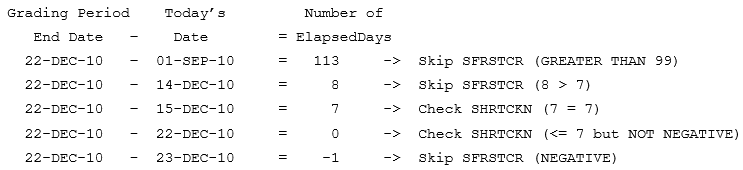

Technical Configuration Reference
Review configuration reference information as you work with Degree Works.
Shepherd settings
The Shepherd (SHP) Settings define various configurations for the java-based Degree Works software. To manage these settings, you can use the Controller application.
The Shepherd Settings contained in the shp_settings_mst table follow a naming structure that is in the format of module.submodule.name. All of the modules and submodules follow camel case standard notation with no underscores.
Some entries contained in the shp_settings_mst are for client modification, and others should not be modified. Entries that should not be modified by the client are designated with "Do not modify" in the Description field.
Spec value
While most Shepherd settings are specific to a particular application, there are many that generally apply to all applications (for example, core settings).
It may be desirable, in certain situations, to specify a different value for these general settings to different applications. The specification field allows you to create or modify configurations based on the application. Each application has a unique spec value. The application will first use the setting that contains that specification. If it is not found, the specification with the default value will be used. Most settings, even the general ones, are not application specific, and so have only the default specification. There are actually very few settings that require separate specifications. The possible specification values are:
| Spec | Application |
|---|---|
| default | All applications. Used if an application specific specification is not found. |
| controller | Controller |
| dashboard | Responsive Dashboard |
| services | Web services |
| transit | Transit |
| transitbe | Transit Batch Executor |
| treqadmin | Transfer Equivalency Admin |
| treqss | Transfer Equivalency Self-Service |
Value types
There are three types of values that are used to distinguish the value format for each Shepherd setting.
These types are defined next to the description for each entry. Note that valid Text values are case-sensitive and must be entered exactly as suggested in the setting description. Currently the Shepherd settings support the following value types:
| Value type | Accepted format |
|---|---|
| Block | Free text that may span more than one row (may include carriage returns). |
| Boolean | true or false |
| Choice | The field must contain one of the choices provided in the contained "choices" list. |
| Number | Numeric value only |
| Text | Free text that does not span more than one row (should not include carriage return). |
Module settings
articulation
The articulation.* settings define behavior for the articulation engine used in Transfer Equivalency Admin, Transfer Equivalency Self-Service, and Transfer Finder.
| Key | Value Type | Description |
|---|---|---|
| articulation.leftoverCourse.courseDiscipline | Text | The course discipline of the default course to use in those instances when no other course can be identified. E.g. "MATH". This setting is used together with the .courseNumber setting to form the complete course key (e.g. MATH 101). |
| articulation.leftoverCourse.courseNumber | Text | The course number of the default course to use in those instances when no other course can be identified. E.g. "101". This setting is used together with the .courseDiscipline setting to form the complete course key (e.g. MATH 101). |
| articulation.resolutionRules.duplicate | Text | The rules to invoke when more than one transfer class maps to a single local class. Valid values for this setting are 'NONE', 'DEFAULT', 'CREDITMAX', 'LOCALHIGH', 'RECENT' and 'TRANSFERHIGH'. |
| articulation.resolutionRules.undecided | Text | The rules to invoke when a class can be used in multiple possible mappings. Valid values for this setting are 'NONE', 'DEFAULT', 'CREDITMAX', 'LOCALHIGH', 'RECENT' and 'TRANSFERHIGH'. |
| articulation.ruleOfLastResort | Text | The rule to be used if the list provided in "duplicate" or "undecided" does not result in a definitive resolution (i.e. one mapping chosen). This can be either "RANDOM" or "NONE". |
classicConnector
The classicConnector.* settings control the Degree Works Java software interaction with the classic Degree Works interface.
| Key | Value Type | Description |
|---|---|---|
| classicConnector.amqp.channelCacheSize | Number | The number of channels that are cached. Default=300. |
| classicConnector.amqp.exchange | Text | The name of the RabbitMQ exchange for requests going to web07. This must be unique for each environment. |
| classicConnector.amqp.timeout | Number | The amount of time in milliseconds the classic connector will wait for a web07 response. Default=60000. |
| classicConnector.serverCharset | Text | Controls the Degree Works communication standard character set. Do not modify. |
classic.daemons
The classic.* settings control the Degree Works software running on the classic Degree Works server. You must restart to see changes to these settings.
| Key | Value Type | Description |
|---|---|---|
| classic.daemons.dap25.auditMaximum | Number | The maximum number of audits to read per sleep cycle. |
| classic.daemons.dap25.auditsPerChild | Number | The number of audits to assign to each dap25 child process. |
| classic.daemons.dap25.loopMaximum | Number | The maximum number of times to loop. A value of 0 (run forever) is typical. A non-zero value is used only for testing. |
| classic.daemons.dap25.sleepSeconds | Number | The number of seconds to sleep before checking for more new audits. |
| classic.daemons.dap61.count | Number | The number of dap61 daemons to run to support Banner prereq checking requests. |
| classic.daemons.dap62.count | Number | The number of dap62 daemons to run to support Banner prereq description requests. |
| classic.daemons.rad08.count | Number | The number of rad08 daemons to run to support dynamic bridge requests (non-Banner). |
| classic.daemons.web07.count | Number | The number of web07 daemons to run to support web requests. |
core
The core.* settings are general system settings for the Degree Works Java software, controlling database and performance configuration.
| Key | Value Type | Description |
|---|---|---|
| client.staleDataCheckInterval | Number | This setting defines the time interval, in seconds, after which the application will check that its data is still current. If it finds that the data in the database has changed, it will notify the user and allow them to reload. |
| core.apiClient.connectTimeout | Number | This setting is used by Degree Works when acting as a client to access a web service. It is the maximum time, in milliseconds, that it will wait to connect to a service before reporting an error. Default value = 5000. |
| core.apiClient.readTimeout | Number | This setting is used by Degree Works when acting as a client to access a web service. It is the maximum time, in milliseconds, that it will wait on a read from a service before reporting an error. Default value = 30000. |
| core.authorization.adviseeFiltering.college.enabled | Boolean | This setting controls whether the option to add college filters for advisee filtering to a user's access record in Controller is enabled. When true, the College option in the Add Filter dialog will be active if the user does not have any filters defined. When false, the College option will still display but will be inactive. |
| core.authorization.adviseeFiltering.department.enabled | Boolean | This setting controls whether the option to add department filters for advisee filtering to a user's access record in Controller is enabled. When true, the Department option in the Add Filter dialog will be active if the user does not have any filters defined. When false, the Department option will still display but will be inactive. |
| core.authorization.adviseeFiltering.school.enabled | Boolean | This setting controls whether the option to add school filters for advisee filtering to a user's access record in Controller is enabled. When true, the School option in the Add Filter dialog will be active if the user does not have any filters defined. When false, the School option will still display but will be inactive. |
| core.commonNavigation.token.baseUrl | Text | Stores the base URL used to retrieve authentication tokens for supporting the Ellucian common navigation bar. This value is environment-specific and should be configured according to your institution’s setup. Warning: This system-level setting impacts core Degree Works functionality. Only a system administrator should modify it.
|
|
core.course.alias.enabled |
Boolean | Bridge course number aliases from SCRCALS and display them in Responsive Dashboard. When true, the course number aliases will be extracted. When false, the course number aliases will not be extracted. |
| core.course.alias.userClasses | Text | Comma-separated list of user classes that will see the course number alias instead of the real course number. |
| core.course.collegeIsEntity.enabled | Boolean | This setting controls whether to display college names appended to course names during course search in Plans. It does not affect the course extract process itself. |
| core.createShpLogs.enabled | Boolean | Controls the creation of the shp_log_dtl entries for every request that goes to web07 on the classic server. When true, the logs will be created; otherwise they will not be created. |
| core.credit.format | Text | This setting defines the display format for credits. The # characters can only be integers, but they are optional. 0 characters can only be integers. If left blank they will be replaced with zeroes, which controls the leading/trailing zeroes. The decimal separator should always be a period. |
| core.ethos.tenantId | Text | Stores the Ethos tenant ID. This value must match your configured Ethos tenant. Changing it may impact Degree Works ability to communicate with Ethos. Warning: This system-level setting impacts core Degree Works functionality. Only a system administrator should modify it.
|
| core.gpa.format | Text | This setting defines the display format for the GPA. The # characters can only be integers, but they are optional. 0 characters can only be integers. If left blank they will be replaced with zeroes, which controls the leading/trailing zeroes. The decimal separator should always be a period. Check CFG020 DAP14 to ensure the Display GPA number of places flag matches the number of decimal places entered. |
| core.hibernate.dialect | Text | This setting specifies the database dialect that hibernate will use (for example, Oracle, Mysql, and so on). Currently, Degree Works only accepts the default value. Do not modify. |
| core.idFactory.idPrefix | Text | This setting defines the prefix string used when creating IDs for Transfer Equivalency Self-Service. |
| core.institution.calendarType | Text | This setting defines the calendar at the institution (that is, Semester, Quarter, and so on). The value should be the key from STU346 (for example, SE). |
| core.performance.thresholdMilliseconds | Number | This setting specifies the max number of seconds a java method can run before printing a warning message in the logs. This value is used as a performance measurement. |
| core.requisite.validate.enable | Boolean | Indicates whether requisite checking should be enabled. If set to true, requisite checking will be enabled and the user will receive a warning if any pre- or co-requisite classes are missing. |
| core.shpSetting.encryptionKey | Text | Global Encryption Key for SHP settings. The value should have a minimum length of 8 characters. Warning: This system-level setting impacts core Degree Works functionality. Only a system administrator should modify it.
|
| core.treq.selfService.auditArticulate.report.default | Text | The default value of UCX- RPT036 report type key for Transfer Equivalency Self-Service Audit web service. |
| core.week.startingDay | Text | Used in Transit recurring scheduling to determine the day that starts a week for a weekly schedule. This may affect how the next date for a recurring schedule is calculated. The default is MONDAY, the ISO standard. |
core.amqp
The core.amqp* settings control the behavior of RabbitMQ with Degree Works applications.
| Key | Value Type | Description |
|---|---|---|
| core.amqp.broadcast.heartbeatSeconds | Number | The number of heartbeat seconds that RabbitMQ ucx-clean and settings-clean connections should be kept alive. This is useful for environments using networking tools or equipment that terminate idle TCP connections between the applications and RabbitMQ, and the recommended value is 55 seconds for most situations. For environments without such timeouts, the recommended value is 0 seconds. |
| core.amqp.broker.host | Text | The host name or IP address where RabbitMQ server is installed. Warning: This system-level setting impacts core Degree Works functionality. Only a system administrator should modify it.
|
| core.amqp.broker.port | Number | The port number on which the RabbitMQ server is running, which is typically 5672 for TCP and 5671 for SSL. If you configure the server to use the SSL port, set core.amqp.useSsl to true. If you use the TCP port instead, set core.amqp.useSsl to false. Default value = 5672. Warning: This system-level setting impacts core Degree Works functionality. Only a system administrator should modify it.
|
| core.amqp.exchange.shpSettings | Text | The name of the RabbitMQ exchange used to signal a change in Shep settings. This must be unique for each environment. |
| core.amqp.exchange.transit | Text | The name of the RabbitMQ exchange used to launch jobs from Transit. This must be unique for each environment. |
| core.amqp.exchange.ucx | Text | The name of the RabbitMQ exchange used to signal a change in UCX records. This must be unique for each environment. |
| core.amqp.password | Text | The password for connecting to the RabbitMQ server. (Use rabbitmqctl change_password to change a user's password.) Warning: This system-level setting impacts core Degree Works functionality. Only a system administrator should modify it.
|
| core.amqp.request.heartbeatSeconds | Number | The number of heartbeat seconds that RabbitMQ dashboard request connections should be kept alive. This is useful for environments using networking tools or equipment that terminate idle TCP connections between the applications and RabbitMQ, and the recommended value is 55 seconds for most situations. For environments without such timeouts, the recommended value is 0 seconds. |
| core.amqp.request.timeoutSeconds | Number | The number of seconds web07 should wait for a new request to be placed on the queue. If no request is received before the timeout seconds is hit, web07 will check for a ucx-clean or settings-clean request and then go back to checking for another request using the same timeout value. For most environments, a value of 600 seconds is suggested. For environments using a load balancer, this value should be less than core.amqp.request.heartbeatSeconds. |
| core.amqp.username | Text | The username for connecting to the RabbitMQ server. (Use rabbitmqctl list_users to see the list of available users.) Warning: This system-level setting impacts core Degree Works functionality. Only a system administrator should modify it.
|
| core.amqp.useSsl | Boolean | Use SSL connectivity with RabbitMQ. The port must be changed to the SSL port - which is typically 5671. Default=false. See Enable SSL/TLS for Degree Works and RabbitMQ before enabling this setting. |
| core.amqp.virtualHost | Text | The virtual host for RabbitMQ server; usually this is '/' |
core.articulation
The core.articulation* settings define default values for the transfer articulation engine.
| Key | Value Type | Description |
|---|---|---|
| core.articulation.default.catalogYear | Text | This is the default value for the catalog year that will be used when running an audit. This setting applies to the audit web service for TransferFinder. |
| core.articulation.default.gradeType | Text | This is the Grade Type value used in conjunction with the STU398 Transfer Grade and core.articulation.default.school to determine which STU385 entry to use when evaluating a minimum grade on a mapping during articulation. |
| core.articulation.default.school | Text | This is the School value used in conjunction with the STU398 Transfer Grade and core.articulation.default.gradeType or core.articulation.gradeType to determine which STU385 entry to use when evaluating a minimum grade during articulation or generating a transfer audit. |
| core.articulation.gradeType | Text | This is the Grade Type used in conjunction with the STU398 Transfer Grade and core.articulation.default.school to determine which STU385 entry to use when evaluating minimum grade rules on a transfer audit. |
| core.articulation.lookup.stopCatalogYear | Number | A mapping is considered active if its local catalog year end (DAP_CAT_YR_STOP) is equal to or greater than this value. Used only in Transfer Lookup, a Transfer Finder feature. |
| core.articulation.translateGlobalSchoolIds | Boolean | Defines if the School Code will be translated to Local. |
core.audit
The core.audit* settings define behaviors for audit generation in various applications such as Transfer Equivalency Self-Service and the PDF audit output generated in Responsive Dashboard and Transit.
| Key | Value Type | Description |
|---|---|---|
| core.audit.batch.progress.interval.seconds | Number | The number of seconds between checking to see how many audits have been processed so far. Used by DAP22 when running audits created as part of the RAD11 bridge or the Banner extract script and also batch audits run on the classic server. This allows those viewing the audit log to determine approximately when the batch will finish. |
| core.audit.cpa.latestTermOnly | Boolean | When set to false, all data for previous terms is retained. When set to true, CPA records for older terms will be deleted when new CPA records are built for the student's active term. That is, there will only ever be one term's worth of CPA data for each student's school/degree audit. If this setting is changed from false to true, Ellucian strongly recommends removing the old data before the next time you run DAP22 to create CPA data. Doing so prevents this process from taking a long time to complete while it deletes the records from the database. Your team should consider truncating the dap_result_dtl, dap_resClass_dtl, and dap_resNoncr_dtl tables. |
| core.audit.printView.dimensions.defaultValue | Text | The default selected key for print dimensions drop-down lists. |
| core.audit.printView.repeat.codes | Text | For Responsive Dashboard PDF output generated in the UI and through Transit, when the Show Repeats flag in UCX-RPT036 is enabled the classes with one of these repeat codes will appear with a repeat indicator in the worksheet. The class status on each class is matched against the codes in this comma separated list. This is usually set to the same value as dash.audit.repeat.codes. |
| core.audit.printView.showNotesInternal | Boolean | For the Responsive Dashboard PDF, if this setting is true, internal notes will be included in the PDF audit. If the setting is false, internal notes will not be included in the PDF audit. |
| core.audit.printView.showStudentId | Text | For Responsive Dashboard PDF output generated in the UI and through Transit, N means do not show the student ID, 0 (zero) to show the student ID and not mask any characters, and 1-10 to show the student ID and mask this number of characters, starting from the first character. |
| core.audit.printView.studentHeader.custom.items | Text | For Responsive Dashboard PDF output generated in the UI and through Transit, list the custom data that should appear in the student header of the worksheet. This is usually set to the same value as dash.studentHeader.custom.items. To display custom data that should appear only for users of a certain user class, you can use Controller to create a new setting with the user class as a suffix. For example, create new setting dash.worksheets.custom.items.adv with the list of the custom data items that should appear only for users in the ADV user class. |
| core.audit.printView.studentHeader.goals.items | Text | For Responsive Dashboard PDF output generated in the UI and through Transit, list the goals that should appear in the student header of the worksheet. This is usually set to the same value as dash.studentHeader.goals.items. |
| core.audit.process.runOnScribeChanges.enabled | Boolean | When viewing the most recent audit in the dashboard, the API, or Transit, run a new audit if any changes were made to the Scribe blocks in the student's audit after the last audit was generated. The default is false. |
| core.audit.programAsDegree | Boolean | If set to true, Program will be used as the overall Degree while generating an API What-If Audit and the Degree field will be ignored. This is only used by Banner schools and this field must be true when the UCX-CFG020 BANNER Use Program as Degree flag is Y and it must be false when the flag is N. |
| core.audit.useEtsType | Boolean | If set to true, the ets-type field on the rad-ets-mst for the transfer school associated with each transfer class will be sent to the auditor as an attribute with a key of DWETSTYPE and a value of the ets-type. This DWETSTYPE can then be used in a WITH qualifier when scribing. |
| core.audit.view.reduceAuditTree.enabled | Boolean | If set to true, performance when generating new audits may be improved by limiting the XML/JSON audit tree to only what is needed by the worksheet as defined by the RPT036 Show flags. |
core.security
The core.security* settings control security configurations and behavior for the Degree Works Java software.
| Key | Value Type | Description |
|---|---|---|
| core.security.authenticationType | Text | Determines how the login credentials are collected. Defaults to SHP, which uses the internal Degree Works login screen for the application. Other valid values are CAS or SAML, which redirect to the appropriate URL configured in other settings. If set to SHP, then one or both of core.security.ldap.enable or core.security.shp.authentication.enabled must be set to true. Warning: This system-level setting impacts core Degree Works functionality. Only a system administrator should modify it.
|
| core.security.cas.callbackUrl | Text | The URL used by the CAS server to return to the application after authentication has succeeded. This is usually the root of the application. You will need a separate instance of this setting, with different spec values, for each application. For example: https://your.server.com:8443/your_Dashboard Make sure there is no / at the end of the URL. Warning: This system-level setting impacts core Degree Works functionality. Only a system administrator should modify it.
|
| core.security.cas.idAttribute | Text | The attribute which maps the CAS user to the Degree Works user. Warning: This system-level setting impacts core Degree Works functionality. Only a system administrator should modify it.
|
| core.security.cas.loginUrl | Text | The URL of the login form for your CAS server. For example: https://cas.myschool..edu/cas/login. Warning: This system-level setting impacts core Degree Works functionality. Only a system administrator should modify it.
|
| core.security.cas.serverUrlPrefix | Text | The start of the CAS server URL. For example: https://cas.myschool..edu/cas. Warning: This system-level setting impacts core Degree Works functionality. Only a system administrator should modify it.
|
| core.security.contentSecurityPolicy.connectSrc | Text | Supplement to the Content Security Policy connect-src directive. Do not include self. Changes to this setting require a restart of all web applications. Multiple values should be separated by a single space. |
| core.security.contentSecurityPolicy.formAction | Text | Supplement to the Content Security Policy form-action directive. Do not includeself. Changes to this setting require a restart of all web applications. Multiple values should be separated by a single space. |
| core.security.contentSecurityPolicy.frameAncestors | Text | Supplement to the Content Security Policy frame-ancestors directive. Changes to this setting require a restart of all web applications. Multiple values should be separated by a single space. |
| core.security.contentSecurityPolicy.imgSrc | Text | Supplement to the Content Security Policy img-src directive. Do not include self. Changes to this setting require a restart of all web applications. Multiple values should be separated by a single space. |
| core.security.contentSecurityPolicy.scriptSrc | Text | Supplement to the Content Security Policy script-src directive. Do not includeself. Changes to this setting require a restart of all web applications. Multiple values should be separated by a single space. |
| core.security.contentSecurityPolicy.styleSrc | Text | Supplement to the Content Security Policy style-src directive. Do not include self. Changes to this setting require a restart of all web applications. Multiple values should be separated by a single space. |
| core.security.enableIpAddressCheck | Boolean | This setting defines if it is required that every request comes from the same IP address as when the user logged in. Note, the new IPV6 format is not yet supported. |
| core.security.externalAccessManager.assertionIsCookie | Boolean | If true, expect to find assertion value in a cookie. If false, expect to find it in a header. |
| core.security.externalAccessManager.assertionName | Boolean | The name of the external access assertion token. |
| core.security.externalAccessManager.enable | Boolean | Enable external access manager. It is important to note that care must be takenbe careful to never leave this flag enabled (true) unless an external access manager is in place, configured and operational. Otherwise, applications are vulnerable to unauthorized access where anyone could impersonate any user. |
| core.security.ldap.adminDn | Text | Defines the LDAP admin distinguished name (DN). This is used to locate the users dn in the LDAP server. Warning: This system-level setting impacts core Degree Works functionality. Only a system administrator should modify it.
|
| core.security.ldap.adminPassword | Text | Defines the LDAP admin password. It is stored in an encrypted format. Warning: This system-level setting impacts core Degree Works functionality. Only a system administrator should modify it.
|
| core.security.ldap.enable | Boolean | When true a user’s credentials will be validated against LDAP when If this setting is set to true, LDAP authentication will be enabled. This will only happen, however, if the core.security.authenticationType setting is SHP. All settings prefixed with core.security.ldap should be set appropriately when this setting is true. If set to false when the authenticationType is set to SHP, then the core.security.shp.authentication.enabled must should be set to true or else you would have no data source enabled for authentication. Both SHP and LDAP can be enabled concurrently if desired. Default value is set to false. |
| core.security.ldap.serverUrl | Text | Defines the LDAP server URL. Example ldaps://ldap.myschool.edu:636. Warning: This system-level setting impacts core Degree Works functionality. Only a system administrator should modify it.
|
| core.security.ldap.studentId.attribute | Text | Defines the LDAP attribute that is a SHP user’s alternate ID. |
| core.security.ldap.studentId.suffix | Text | When not empty, this suffix is expected to be found appended to every users’ ID attribute, as defined in core.security.ldap.studentId.attribute. It will be removed before the value is used to find the user’s SHP record. |
| core.security.ldap.userDnPattern | Text | This setting defines the LDAP user distinguished name (DN) pattern. It is relative to the base defined in the core.security.ldap.serverUrl setting. Use the token {0} to substitute the user’s access ID into the pattern. For example, uid={0}. Either this setting or the core.security.ldap.userSearchFilter setting or both must be specified. |
| core.security.ldap.userSearchBase | Text | This setting defines the LDAP user search base. It is used to find the user’s distinguished name. This restricts the scope of the core.security.ldap.userSearchFilter pattern during the search. |
| core.security.ldap.userSearchFilter | Text | This setting defines the LDAP user search filter. It is used to find the user’s distinguished name. This follows the standard LDAP filter expression format as defined in RFC 2254. You should include the special token {0} to represent the user’s Access ID as entered in the login screen. For example uid={0}. The scope of this search may be limited by using the core.security.ldap.userSearchBase setting. Either this setting or the core.security.ldap. userDnPattern setting or both must be specified. |
| core.security.logoutUrl | Text | This setting defines the url to redirect after a successful logout. Only for treqss specification, the value should be / and is not customizable. Warning: This system-level setting impacts core Degree Works functionality. Only a system administrator should modify it.
|
| core.security.newUser.roles | Text | This setting determines the roles that will be assigned to users when they create a logon in Transfer Equivalency Self-Service. |
| core.security.newUser.userClass | Text | This setting determines the user class that will be assigned to users when they create a logon in Transfer Equivalency Self-Service. |
| core.security.passport.timeoutIncrementDefault | Number | The default passport timeout increment. This will be used if the core.security.passport.timeoutPrecedence is set to D or no other timeout increments are specified for a user. This setting can have a significant effect on your Java server (for example, Tomcat) memory requirements. |
| core.security.passport.timeoutMaximumDefault | Number | The default passport timeout maximum. This will be used if the core.security.passport.timeoutPrecedence is set to D or no other timeout maximums are specified for a user. |
| core.security.passport.timeoutPrecedence | Text | Determines the source of the passport timeout increment and maximum. Setting this to D will cause the timeout values to come from the shp settings core.security.passport.timeoutIncrementDefault and core.security.passport.timeoutMaximumDefault. Setting this to U will cause the timeout values to come from the Shp User record if it is non-zero. Setting this to G will cause the timeout values to come from the Shp Group records for the groups to which the user belongs. If the setting is either G or U, and the initial setting does not result in a non-zero timeout value, then it will try the other option. |
| core.security.passport.timeoutPreference | Text | Used when setting the passport timeout values from the user’s groups. Because a user may belong to multiple groups, this setting specifies which group to use by indicating whether to use the group with the longest timeout maximum or the shortest. The valid values are L for longest timeout maximum, and S for shortest. |
| core.security.passport.validationInterval | Number | This setting defines the time interval, in milliseconds, after which the passport in user's session is refreshed. |
| core.security.passwordCheck.clearText.enabled | Boolean | If this setting is set to true no password encoding methods will be used and passwords will be in clear text form. Currently the default value is set to true. |
| core.security.passwordCheck.sha1.enabled | Boolean | If this setting is set to true the SHA1 encoding method will be used as a password encoding method. Currently the default value is set to false. |
| core.security.passwordEncoding.enabled | Boolean | If this setting is set to true it enables password encoding and encrypts user passwords. Currently the default value is set to false, however, setting encoding to false is not recommended due to security reasons. |
| core.security.referenceUser.password | Text | This setting determines the Transfer Equivalency Self-Service default user's password. This is to be used for communication with Degree Works classic for applications that allow anonymous users. This value must be the same as the TREQER user password on SHP_USER_MST. This field is encrypted. Warning: This system-level setting impacts core Degree Works functionality. Only a system administrator should modify it.
|
| core.security.referenceUser.username | Text | This setting determines the Transfer Equivalency Self-Service default user's username. This is to be used for communication with Degree Works classic for applications which allow anonymous users. Typically, this is the TREQER user. Warning: This system-level setting impacts core Degree Works functionality. Only a system administrator should modify it.
|
| core.security.refererAllowableUrls | Text | This setting provides a list of servers to determine if a URL contains proper referer or origin header information according to CORS rules. A check is performed on each URL, and if either the origin or referer information do not match one of the servers in the list, an error is displayed. Populate this setting with server names and not URLs. For example: server.myschool.edu, appserver.myschool.edu. When making a GET request (for example, linking to the dashboard through Experience), you do not need to include the server domain name in this setting. Warning: This system-level setting impacts core Degree Works functionality. Only a system administrator should modify it.
|
| core.security.rules.shpcfg | CLOB | The rules used to assign keys to a user when they login. These dynamic key assignments are based on user attributes, such as their role (e.g. Student, Advisor, etc.). This setting should now be maintained. The SHPCFG file on the classic server is now obsolete. |
| core.security.saml.assertionConsumerUrl | Text | Optional. If used, it is added to the last part of the AssertionConsumerService URL in the SAML assertion request. The first part is https://server.edu/context/saml/SSO/. It must match the Identity Provider configuration for this service provider. You need to configure this value of this setting for each application by using the spec value associated with that application. Modification of this setting does not require a restart of the applications. Warning: This system-level setting impacts core Degree Works functionality. Only a system administrator should modify it.
|
| core.security.saml.entityId | Text | The entityId attribute in the SAML assertion request sent to the Identity Provider. This must match the Identity Provider configuration. You must configure a different value for this setting for each application by using the spec value associated with that application. Modification of this setting does not require a restart of the applications. Warning: This system-level setting impacts core Degree Works functionality. Only a system administrator should modify it.
|
| core.security.saml.idAttribute | Text | The attribute which maps the SAML user to the Degree Works user. Warning: This system-level setting impacts core Degree Works functionality. Only a system administrator should modify it.
|
| core.security.saml.keystore.defaultKey | Text | A default key name to retrieve from the keystore for signing SAML requests. Usually would be set equal to the same value as core.security.saml.keystore.keypair.signingKey. Modification of this setting does not require a restart of the applications. Warning: This system-level setting impacts core Degree Works functionality. Only a system administrator should modify it.
|
| core.security.saml.keystore.keypair.password | Text | The password for the key specified by core.security.saml.keystore.keypair.signingKey. It is stored in an encrypted format. Modification of this setting does not require a restart of the applications. Warning: This system-level setting impacts core Degree Works functionality. Only a system administrator should modify it.
|
| core.security.saml.keystore.keypair.signingKey | Text | The alias of key to retrieve from the keystore for signing SAML requests. Modification of this setting does not require a restart of the applications. Warning: This system-level setting impacts core Degree Works functionality. Only a system administrator should modify it.
|
| core.security.saml.keystore.location | Text | The location of a java keystore which contains certificate for signing SAML requests. This points to a file on your server, and the value should start with file: Example: file:/u01/jdk1.7.0_11/bin/keystore.jks. Modifications of this setting do not require a restart of the applications. Warning: This system-level setting impacts core Degree Works functionality. Only a system administrator should modify it.
|
| core.security.saml.keystore.password | Text | The password to access the keystore. It is stored in an encrypted format. Modification of this setting does not require a restart of the applications. Warning: This system-level setting impacts core Degree Works functionality. Only a system administrator should modify it.
|
| core.security.saml.metadata.identityProviderUrl | Text | The URL at the Identity Provider that provides its configuration metadata. Either this setting or core.security.saml.metadata.xml.identityProvider must be provided, with this setting taking precedence over the other. Modification of this setting does not require a restart of the applications. Warning: This system-level setting impacts core Degree Works functionality. Only a system administrator should modify it.
|
| core.security.saml.metadata.xml.identityProvider | XML | An XML document which defines the identity provider metadata conforming to schema: urn:oasis:names:tc:SAML:2.0:metadata. This setting will be used only if the setting core.security.saml.metadata.identityProviderUrl is empty. Modification of this setting does not require a restart of the applications. Warning: This system-level setting impacts core Degree Works functionality. Only a system administrator should modify it.
|
| core.security.saml.metadata.xml.serviceProvider | XML | Obsolete Use core.security.saml.assertionConsumerUrl and core.security.saml.entityId to configure the service provider. |
| core.security.sessionTimeout.warningSeconds | Number | The number of seconds before Degree Works displays a warning and the user session times out. Default value = 180. |
| core.security.shp.authentication.enabled | Boolean | When true a user’s credentials will be validated against the Shep user database. This will only happen, however, if the when core.security.authenticationType setting is SHP. If set to false when the authenticationType is set to SHP, the core.security.ldap.enable should be set to true or you would have no data source enabled for authentication. Both SHP and LDAP can be enabled concurrently if desired. Default value is set to true. Warning: This system-level setting impacts core Degree Works functionality. Only a system administrator should modify it.
|
| core.security.shp.failLoginResetMinutes | Number | The number of minutes after the user has exceeded their maximum number of failed login attempts, as specified in the setting core.security.shp.maxLoginAttempts, that the user may again try to login. If they try before the given number of minutes, even successful logins will fail. Setting this to zero will disable the check completely. |
| core.security.shp.maxLoginAttempts | Number | The maximum number of consecutive times a user can fail a login before further logins are ignored (that is, automatically failed). The logins will be failed automatically for a period defined in the setting core.security.shp.failLoginResetMinutes, after which the user may try again. |
| core.security.singleSignoutEnabled | Boolean | When true, logging out of Degree Works will also log users out of their single sign-on session. There are other configurations tied to this setting. Modification of this setting does not require a restart of the applications. For more information, see SAML single sign-on and sign-off. |
| core.security.ssoId.assertionPattern | Text | A Java style regular expression matching the SAML claim (specified in core.security.saml.idAttribute). If the claim does not match this pattern, the authentication will be rejected. The pattern must include a named capturing group with the name id (for example, (?<id>.+)). This group will be used to extract the value used to retrieve the Degree Works user record by the Single Sign-on ID field. |
| core.security.stateless.secretkey | Text | The key used for encoding and decoding the stateless token. This will be used to encode the user details while creating the token and to decode the user details from the token during authentication. This key must be at least 32 bytes in length. |
| core.security.stateless.token.customer.audience | Text | An optional value which will be added to the stateless tokens created by Degree Works. It isn’t validated by applications but may be validated in the future, so its benefit is to add customer-specific identifying information to those tokens. The aud (audience) claim identifies the recipients that the JWT is intended for. In the general case, the aud value is an array of case-sensitive strings, each containing a StringOrURI value. |
| core.security.stateless.token.customer.issuer | Text | An optional value which will be added to stateless tokens created by Degree Works. It isn’t validated by applications but may be validated in the future, so its benefit is to add customer-specific identifying information to those tokens. The iss (issuer) claim identifies the principal that issued the JWT. The iss value is a case-sensitive string containing a StringOrURI value. |
core.site
The core.* settings are used in Transfer Finder to define site specific variables.
| Key | Value Type | Description |
|---|---|---|
| core.site.displayName | Text | Defines the school name as it should appear on the transfer audit in Transfer Equivalency Self-Service and Transfer Finder. Default is Local School Name. |
| core.site.id | Text | The School ID as defined in the SchoolDirectory. It should not be the alternate school ID if the institution uses one. This is used by etssync to map the rad_ets_user field on the ets_mst for the alternate school ID. For more information, see the School directory topic. |
| core.site.idType | Text | Defines the Local School Code Type, this is used to translate schools codes with a Global Central reference. |
core.whatIf
The core.whatIf* settings define behavior for the What-If functionality.
| Key | Value Type | Description |
|---|---|---|
| core.whatIf.changeCatalogYear | Boolean | This setting defines whether a user can change the What-If audit Catalog Year field. |
| core.whatIf.concTiedToMajor | Boolean | If set to true, the primary area Concentration is filtered by curriculum rules and the selected Major value. The Banner Curriculum Rules extract (RAD35 in Transit) also uses this flag, so if this setting is changed, this extract must be rerun. This setting is used only when curriculum rule filtering is enabled. See also the related setting core.whatIf.showAllConcsInPrimary. |
| core.whatIf.defaultCatalogYear | Boolean | This setting defines what default value displays for the Catalog Year, which overrides student data. Leave it blank if you want the What-If to default to the student's catalog year. |
| core.whatIf.degreeBeforeCollege | Boolean | This setting defines the order of the Degree and College fields. If true, Degree displays before the College field. Used only when curriculum rule filtering is enabled. |
| core.whatIf.filterMode | Text | This setting defines the following filter modes used for Transfer Equivalency Self-Service academic goals and Responsive Dashboard What-If audits. N=No filtering R=Curriculum rules D=Degree drives major M=Major drives degree/level/college C=Major drives college |
| core.whatIf.filterConcentrationByMajor | Boolean | This setting defines filter concentrations by the chosen major based on the filter fields in UCX-STU563. This is valid only when core.whatIf.filterMode is C, D, or M. The core.whatIf.showConcentration Shepherd setting is ignored and the concentration always shows. |
| core.whatIf.futureClasses.enabled | Boolean | This setting shows the Future Classes section allowing users to enter additional coursework in the Responsive Dashboard What-If. |
| core.whatIf.majorRequired | Boolean | This setting defines whether the major is required in the primary area. This is applicable only if the Major field displays. If core.whatIf.filterMode is D, C, or M, this setting is ignored and the major always displays. |
| core.whatIf.mustUsePrimaryRule | Text | This setting defines whether the College and Degree in the primary area is used in the additional area of the Responsive Dashboard What-If. Valid values are: D: Additional area must use Degree from primary area. C: Additional area must use Degree and College from primary area. N: Degree and College in additional area can be different from primary area. Used only when curriculum rule filtering is enabled. |
| core.whatIf.programAdditionalRequired | Boolean | If showProgramAdditional is true, the program displays in the Responsive Dashboard What-If additional area. If configured to display in the additional area, the program displays first if programAdditionalRequired = true, or after college/degree/major/concentration/minor if programAdditionalRequired = false. Used only when curriculum rule filtering is enabled. |
| core.whatIf.showAllConcsInPrimary | Boolean | If set to true and there are no concentrations attached to the selected curriculum rule, this setting shows all concentrations in Transfer Equivalency Self-Service academic goals or in the Responsive Dashboard What-If Areas of study drop-down list. Used only when curriculum rule filtering is enabled. |
| core.whatIf.showAllConcsInSecondary | Boolean | If set to true and there are no concentrations attached to the selected curriculum rule, show all concentrations in the in the Responsive Dashboard What-If Additional areas of study drop-down list. Used only when curriculum rule filtering is enabled. |
| core.whatIf.showAllMinors | Boolean | If set to true and there are no minors attached to the selected curriculum rule, this setting shows all minors in Transfer Equivalency Self-Service academic goals or in the Responsive Dashboard What-If Areas of study and Additional areas of study drop-down lists. Used only when curriculum rule filtering is enabled. |
| core.whatIf.showCampus | Boolean | This setting defines whether the Campus is displayed after the term in Transfer Equivalency Self-Service academic goals or after the catalog year in the Responsive Dashboard What-If primary area. Used only when curriculum rule filtering is enabled. |
| core.whatIf.showCollege | Boolean | This setting defines whether the College is displayed in Transfer Equivalency Self-Service academic goals or in the Responsive Dashboard What-If primary and additional areas. If core.whatIf.filterMode is C, this setting is assumed to be true and College is a required field. If core.whatIf.filterMode is M and this setting is true, College is a required field. |
| core.whatIf.showConcentration | Boolean | This setting defines whether the Concentration displays in Transfer Equivalency Self-Service academic goals or in Responsive Dashboard What-If primary and additional areas. When core.whatIf.filterConcentrationByMajor is enabled, this setting is ignored. |
| core.whatIf.showLiberalLearning | Boolean | When this setting is set to true, the Liberal Learning field displays in the Areas of study section for core.whatIf.filterMode N, C, D, or M, and in the Responsive Dashboard What-If Additional areas of study section for core.whatIf.filterMode N or R. |
| core.whatIf.showMajor | Boolean | This setting defines whether the Major displays in Transfer Equivalency Self-Service academic goals or on the Responsive Dashboard What-If. This setting is assumed be true when core.whatIf.filterMode is D, C, or M. |
| core.whatIf.showMinor | Boolean | This setting defines whether the Minor displays in Transfer Equivalency Self-Service academic goals or on the Responsive Dashboard What-If. |
| core.whatIf.showProgramAdditional | Boolean | This setting defines whether the Program displays in the Responsive Dashboard What-If additional area. |
| core.whatIf.showProgramPrimary | Boolean | This setting defines whether the Program displays in the Responsive Dashboard What-If primary area. |
| core.whatIf.showSchool | Boolean | This setting defines whether the Level (aka School) displays in Transfer Equivalency Self-Service academic goals or in the Responsive Dashboard What-If primary area. In Transfer Equivalency Self-Service, this setting is assumed be true when core.whatIf.filterMode is N. |
| core.whatIf.showSpecialization | Boolean | When this setting is set to true, the Specialization field displays in the Areas of study section for core.whatIf.filterMode N, C, D, or M, and in the Responsive Dashboard What-If Additional areas of study section for core.whatIf.filterMode N or R. |
core.workflow
The core.workflow* settings define variable used in the integration between Degree Works and Banner Workflow.
| Key | Value Type | Description |
|---|---|---|
| core.workflow.externalSourceName | Text | In Banner Workflow, the external source name. Default is DegreeWorks. |
| core.workflow.password | Text | In Banner Workflow, the password for the core.workflow.username. This field is encrypted. Warning: This system-level setting impacts core Degree Works functionality. Only a system administrator should modify it.
|
| core.workflow.petition.enabled | Boolean | When enabled, Degree Works attempts to launch a Banner Workflow event when an exception petition is saved with PE pending status. Note: If core.workflow.petition.enabled is set to true, then dash.workflow.eip.petition.enabled must be set to false.
|
| core.workflow.petition.eventName | Text | The name of the event to be initiated. DW_PETITION is the sample Banner Workflow event name that is delivered with Degree Works. |
| core.workflow.petition.modelName | Text | The name of the model to be initiated. DW_PETITION is the sample Banner Workflow model that is delivered with Degree Works. |
| core.workflow.productTypeName | Text | In Banner Workflow, the product type name. Default is DegreeWorks. |
| core.workflow.username | Text | In Banner Workflow, the web service username. Default is wfwebservices. Warning: This system-level setting impacts core Degree Works functionality. Only a system administrator should modify it.
|
| core.workflow.wsdl | Text | The WSDL URL for your Banner Workflow server. Warning: This system-level setting impacts core Degree Works functionality. Only a system administrator should modify it.
|
dash
The dash.* settings control the Degree Works Java software interaction with the Responsive Dashboard.
| Key | Value Type | Description |
|---|---|---|
| dash.athletic.custom.items | Text | The student data items that display in the Athletic Eligibility Details section need to be listed here. Valid values are SPORT, SPORTDESC, ACADSTANDING, ACADSTANDESC, ATHLETE, and AEAFIRSTDATE. This setting typically does not need to be modified and new items cannot be added. To prevent one of these items from displaying, do not remove it from this setting. Instead, you need to modify the property. For more information, see the Athletic Eligibility audit details topic. |
| dash.audit.athletic.football.enabled | Boolean | Show the football status for those football athletes in the Athletic eligibility details section. |
| dash.audit.process.inprogress.defaultValue | Boolean | True=Include In-progress check box is checked by default. Additionally, if no include-inprogress value is included in the run-audit request this default value is used. |
| dash.audit.process.inprogress.enabled | Boolean | Show the Include In-progress check box when processing a new audit. |
| dash.audit.process.preregistered.defaultValue | Boolean | True=Include Preregistered check box is checked by default. Additionally, if no include-preregistered value is included in the run-audit request this default value is used. |
| dash.audit.process.preregistered.enabled | Boolean | Show the Include Preregistered check box when processing a new audit. |
| dash.audit.repeat.codes | Text | When the Show Repeats flag in UCX-RPT036 is enabled the classes with one of these repeat codes will appear with a repeat indicator in the worksheet. The class status on each class is matched against the codes in this comma separated list. |
| dash.audit.runIfNone.enabled | Boolean | Run a new audit if none is found for the given school and degree when a user is attempting to view the most recent audit. |
| dash.classHistory.auditSection.enabled | Boolean | In Class History, show the audit section to which a class applies if it does not apply to a requirement. |
| dash.classHistory.termSummary.enabled | Boolean | In Class History, after each term, show both a set of term and cumulative calculated values. Any item in the summary can be disabled by localizing the properties file. See the dash.classHistory.termSummary section of DashboardMessages.properties. |
| dash.courseInformation.enabled | Boolean | This setting defines whether to enable third-party course information functionality in the Responsive Dashboard. When true, course information will be retrieved from the source defined in dash.courseInformation.url, not Banner. |
| dash.courseInformation.url | Text | The url to use when description.dash.courseInformation.enabled is true. This should contain the URL and request format specified by the third-party course information vendor. |
| dash.courseLink.campus.enabled | Boolean | This setting defines whether to display the campus in the course section information shown in CourseLink. When true, a column with the campus will display after the meeting times. |
| dash.courseLink.meetingTime.24hour | Boolean | True=the meeting time format is 24-hours, otherwise it shows with the 12-hour AM/PM format. |
| dash.exceptionManagement.exceptionsReport.allowSearchOnAll | Boolean | True=users are allowed to search on all exceptions in Exception Management. |
| dash.exceptions.details.option | Text | N=do not allow exceptions details to be entered. Y=allow exceptions details to be entered. R=require the user to enter exceptions details. |
| dash.exceptions.eca.enabled | Boolean |
When true and when CFG020 DAP14 Calculate electives credits allowed is enabled, users with the EXPCHANG key are able to add an exception to change the Electives Credits Allowed. |
| dash.exceptions.fallThrough.enabled | Boolean | When true, users with the EXPAPPLY key are able to add an exception to apply a class to fall-through, either to the single section or to one of the special credits included or credits excluded sections if those sections are configured to show. |
| dash.exceptions.overTheLimit.enabled | Boolean | When true, users with the EXPAPPLY key are able to add an exception to apply a class to over-the-limit. |
| dash.exceptions.runAuditOnEnter | Boolean | True=a new audit is generated when the user goes to the exceptions page. |
| dash.exceptions.saveNewAudit | Boolean | True=the audit that is run after an exception is save will itself be saved. False=the audit is only shown to the user but not saved to the database. |
| dash.exceptions.tiedToDegree.enabled | Boolean | When true, exceptions will be tied to the student's degree. If the degree being audited does not match the degree on the exception, the exception will be skipped. When false, the degree will be ignored when dealing with exceptions. |
| dash.exceptions.tiedToSchool.enabled | Boolean | When true, exceptions will be tied to the student's school. If the school being audited does not match the school on the exception, the exception will be skipped. When false, the school will be ignored when dealing with exceptions. |
| dash.gpaCalculator.decimals | Number | The number of decimals to show for calculated values. This setting also controls the number of decimals displayed for the numeric grade value on the Advice Calculator. |
| dash.gpaCalculator.round | Boolean | True=Round the calculated GPA. False=Truncate the GPA at the number of digits specified in the decimals setting. This setting also rounds or truncates the numeric grade value displayed on the Advice Calculator. |
| dash.navigation.links.items | Text | Define a list of items to show in the LINKS menu at the top of the dashboard separated by a comma and a space. For example, item1, item2, item3. You may add as many links as you link. See the dash.navigation.links properties in the DashboardMessages.properties resource for defining each of the link items. |
| dash.notes.internal.enabled | Boolean | True=enable the internal notes check box. |
| dash.notes.predefined.enabled | Boolean | True=enable the predefined notes drop-down. |
| dash.notes.tiedToDegree.enabled | Boolean | When true, notes will be tied to the student's degree. If the degree being audited does not match the degree on the note, the note will be skipped. When false, the degree will be ignored when dealing with notes. |
| dash.notes.tiedToSchool.enabled | Boolean | When true, notes will be tied to the student's school. If the school being audited does not match the school on the note, the note will be skipped. When false, the school will be ignored when dealing with notes. |
| dash.plans.print.notesPanel.enabled | Boolean | Show the plan notes in the printed plan view. |
| dash.refresh.external.enabled | Boolean | True=enable the external refresh process. See the Student Data Refresh topic. If enabled, the following settings must also be completed:
|
| dash.refresh.external.password | Text | The password part of the basic authentication sent as credentials to the external refresh API. Warning: This system-level setting impacts core Degree Works functionality. Only a system administrator should modify it.
|
| dash.refresh.external.url | Text | The URL of the external refresh API that is called by the Dashboard when a refresh is requested. It should include a special token {studentId} that will be replaced by the student’s Degree Works ID. The optional token {userId} may be used. It will be replaced by the user’s Degree Works access ID and may be used for logging or other purposes. Warning: This system-level setting impacts core Degree Works functionality. Only a system administrator should modify it.
|
| dash.refresh.external.username | Text | The user ID part of the basic authentication sent as credentials to the external refresh API. Warning: This system-level setting impacts core Degree Works functionality. Only a system administrator should modify it.
|
| dash.search.catalogYear.enabled | Boolean | True=enable the catalog year drop-down on the student search page. |
| dash.search.college.enabled | Boolean | True=enable the college drop-down on the student search page. |
| dash.search.concentration.enabled | Boolean | True=enable the concentration drop-down on the student search page. |
| dash.search.currentTerm | Text | The current term to match against the active term on rad_student_mst when searching. Students with terms older than this currentTerm will be excluded from the search results. Leave this field blank to have no filtering occur. |
| dash.search.custom.cst001.code | Text | Code of custom search item 1 in the advanced search window. |
| dash.search.custom.cst001.enabled | Boolean | Show custom search item 1 drop-down in the advanced search window. |
| dash.search.custom.cst002.enabled | Boolean | Show custom search item 2 drop-down in the advanced search window. |
| dash.search.custom.cst002.code | Text | Code of custom search item 2 in the advanced search window. |
| dash.search.custom.cst003.enabled | Boolean | Show custom search item 3 drop-down in the advanced search window. |
| dash.search.custom.cst003.code | Text | Code of custom search item 3 in the advanced search window. |
| dash.search.custom.cst004.enabled | Boolean | Show custom search item 4 drop-down in the advanced search window. |
| dash.search.custom.cst004.code | Text | Code of custom search item 4 in the advanced search window. |
| dash.search.custom.cst005.enabled | Boolean | Show custom search item 5 drop-down in the advanced search window. |
| dash.search.custom.cst005.code | Text | Code of custom search item 5 in the advanced search window. |
| dash.search.custom.cst006.enabled | Boolean | Show custom search item 6 drop-down in the advanced search window. |
| dash.search.custom.cst006.code | Text | Code of custom search item 6 in the advanced search window |
| dash.search.custom.cst007.enabled | Boolean | Show custom search item 7 drop-down in the advanced search window. |
| dash.search.custom.cst007.code | Text | Code of custom search item 7 in the advanced search window. |
| dash.search.custom.cst008.enabled | Boolean | Show custom search item 8 drop-down in the advanced search window. |
| dash.search.custom.cst008.code | Text | Code of custom search item 8 in the advanced search window. |
| dash.search.custom.cst009.enabled | Boolean | Show custom search item 9 drop-down in the advanced search window. |
| dash.search.custom.cst009.code | Text | Code of custom search item 9 in the advanced search window. |
| dash.search.custom.cst010.enabled | Boolean | Show custom search item 10 drop-down in the advanced search window. |
| dash.search.custom.cst010.code | Text | Code of custom search item 10 in the advanced search window. |
| dash.search.degree.enabled | Boolean | True=enable the degree drop-down on the student search page. |
| dash.search.degreeSource.enabled | Boolean | True=enable the degree source drop-down on the student search page. |
| dash.search.level.enabled | Boolean | True=enable the student class level (aka classification) drop-down on the student search page. |
| dash.search.liberalLearning.enabled | Boolean | True=enable the liberal learning drop-down on the student search page. |
| dash.search.major.enabled | Boolean | True=enable the major drop-down on the student search page. |
| dash.search.maximum | Number | The maximum number of students to be returned in the student search results. |
| dash.search.minor.enabled | Boolean | True=enable the minor drop-down on the student search page. |
| dash.search.program.enabled | Boolean | True=enable the program drop-down on the student search page. |
| dash.search.school.enabled | Boolean | True=enable the school (aka level) drop-down on the student search page. |
| dash.search.specialization.enabled | Boolean | True=enable the specialization drop-down on the student search page. |
| dash.search.studentId.mask | Number | How many characters of the student ID should be masked on the main dashboard page. For example, given a 9-character student ID and this mask set to 5 the ID will appear as *****6789 – the first 5 characters are masked. |
| dash.search.studentStatus.enabled | Boolean | True=enable the student status (aka student type) drop-down on the student search page. |
| dash.studentHeader.custom.enabled | Boolean | True=show the custom items specified in the custom.items setting in the header of the dashboard. |
| dash.studentHeader.custom.items | Text | An ordered list of custom items to show in the student header separated by a comma. The space after the comma is optional. For example, acadstanding, writexam, mathexam. Each code must be lowercase and either be set up in UCX-SCR002 or UCXRPT046, or in a code on rad_report_dtl. If a value does not exist for a student, then it and its label will not appear in the header. The label for the value must be added to DashboardMessages.properties using the form dash.studentHeader.custom.xxxxx where xxxxx is the lowercase value added to this items list. If you want the custom label to appear when the custom value does not exist for the student, add the appropriate property with the none suffix. For example, dash.studentHeader.custom.xxxxx.none =Unknown macro: {label} (no xxxxx). If this setting is empty and custom.enabled is true, all report values (but not custom values) will show for the student. This is the default behavior. To display custom data that should appear only for users of a certain user class, you can use Controller to create a new setting with the user class as a suffix. For example, create new setting dash.worksheets.custom.items.adv with the list of the custom data items that should appear only for users in the ADV user class. The order of the items in this list determines the order the items will appear in the student header. Also see dash.worksheets.custom.items for the planner audit. |
| dash.studentHeader.goals.items | Text | An ordered list of goal items to show in the student header, separated by a comma. The space after the comma is optional. The full list of goals is school, classification, major, minor, program, conc, college, spec, libl. Each code must be lowercase. To hide a goal from showing simply remove it from the list. If a goal does not exist for a student then it and its label will not appear in the header. If you want the goal label to appear when the goal does not exist then add the appropriate property with the “none” suffix. For example, dash.home.context.MAJORFormat.none={label} (no major). See the baseline properties file for a full list of the none goal properties. The order of the items in this list determines the order the goals will appear in the student header. Also see dash.worksheets.goals.items for the planner audit. |
| dash.workflow.eip.petition.enabled | Boolean | When enabled, Degree Works creates a petition in Ellucian Intelligent Process (EIP) Workflow to manage the approval process for petitions saved with a PE (Pending) status in Degree Works. Note: If dash.workflow.eip.petition.enabled is set to true, then core.workflow.petition.enabled must be set to false.
|
| dash.workflow.eip.petition.ethosApiKey | Text | The Ethos API key used to authenticate requests to the Ethos API when creating a petition in Ellucian Intelligent Process (EIP). |
| dash.workflow.eip.petition.ethosBaseUrl | Text | The Ethos base URL used to create a petition in Ellucian Intelligent Process (EIP). |
| dash.workflow.eip.petition.workflowId | Text | The workflow ID in Ellucian Intelligent Process (EIP) used when creating a petition. |
| dash.worksheets.custom.enabled | Boolean | True=show the custom items specified in the custom.items setting in the planner audit. |
| dash.worksheets.custom.items | Text | An ordered list of custom items to show in the planner audit separated by a comma. The space after the comma is optional. For example, acadstanding, writexam, mathexam. Each code must be lowercase and either be set up in UCX-SCR002 or UCXRPT046, or in a code on rad_report_dtl. If a value does not exist for a student, then it and its label will not appear in the header. The label for the value must be added to DashboardMessages.properties using the form dash.worksheets.custom.xxxxx where xxxxx is the lowercase value added to this items list. If you want the custom label to appear when the custom value does not exist, add the appropriate property with the “none” suffix. For example, dash.worksheets.custom.xxxxx.none = Unknown macro: {label}(no xxxxx). If this setting is empty and custom.enabled is true, all report values (but not custom values) will show for the student. This is the default behavior. To display custom data that should appear only for users of a certain user class, you can use Controller to create a new setting with the user class as a suffix. For example, create new setting dash.worksheets.custom.items.adv with the list of the custom data items that should appear only for users in the ADV user class. The order of the items in this list determines the order the items will appear in the planner audit. Also see dash.studentHeader.custom.items for the student header. |
| dash.worksheets.goals.items | Text | An ordered list of goal items to show in the planner audit, separated by a comma. The space after the comma is optional. The full list of goals is school, classification, major, minor, program, conc, college, spec, libl. Each code must be lowercase. To hide a goal from showing simply remove it from the list. If a goal does not exist for a student then it and its label will not appear in the header. If you want the goal label to appear when the goal does not exist then add the appropriate property with the none suffix. For example, dash.worksheets.context.MAJORFormat.none={label} (no major). See the baseline properties file for a full list of the none goal properties. The order of the items in this list determines the order the goals will appear in the planner audit. Also see dash.studentHeader.goals.items for the student header. |
These email settings are used to control where emails should be sent when certain processes complete.
You can use a single email address, or you can string together a list of email addresses separated by semicolons (do not include spaces). For example:
user.name1@myschool.edu;user.name2@myschool.edu
All of these settings are optional. However, if you do populate any of the toEmail fields with more than one email address, the fromEmail field must be filled in.
| Key | Value Type | Description |
|---|---|---|
| core.audit.batch.notification.toEmail | Text | Email address(es) where results of running batch audits should be sent. |
| core.audit.whatif.alternate.batch.notification.toEmail | Text | Email address(es) where results of running alternate what-if batch audits should be sent. |
| core.audit.whatif.batch.notification.toEmail | Text | Email address(es) where results of running batch what-if audits should be sent. |
| core.notification.ccEmail | Text | When an email is sent, the address(es) specified here will be copied on the email. |
| core.notification.fromEmail | Text | When emails are sent, they will appear to be from this email address. If the recipient of the email replies, the email will be sent to this address. Note: If left blank and the associated toEmail setting is populated, the toEmail address will be used as the from address. To prevent errors, be sure to populate fromEmail if two or more addresses are entered in one of the toEmail fields.
|
| integration.banner.sap.notification.toEmail | Text | Email address(es) where results of running Banner SAP processor should be sent. |
| integration.capture.notification.toEmail | Text | Email address(es) where results of running the Banner extract or bridge should be sent. |
| parser.batch.notification.toEmail | Text | Email address(es) where results of running DAP16 should be sent. |
| treq.export.articulation.notification.toEmail | Text | Email address(es) where results of running the Transfer Equivalency export should be sent. |
integration.banner
integration.bridge
These entries define the flags for running the bridge, including the bridge for both Banner and non-Banner schools.
| Key | Value Type | Description |
|---|---|---|
| integration.bridge.audits.buildCpaResults | Boolean | Build CPA data when running a bridge audit. |
| integration.bridge.audits.includeInprogress | Boolean | Include in-progress classes when running a bridge audit. |
| integration.bridge.audits.includePreregistered | Boolean | Include preregistered classes when running a bridge audit. |
| integration.bridge.changePassword.enabled | Boolean | When false, the password will NOT be updated by the bridge. When true, the password will be updated if data has changed for the individual (student, advisor, or staff member) when the user is bridged. |
localization
The localization.* settings configure the general behavior of how localizations are handled.
| Key | Value Type | Description |
|---|---|---|
| localization.internationalization.baseline.language | Text | This setting specifies the baseline language displayed in Controller Properties for creating localizations. |
| localization.internationalization.cacheMilliseconds | Number | Localizations to internationalization properties will be cached for a maximum of this number of milliseconds. Wait at least that long after making modifications to properties in Controller before refreshing your browser to see those changes reflected. |
| localization.internationalization.enable | Boolean | Set to false to disable localized internationalization properties in any application, so only baseline properties will be used. Default is true. |
scribe
The scribe.* settings configure the general behavior of the Scribe administrative module.
| Key | Value Type | Description |
|---|---|---|
| scribe.query.threshold.requisite | Number |
This setting defines the maximum number of REQUISITE blocks that will be returned when searching for requirement blocks in Scribe. If the number of matching blocks exceeds this value, users will be prompted to refine their query to return fewer results. |
| scribe.save.enable.confirmation | Boolean | The setting causes users to be prompted to confirm that they want to update an existing block. By default, this setting is set to true. |
| scribe.secondaryTag.showCollege | Boolean | This setting defines whether the College drop-down list will be displayed in the Secondary Tags section of the search screen. |
| scribe.secondaryTag.showConcentration | Boolean | This setting defines whether the Concentration drop-down list will be displayed in the Secondary Tags section of the search screen. |
| scribe.secondaryTag.showDegree | Boolean | This setting defines whether the Degree drop-down list will be displayed in the Secondary Tags section of the search screen. |
| scribe.secondaryTag.showLiberalLearning | Boolean | This setting defines whether the Liberal Learning drop-down list will be displayed in the Secondary Tags section of the search screen. |
| scribe.secondaryTag.showMajor1 | Boolean | This setting defines whether the Major 1 drop-down list will be displayed in the Secondary Tags section of the search screen. |
| scribe.secondaryTag.showMajor2 | Boolean | This setting defines whether the Major 2 drop-down list will be displayed in the Secondary Tags section of the search screen. |
| scribe.secondaryTag.showMinor | Boolean | This setting defines whether the Minor drop-down list will be displayed in the Secondary Tags section of the search screen. |
| scribe.secondaryTag.showProgram | Boolean | This setting defines whether the Program drop-down list will be displayed in the Secondary Tags section of the search screen. |
| scribe.secondaryTag.showSchool | Boolean | This setting defines whether the School drop-down list will be displayed in the Secondary Tags section of the search screen. |
| scribe.secondaryTag.showSpecialization | Boolean | This setting defines whether the Specialization drop-down list will be displayed in the Secondary Tags section of the search screen. |
| scribe.secondaryTag.showStudentId | Boolean | This setting defines whether the Student ID field will be displayed in the Secondary Tags section of the search screen. |
| scribe.template.newBlock | Text | The setting contains the block template in the clob field. |
| scribe.template.scribeCode.* | Text | Scribe code samples that can be used as templates when creating blocks. Templates 001 through 799 are created and managed by Ellucian. Templates 800 - 999 are available for clients to create their own. For more information, see the Block editing topic. |
| scribe.upshift.codes | Boolean | Defines whether Scribe upshifts the REQUISITE and OTHER block values. If true, all alpha characters a user types will be upshifted in the user interface and when saved to the database. |
studentPlanner
The studentPlanner.* settings configure general behavior for both Plans and Template Management.
| Key | Value Type | Description |
|---|---|---|
| studentPlanner.choiceReq.enableCourseAttribute | Boolean | This setting defines whether to enable the course attributes for courses in the choice requirement. If true, the course attribute field is displayed alongside the course field in the choice requirement. |
| studentPlanner.choiceReq.enableScribePointer | Boolean | This setting defines whether to enable the scribe pointer field for the choice requirement. If true, the Pointer field is displayed for the choice requirement. This property is set to false by default. |
| studentPlanner.courseLink.enable | Boolean | This setting defines whether to enable Course Link functionality on plans and templates. |
| studentPlanner.courseReq.showCampus | Boolean | This setting defines whether the campus field is displayed for course and choice requirements. |
| studentPlanner.courseReq.showCritical | Boolean | This setting defines whether the critical check box is displayed for all requirements except placeholders. |
| studentPlanner.courseReq.showDelivery | Boolean | This setting defines whether the delivery field is displayed for course and choice requirements. |
| studentPlanner.courseReq.showGrade | Boolean | This setting defines whether the minimum grade field is displayed for course and choice requirements. |
| studentPlanner.courseReq.showHonors | Boolean | This setting defines whether the honors check box is displayed for course and choice requirements. |
studentPlanner.planner
The studentPlanner.planner* settings configure the overall behavior of Plans.
| Key | Value Type | Description |
|---|---|---|
| studentPlanner.planner.addOnlyCoursesOfferedInTerm | Boolean | This setting defines whether a course can be added to a term in which it is not offered, based on CFG072. If true, the user will be given the option to add the course anyway. If false, the course cannot be added to the term. |
| studentPlanner.planner.allowChangesToApprovedPlans | Boolean | This setting allows users to modify plans that have already been approved. If true, users can modify approved plans and resubmit them for approval. If false, users must use the Save As option to save the plan with modifications, and that new plan needs to be approved again. Note: Only used if studentPlanner.planner.planApprovalMethod = W.
|
| studentPlanner.planner.allowChangesToCurrentTerms | Boolean | This setting defines whether to allow changes to plan requirements in the student's current or active term. If true, a requirement in a current term can be modified or deleted. However, if studentPlanner.planner.tracking.enable is true, this setting will restrict only changes to ONTRACK requirements on a tracked plan. OFFTRACK and not tracked requirements in the student's current term can still be modified or deleted, regardless of this setting. |
| studentPlanner.planner.allowChangesToPastTerms | Boolean | This setting defines whether to allow changes to plan requirements in the student's past terms. If true, a requirement in a past term can be modified or deleted. However, if studentPlanner.planner.tracking.enable = true, this setting will restrict only changes to ONTRACK requirements on a tracked plan. OFFTRACK and not tracked requirements in the student's past terms can still be modified or deleted, regardless of this setting. |
| studentPlanner.planner.allowMultipleActivePlans | Boolean | This setting defines whether to allow multiple active plans for the same degree. If false, a student can have only one active plan per degree. |
| studentPlanner.planner.audit.usePlannedCoursesOnActiveTerm | Boolean | This setting defines whether planned courses should be included when generating a planner audit. If true, both registered and planned courses for the student's active term are included in the audit. Otherwise, only the registered courses for the student's active term are included in the audit, provided the student has registered courses in the active term. |
| studentPlanner.planner.audit.usePreregistered | Boolean | This setting defines whether preregistered classes should be included when generating a planner audit. If a planned class is a duplicate of a preregistered class on the same term, it will not be included when this setting is true. |
| studentPlanner.planner.createBlock.classIndent.numberOfSpaces | Number | Number of spaces to indent the Class/Credits/RuleIncomplete line when creating a Scribe block from a plan. |
| studentPlanner.planner.createBlock.dateFormat | Text | Format for dates when creating a Scribe block from a plan. |
| studentPlanner.planner.createBlock.hourFormat | Text | Format for time when creating a Scribe block from a plan. |
| studentPlanner.planner.createBlock.labelIndent.numberOfSpaces | Number | Number of spaces to indent Label/ProxyAdvice line when creating a Scribe block from a plan. |
| studentPlanner.planner.createBlock.placeholderLabelPrefix | Text | Value that will precede the placeholder requirement literal when creating a Scribe block from a plan. |
| studentPlanner.planner.createBlock.planBlockTitle | Text | Title of the Scribe block created from a plan. If not specified, the default value of Planner Block will be used. |
| studentPlanner.planner.createBlock.planBlockValue | Text | Block value of the Scribe block created from a plan. If not specified, the default value of PLAN will be used. |
| studentPlanner.planner.createBlock.showCreditsInRuleLabel | Boolean | If true, the created Scribe block rules will use - x Hours after the class title in the label for each class requirement. If false, the rules will show only the class title in the label for each class requirement. |
| studentPlanner.planner.createBlock.subsetLabelPrefix | Text | Value that will precede the term literal in the Scribe block created from a plan. |
| studentPlanner.planner.createBlock.subsetsForTerms | Boolean | This setting defines whether a subset of requirements will be created for each planner term or if all planner requirements will be written in one set in the Scribe block created from a plan. |
| studentPlanner.planner.createBlock.useClassesInRules | Boolean | If true, the rules will use 1 Class in before each class requirement. If false, the rules will use x Credits in before each class requirement in the Scribe block created from a plan. |
| studentPlanner.planner.currentTerm.isDeterminedFromUcx | Boolean | This setting defines whether the current term for a student is determined from a UCX table. If true, the current term for the student is determined from STU016. Otherwise, the student's active term is used as the current term. |
| studentPlanner.planner.filterCoursesByPlanSchool | Boolean | This setting defines whether to filter the courses offered by the plan's school (aka level). When this setting is true, only the courses offered by the plan's school (those that have a rad_crs_attr_dtl with rad_attr_code = DW-SCHOOL and rad_attr_value equal to the school on the plan) are displayed on the Courses and Still Needed lists. When the setting is false, all courses display depending on how studentPlanner.planner.filterCoursesNoLongerOffered is configured. |
| studentPlanner.planner.filterCoursesNoLongerOffered | Boolean | This setting defines whether to filter out the courses that are no longer offered. When this is true, if the students active term is greater than rad_course_mst.rad_cat_yr_stop, the course will not appear in the list. When this is false, all courses will be displayed depending on how studentPlanner.planner.filterCoursesByPlanSchool is configured. |
| studentPlanner.planner.notes.showComesFromTemplateIndicator | Boolean | This setting defines whether to display a visual indicator in the plan note list window to show that a note came from a template. If true, the indicator will be displayed when a note is copied to a plan from a template. |
| studentPlanner.planner.planApprovalMethod | Text | Enables and disables plan approval functionality. Valid options are: W for Banner Workflow, L for Locking, or N for no approval or locking. |
| studentPlanner.planner.showDisclaimer | Boolean | This setting defines whether to show a disclaimer on the printed plan. The disclaimer text is defined in planner.planDetail.disclaimer in PlannerMessages.properties. |
| studentPlanner.planner.showScope | Text | This setting will control whether the plan scope (type) is visible on the screen, and whether it is required. Possible values are: No - do not display scope, Optional - display scope but it is not required, and Required - display scope and require a valid value. |
| studentPlanner.planner.sidebar.coursesOpenedByDefault | Boolean | This setting defines whether to initially show the course list in the Plans sidebar and requirement drawer by default. If false, the still needed list will display initially. |
| studentPlanner.planner.sidebar.enableCourses | Boolean | This setting defines if the courses list displays in the Plans sidebar and requirement drawer. |
| studentPlanner.planner.sidebar.enableStillNeeded | Boolean | This setting defines if the still needed list displays in the Plans sidebar and requirement drawer. |
| studentPlanner.planner.sidebar.sidebarOpenedByDefault | Boolean | This setting defines whether to expand the Plans sidebar by default. |
| studentPlanner.planner.tracking.allowTakenTermDifferentThanPlanned | Boolean | This setting defines whether a planned course can be taken after the planned term, with the term and plan still considered ONTRACK. If true, even if a student takes a planned course in a term after the term defined as the planned term, the term and plan will still be considered ONTRACK. |
| studentPlanner.planner.tracking.batch.numberOfStudentsToProcess | Boolean | Determines how many students will be processed on each batch iteration during DAP58 execution. |
| studentPlanner.planner.tracking.blankGradeTransferClassMeetsMinimumGrade | Boolean | This setting defines whether to consider transfer classes passed with a blank grade as passed with the minimum grade met. |
| studentPlanner.planner.tracking.currentGpaMeetsRequirement | Boolean | This setting allows GPA requirements in the student's current term to always be ONTRACK. Because grading may not be complete for all classes in the current term, the calculated GPA may be incorrect and cause the requirement to be OFFTRACK. If true, GPA requirements on the student's current term will always be ONTRACK. When the term becomes historical, the GPA will be correctly calculated and evaluated by tracking. |
| studentPlanner.planner.tracking.enable | Boolean | Enable requirement tracking on plans by setting this value to true. |
| studentPlanner.planner.tracking.incompleteClassMeetsRequirement | Boolean | This setting defines whether incomplete classes should be evaluated as satisfying a requirement by tracking. |
| studentPlanner.planner.tracking.offTrackTermsAllowed | Number | The number of OFFTRACK terms that make the overall plan OFFTRACK. |
| studentPlanner.planner.tracking.passFailClassMeetsMinimumGrade | Boolean | This setting defines whether passed classes taken as pass/fail satisfy a minimum grade on a requirement by tracking. |
| studentPlanner.planner.tracking.showTrackingForCriticalRequirementsOnly | Boolean | When enabled, only requirements marked as critical will display a tracking status. Non-critical requirements may be evaluated by tracking if studentPlanner.planner.tracking.trackCriticalRequirementsOnly is false, but if studentPlanner.planner.tracking.showTrackingForCriticalRequirementsOnly is false, the tracking status will not display in Plans. |
| studentPlanner.planner.tracking.showTrackingText | Boolean | When true, the plan, term, and requirement tracking statuses will display on a tracked plan. |
| studentPlanner.planner.tracking.trackCriticalRequirementsOnly | Boolean | This setting defines whether to consider non-critical requirements when calculating the term tracking status. When true, tracking will be evaluated only for requirements marked as critical. If studentPlanner.planner.tracking.trackCriticalRequirementsOnly is true and studentPlanner.planner.tracking.showTrackingForCriticalRequirementsOnly is false, the tracking statuses for non-critical requirements will not be included in the term tracking status. |
| studentPlanner.planner.tracking.web.processInOfficialMode | Boolean | When tracking is triggered by the web application, this setting determines whether tracking is processed in official mode. If false, tracking is processed in unofficial mode. Ellucian recommends that you do not change this setting. |
| studentPlanner.planner.tracking.web.processTrackingStatusCurrent | Boolean | When tracking is triggered by the web application and if processInOfficialMode = true, each plan processed by tracking will have its is_tracking_status_current field set to this value. Ellucian recommends that you do not change this setting. |
| studentPlanner.planner.tracking.web.updatePlanTrackingStatus | Boolean | When tracking is triggered by the web application, this setting determines whether the tracking status fields will be updated on each plan processed by tracking. Ellucian recommends that you do not change this setting. |
| studentPlanner.planner.tracking.web.updateTermTrackingStatus | Boolean | When tracking is triggered by the web application, this setting determines whether the tracking status fields will be updated on each term processed by tracking. Ellucian recommends that you do not change this setting. |
| studentPlanner.planner.updateCreditsIfChanged | Text | This setting defines whether to update credits on a plan or template if the credits value on the rad_course_mst changed after the course requirement was added. If false, the user will not be able to save edits done to that requirement if the credits have changed. If true, the user will be able to save edits done to that course requirement, and the credits on the requirement will be updated with the value on the rad_course_mst. If it is set to warn, the user will get a warning that the credits are different when any change to the requirement is made. If the user overrides this warning message, the requirement changes are made but the credits remain unchanged. The value is set to false by default. |
| studentPlanner.planner.workflow.plannerEventName | Text | Event name to be used for Banner Workflow for plan approval. The event name default is DW_APPROVE_SEP_PLAN. |
| studentPlanner.planner.workflow.plannerModelName | Text | Model name to be used for Banner Workflow for plan approval. The model name default is DW_APPROVE_SEP_PLAN. |
studentPlanner.template
The studentPlanner.template* settings configure the overall behavior of Template Management.
| Key | Value Type | Description |
|---|---|---|
| studentPlanner.template.columnsToDisplay.modifyDate | Boolean | This setting defines whether to display the Modified date in the template list of the flat view. |
| studentPlanner.template.columnsToDisplay.modifyWhat | Boolean | This setting defines whether to display the modify What in the template list of the flat view. |
| studentPlanner.template.columnsToDisplay.modifyWho | Boolean | This setting defines whether to display the modify Who in the template list of the flat view. |
| studentPlanner.template.columnsToDisplay.templateId | Boolean | This setting defines whether to display the template ID in the template list of the flat view. |
| studentPlanner.template.columnsToDisplay.termScheme | Boolean | This setting defines whether to display the Term scheme in the template list of the flat view. |
| studentPlanner.template.initialDepth | Number | This setting defines the number of tag levels that should initially expand in the tree view. It will be used only if studentPlanner.template.showTreeView is true. |
| studentPlanner.template.showFlatView | Boolean | This setting defines if the flat view of templates should be displayed. It should be true if studentPlanner.template.showFlatViewByDefault is true. |
| studentPlanner.template.showFlatViewByDefault | Boolean | This setting defines whether to initially display the flat view of templates by default. If true, studentPlanner.template.showFlatView should also be true. If false, studentPlanner.template.showTreeView should be true. |
| studentPlanner.template.showTreeView | Boolean | This setting defines if the tree view of templates should be displayed. It should be true if studentPlanner.template.showFlatViewByDefault is false. |
| studentPlanner.template.sidebar.enableCourses | Text | This setting defines if the courses list is visible in the Template Management sidebar and requirement drawer. |
| studentPlanner.template.sidebar.sidebarOpenedByDefault | Text | This setting defines whether to expand the Template Management sidebar by default. |
theme
The theme* settings control the Responsive Dashboard and Transfer Equivalency Self-Service color schemes and logos. Changes to these settings impact all users so make sure to grant access to users authorized to make these changes.
| Key | Value Type | Description |
|---|---|---|
| theme.color.primary | Text | Defines the main color for your Responsive Dashboard and Transfer Equivalency Self-Service applications. This should be a Hex color code. |
| theme.color.secondary | Text | Defines the second color for your Responsive Dashboard and Transfer Equivalency Self-Service applications. This should be a Hex color code. |
| theme.color.tertiaryName | Choice | Defines the third color for your Responsive Dashboard and Transfer Equivalency Self-Service applications. Valid choices are blue, green, iris, plum or taupe. |
| theme.url.logo | Text | URL of the logo graphic in your Responsive Dashboard and Transfer Equivalency Self-Service applications. This must be accessible to Responsive Dashboard and Transfer Equivalency Self-Service users so it may need to reside outside your network or firewall. The host server also must be added to the Content Security Policy (CSP) by adding it to the core.security.contentSecurityPolicy.imgSrc Shepherd setting. |
transferFinder
The transferFinder* setting configures Transfer Finder standard defaults.
| Key | Value Type | Description |
|---|---|---|
| transferFinder.acknowledgement.show | Boolean | Turns on an acknowledgement message that the user must agree to before accessing the tab. Defines if the notification message will be displayed. |
| transferFinder.courseSearch.enableSchoolSelection | Boolean | Enable ability to select a partner school and retrieve mappings from selected school. |
| transferFinder.courseSearch.limitResultsToPartners | Boolean | Determines if course equivalency results in Transfer Finder are limited to partner institutions. |
| transferFinder.creditType | Text | This setting defines the school’s type of credit. |
| transferFinder.snapshot.audit.process.includeTransferWork.codeList | Boolean | A comma-delimited list of transfer codes that will be included in Classwork History and Transfer Snapshot. |
| transferFinder.snapshot.audit.process.includeTransferWork.defaultValue | Boolean | Set to True if you want the corresponding switch to default to switched on or if you want additional transfer work included when the switch is not displayed. |
| transferFinder.snapshot.audit.process.includeTransferWork.enabled | Boolean | Display a switch that allows users to indicate they want additional transfer work included in Classwork History and Transfer Snapshot. |
| transferFinder.snapshot.audit.process.inprogress.defaultValue | Boolean | True=Include In-progress check box is checked by default. Additionally, If transferFinder.snapshot.audit.process.preregistered.enabled is false, then this is the default value used to run an audit. |
| transferFinder.snapshot.audit.process.inprogress.enabled | Boolean | Show the Include In-progress check box when processing a new audit |
| transferFinder.snapshot.audit.process.preregistered.defaultValue | Boolean | True=Include Preregistered check box is checked by default. Additionally, If transferFinder.snapshot.audit.process.preregistered.enabled is false then this is the default value used to run an audit. |
| transferFinder.snapshot.audit.process.preregistered.enabled | Boolean | Show the Include Preregistered check box when processing a new audit |
| transferFinder.snapshot.enableDisciplines | Boolean | Show Academic Disciplines in Transfer Snapshot search criteria side bar. |
| transferFinder.snapshot.enablePaths | Boolean | Show Transfer Paths in Transfer Snapshot search criteria side bar. |
transferFinder.central
The transferFinder.central* settings configures Transfer Finder standard defaults for the central server.
| Key | Value Type | Description |
|---|---|---|
| transferFinder.central.classSchedule.banner.password | Text | Password used to authenticate to Banner API at all partner sites. This field is encrypted. Warning: This system-level setting impacts core Degree Works functionality. Only a system administrator should modify it.
|
| transferFinder.central.classSchedule.banner.termEndOffset.numberOfDays | Text | Number of days to add from today's date when retrieving terms for class schedule from Banner API. |
| transferFinder.central.classSchedule.banner.termStartOffset.numberOfDays | Text | Number of days to subtract from today's date when retrieving terms for class schedule from Banner API. |
| transferFinder.central.classSchedule.banner.username | Text | Username used to authenticate to Banner API at all partner sites. Warning: This system-level setting impacts core Degree Works functionality. Only a system administrator should modify it.
|
| transferFinder.central.directory.password | Text | Defines the password required to access the directory central webservices for Transfer Finder. This field is encrypted. Warning: This system-level setting impacts core Degree Works functionality. Only a system administrator should modify it.
|
| transferFinder.central.directory.username | Text | Defines the user name required to the directory central webservices for Transfer Finder. Warning: This system-level setting impacts core Degree Works functionality. Only a system administrator should modify it.
|
| transferFinder.central.globalDirectory.uri | Text | Defines the value of the URI for the Transfer Finder that will allow the customer to respond with the desired information for the end user. Warning: This system-level setting impacts core Degree Works functionality. Only a system administrator should modify it.
|
| transferFinder.central.partnerService.password | Text | The password for the central server user to run partner services in Transfer Finder. (This field is encrypted). Warning: This system-level setting impacts core Degree Works functionality. Only a system administrator should modify it.
|
| transferFinder.central.partnerService.username | Text | The username for the central server user to run partner services in Transfer Finder. Warning: This system-level setting impacts core Degree Works functionality. Only a system administrator should modify it.
|
| transferFinder.central.schoolDirectory.uri | Text | This setting defines the URL of a central webservice that will return School Directory information. Warning: This system-level setting impacts core Degree Works functionality. Only a system administrator should modify it.
|
| transferFinder.central.transferDirectory.uri | Text | This setting defines the URL of a central webservice that will return Transfer Directory information. |
| transferFinder.central.worksheet.category.all.complete.minimum | Number | Defines minimum number of categories that need to be complete. |
| transferFinder.central.worksheet.category.all.exclude.list | Text | Defines the exclude categories – those that should not be considered when doing the all check. |
| transferFinder.central.worksheet.category.block.type | Text | Defines which block type will be used for the transfer category check. This is usually set to OTHER. |
| transferFinder.central.worksheet.category.block.value | Text | Defines which block value will be used for the transfer category check. |
| transferFinder.central.worksheet.category.classes.minimum | Number | Defines minimum classes applied that need to be complete. |
| transferFinder.central.worksheet.category.credits.minimum | Number | Defines minimum credits applied that need to be complete. |
| transferFinder.central.worksheet.category.discrete.list | Text | Defines the categories for the discrete check – the check for specific categories. For example, SCIENCE, MATH. |
| transferFinder.central.worksheet.category.special.complete.minimum | Text | Defines minimum number of special categories that need to be complete – based on those categories in the special list. |
| transferFinder.central.worksheet.category.special.list | Text | Defines the special categories. |
transferFinder.service
The transferFinder.service* settings configures Transfer Finder standard defaults for web services.
| Key | Value Type | Description |
|---|---|---|
| transferFinder.service.central.password | Text | The password associated with the username in the transferFinder.service.central.username value. This entry is stored encrypted and cannot be viewed or modified except by users with the SHENCRPT key. Warning: This system-level setting impacts core Degree Works functionality. Only a system administrator should modify it.
|
| transferFinder.service.central.uri | Text | The URI of the Central Server degreeworks-services deployment. |
| transferFinder.service.central.username | Text | The username to gain access to the central server services, such as ucx, shepard settings, and school codes. Used together with the password stored in the transferFinder.service.central.password entry. Warning: This system-level setting impacts core Degree Works functionality. Only a system administrator should modify it.
|
transit
The transit.* settings configure behavior for Transit.
| Key | Value Type | Description |
|---|---|---|
| core.security.transit.batch.password | Text | This setting determines the Degree Works Transit Batch user's password. This is to be used for communication between the Transit Batch Executor and the Transit APIs. This field is encrypted. Warning: This system-level setting impacts core Degree Works functionality. Only a system administrator should modify it.
|
| core.security.transit.batch.username | Text | This setting determines the Degree Works Transit Batch username. This is to be used for communication between the Transit Batch Executor and the Transit APIs. Warning: This system-level setting impacts core Degree Works functionality. Only a system administrator should modify it.
|
| core.security.transit.password | Text | This setting determines the default user's password in the Degree Works Transit application. This is to be used for communication with Degree Works Transit APIs. This field is encrypted. Warning: This system-level setting impacts core Degree Works functionality. Only a system administrator should modify it.
|
| core.security.transit.username | Text | This setting determines the default user's username in the Degree Works Transit application. This is to be used for communication with Degree Works Transit APIs. Warning: This system-level setting impacts core Degree Works functionality. Only a system administrator should modify it.
|
| transit.api.url | Text | The full URL of the TransitUI deployment. This is used to launch new jobs, monitor their status, and get job specifications. Should be an absolute URL starting with https:// + location of TransitUI deployment. For example: https://server.myschool.edu:7443/transit/production/ If this is not set correctly then the Transit Batch Executor running on the classic server will not be able to process new Transit UI launch requests. Warning: This system-level setting impacts core Degree Works functionality. Only a system administrator should modify it.
|
| transit.ban62.workerCount | Number | Specifies the number of processes used to run the Banner SAP processor. For example, if 1,000 students are selected and the process count is set to 10, the system processes 100 students in parallel across 10 separate processes. A process count that is too low or too high may reduce performance. |
| transit.cleanup.completed.maxDays | Number | This setting defines how many days old a Transit job with a status of DONE, FAILED, or TERMINATED must be before it will be deleted. A value of 0 means that these jobs will never be removed. The default value is 14 days. |
| transit.cleanup.incomplete.maxDays | Number | This setting defines how many days old a Transit job with a status of PENDING, RUNNING, or CLEANUP must be before it will be deleted. A value of 0 means that these jobs will never be removed. The default value is 14 days. |
| transit.dap16.workerCount | Number | Number of processes to use to run the batch parser. If 1,000 blocks were selected and the count is 10, then 100 blocks will be parsed in parallel in 10 separate processes. If the count is too small or too large, the batch may run more slowly. |
| transit.dap22.fileFormat | Text | Format of the PDF and XML files for each audit. Using these tags, you can control the name of the file: <STUDENTID>, <DEGREE>, <SCHOOL>, <NAME>, and <LASTNAME>. The NAME is the student's full name. LASTNAME is just their last name. |
| transit.dap22.workerCount | Number | Number of processes to use to run the audits. If 1,000 students are in the batch selection and this count is 10, then 100 audits will run in parallel in 10 separate processes. If the count is too small or too large, the batch may run more slowly. This setting applies only when the No output output type has been selected for the DAP22 job. |
| transit.dap24.fileFormat | Text | Format of the PDF file for each audit. Using these tags, you can control the name of the file: <AUDITID>, <STUDENTID>, <DEGREE>, <SCHOOL>, <NAME>, and <LASTNAME>. The NAME is the student's full name. LASTNAME is just their last name. |
| transit.dap24.workerCount | Number | Number of processes to use to create PDF files from audits. If 1,000 audits are in the batch selection and this count is 10 then 100 audits will run in parallel in 10 separate processes. Too small a count makes this batch run more slowly; too large of a number may also make it run more slowly. |
| transit.dap26.fileFormat | Text | Format of the XML file for each audit. Using these tags, you can control the name of the file: <AUDITID>, <STUDENTID>, <DEGREE>, <SCHOOL>, <NAME>, and <LASTNAME>. The NAME is the student's full name. LASTNAME is just their last name. |
| transit.dap26.workerCount | Number | Number of processes to use to create XML files from audits. If 1,000 audits are in the batch selection and this count is 10, then 100 audits will run in parallel in 10 separate processes. If the count is too small or too large, the batch may run more slowly. |
| transit.dap27.fileFormat | Text | Format of the PDF and XML files for each audit. Using these tags, you can control the name of the file: <STUDENTID>, <DEGREE>, <SCHOOL>, <NAME>, and <LASTNAME>. The NAME is the student's full name. LASTNAME is just their last name. |
| transit.dap27.workerCount | Number | Number of processes to use to run the audits. If 1,000 students are in the batch selection and this count is 10, then 100 audits will run in parallel in 10 separate processes. If the count is too small or too large, the batch may run more slowly. |
| transit.dap28.fileFormat | Text | Format of the PDF and XML files for each audit. Using these tags, you can control the name of the file: <STUDENTID>, <DEGREE>, <SCHOOL>, <NAME>, and <LASTNAME>. The NAME is the student's full name. LASTNAME is just their last name. |
| transit.dap28.workerCount | Number | Number of processes to use to run the audits. If 1,000 students are in the batch selection and this count is 10, then 100 audits will run in parallel in 10 separate processes. If the count is too small or too large, the batch may run more slowly. |
| transit.rad11.workerCount | Number | Number of processes to use to run the bridge. If 1,000 students are in the BIF file and this count is 10, then 100 students will be bridged in parallel in 10 separate processes. If the count is too small or too large, the batch may run more slowly. |
| transit.rad30.workerCount | Number | The number of RAD08 daemons to run to support dynamic bridge requests (non-Banner). |
treq.applicant
The treq.applicant* setting configures the applicant default for the articulation status.
| Key | Value Type | Description |
|---|---|---|
| treq.applicant.default.treqStatus | Text | This setting defines the default value for the status on the dap_applicnt_mst. Default value = TR. |
treq.goal
The treq.goal* setting configures the applicant default values related to student goals in Transfer Equivalency Admin.
| Key | Value Type | Description |
|---|---|---|
| treq.goal.catalogYear.defaultValue | Text | This setting defines the default value for the catalog year on the dap_applicnt_mst. |
| treq.goal.degree.defaultValue | Text | This setting defines the default value for the degree on the dap_applicnt_mst. |
| treq.goal.school.defaultValue | Text | This setting defines the default value for the school on the dap_applicnt_mst. |
| treq.goal.scr004.codesToShow | Text | This setting defines the default elements that can be selected as Student goals in the Goal type drop-down menu in the Transcript and Audit modules. The valid values are: COLLEGE, CONC (for Concentration), LIBL (for Liberal Learning), MAJOR, MINOR, PROGRAM, and SPEC (for Specialization). |
treq.selfservice
The treq.selfService* setting configures various behaviors of the Transfer Equivalency Self-Service module.
| Key | Value Type | Description |
|---|---|---|
| treq.selfService.enableAnonymous | Boolean | This setting determines if Transfer Equivalency Self-Service can be used without logging in. Note: Either this setting or the treq.selfService.persistence.enableShpAccount must be true. Both of the settings cannot be false but both can be true.
|
| treq.selfService.nextSteps.* | Text | This setting allows you to configure an unlimited number of external links to display on the header of each page in Transfer Equivalency Self-Service, which show in the More menu. |
| treq.selfService.persistence.enableShpAccount | Boolean | This setting determines if saving data, login and logout should be enabled. Note: Either this setting or the treq.selfService.enableAnonymous must be true. Both of the settings cannot be false but both can be true.
|
| treq.selfService.showCalendarType | Boolean | When set to true, the Credit type field displays in the class details of the Add your transfer classes page in Transfer Equivalency Self-Service. |
| treq.selfService.showPlacementExams | Boolean | When set to true, the page to add Placement exams in Transfer Equivalency Self-Service is enabled. |
treq.treqadmin
The treq.treqadmin* settings configure behavior for Transfer Equivalency Admin.
| Key | Value Type | Description |
|---|---|---|
| treq.treqadmin.applicant.show.articulationConditions | Boolean | This setting defines if the Student conditions section displays under the Student Information section in the Transcript module, that are considered for articulation. If set to true, the Student conditions section displays in the UI, and if set to false, it does not display. |
| treq.treqadmin.audit.report | Text | Report code to generate articulation and audit in Transfer Equivalency Admin. |
| treq.treqadmin.default.gradeAssignMode | Text | This setting defines how the grade is assigned on a many-to-one or many-to-many mapping. L=use lowest grade from transfer classes, H=use highest grade from transfer classes, P=use many-passfail-grade when assigning the grade. Default=H. This value is used for the articulation process. |
| treq.treqadmin.default.manyPassGrade | Text | This setting defines the default passfail grade to be used when the shpSetting treq.treqadmin.default.gradeAssignMode grade assignment flag is P. Default=PF. This value is used for the articulation process. |
| treq.treqadmin.testscores.default.gradeType | Text | This setting defines the default Grade-Type from UCX-STU356 for the classes mapped from test scores. Default = TS. This value is used for the articulation process. |
| treq.treqadmin.testscores.default.schoolId | Text | This setting defines the default School-ID for test scores saved in the dap_transfer_dtl. Default = TESTS. This value is used for the articulation process. |
UCX tables
The Universal Code eXtension (UCX) Tables store data validation and configuration values used in Degree Works. These tables are managed through the Controller application.
UCX-AUD012 User Class Codes
UCX-AUD012 defines the user class codes valid for Degree Works. Each person accessing Degree Works must be part of a User Class for security purposes. Degree Works security uses the user class to control access to notes and exceptions. The user class also sets up defaults to be used when a note or exception is added through the Web.
| UCX KEY | Len | Description |
|---|---|---|
| User Class | 4 | The user class code. Alphanumeric. Alpha must be upper-case. Usually descriptive of a group of users, for example, "ADV" for Advisors. Each Degree Works user has an ID# and each ID# is mapped to a User Class in the shp_user_mst. |
| Reserved | 26 | Reserved for future use. |
| UCX VALUE | Len | Start | Description |
|---|---|---|---|
| Description | 30 | 1 | Description of this user class. |
| Reserved | 13 | 31 | Reserved for future use |
| Are Internal Notes Visible | 1 | 44 | Y/N. Y = user can see notes marked "internal". N = user cannot see notes marked "internal". This controls the internal notes in the Notes dialog and the notes shown in worksheets. This does not control internal notes in the planner. |
| Reserved | 5 | 45 | Reserved for future use. |
| Default Audit Type | 2 | 50 | Default audit type (UCX-AUD034). This code controls whether or not the audit is saved to the database. |
| Default Audit Report | 5 | 52 | Obsolete |
| Reserved | 5 | 57 | Reserved for future use. |
| Default Internal Note Type | 2 | 62 | Note type (UCX-SCR008) used if note is specified on the Web as internal: Internal=Y |
| Default Public Note Type | 2 | 64 | Note type (UCX-SCR008) used if note is not specified on the Web as internal: Internal=N |
| Reserved | 4 | 66 | Reserved for future use |
| Default Exception Status | 2 | 70 | Exception status (UCX-AUD015) used when status is not specified. |
| Show in RAD33 | 1 | 72 | Display in the RAD33 user class drop-down in Transit. Y or blank = Show, N = Hide. |
| Reserved | 97 | 73 | Reserved for future use. |
| Who | 8 | 170 | User who last updated this record. |
| TimeStamp | 6 | 178 | CHRONOS stamp of last update. |
UCX-AUD013 User Class Notes Permissions
UCX-AUD013 maps a user class code to read or write permissions on notes entered by other users of Degree Works. These permissions determine whether the user can read or write notes entered or maintained by other users.
The Degree Works software checks the user class of the person who is logged on against the user class of the Note record. The user class of the note record is the user class of the last modifier of the record. If the record's user class is in the user's UCX-AUD013 User Class Array, the record can be read by the logged-on user. If the record's user class is in the UCX-AUD013 User Class Array with W (write) access, the record can be modified or deleted. If the logged-on user is the initiator (DAP_CREATE_WHO) of the note, the user has write access to the note regardless of user class.
| UCX KEY | Len | Description |
|---|---|---|
| User Class | 4 | The user class code. |
| Reserved | 26 | Reserved for future use. |
| UCX VALUE | Len | Start | Description |
|---|---|---|---|
| User Class | 4 | 1, 6, 11... | A four byte user class code. Must be valid in UCX-AUD012. |
| Read/Write Flag | 1 | 5, 10, 15... | A one byte read/write flag (R=read, W=write). |
| The above two fields create an array of 20 five-byte fields representing the user class interaction. Typically, users have write access to lower user class levels and read access to higher user class levels. Each field consists of a four byte user class code and a one byte read/write flag (R=read, W=write). | |||
| Reserved | 69 | 101 | Reserved for future use |
| Who | 8 | 170 | User who last updated this record. |
| TimeStamp | 6 | 178 | CHRONOS stamp of last update. |
UCX-AUD014 Exception Type Codes
UCX-AUD014 defines the Exception Type codes and is used to supply the literal for the exception types drop-down list box.
| UCX KEY | Len | Description |
|---|---|---|
| Exception Type | 2 | The type of exception. This code is defined by Ellucian and should not be changed. |
| Reserved | 28 | Reserved for future use. |
| UCX VALUE | Len | Start | Description |
|---|---|---|---|
| Description | 30 | 1 | Description of this exception type. |
| Reserved | 139 | 31 | Reserved for future use. |
| Who | 8 | 170 | User who last updated this record. |
| TimeStamp | 6 | 178 | CHRONOS stamp of last update. |
UCX-AUD015 Exception Status Codes
UCX-AUD015 defines the exception status codes. This status code describes the state of the exception, usually either pending or approved.
| UCX KEY | Len | Description |
|---|---|---|
| Exception Status | 2 | The exception status code, usually representing the source or state of the exception. |
| Reserved | 28 | Reserved for future use. |
| UCX VALUE | Len | Start | Description |
|---|---|---|---|
| Description | 30 | 1 | Description of this exception status. |
| Reserved | 139 | 31 | Reserved for future use |
| Who | 8 | 170 | User who last updated this record. |
| TimeStamp | 6 | 178 | CHRONOS stamp of last update. |
UCX-AUD027 Major What-If Picklist
UCX-AUD027 defines the codes allowed in the first Major field in the What-If drop-down. It can be used to map the degree, school and college from the Major during a What-If audit or define the degrees for which each is valid.
| UCX KEY | Len | Description |
|---|---|---|
| Major Code | 12 | The major code from the student system. The key is the Major code (for example, HIST). However, it is possible for this code to be anything that uniquely identifies Major, Degree, School, College combination, so the What-If drop-down list box will guide the student to select valid combinations of data. |
| Reserved | 18 | Reserved for future use. |
| UCX VALUE | Len | Start | Description |
|---|---|---|---|
| Description | 50 | 1 | Description of this major. |
| Is Concentration required | 1 | 51 | Y=a concentration is required for this major (core.whatIf.filterMode must be R). |
| Reserved | 20 | 52 | Reserved for future use |
| Degree | 12 | 72 | The UCX-STU307 degree code associated with this major. See the additional notes in the Restricting What-If Picklists sections below. |
| School | 12 | 84 | The UCX-STU350 school code associated with this major. See the additional notes in the Restricting What-If Picklists sections below. |
| Reserved | 5 | 96 | Reserved for future use. |
| College | 6 | 101 | The UCX-STU560 college code associated with this major. See the additional notes in the Restricting What-If Picklists sections below. |
| Degree Filter 1 | 12 | 107 | Used when core.whatIf.filterMode is set to D to filter the major drop-down. See the additional notes in the Restricting What-If Picklists sections below. |
| Degree Filter 2 | 12 | 119 | Used when core.whatIf.filterMode is set to D to filter the major drop-down. See the additional notes in the Restricting What-If Picklists sections below. |
| Degree Filter 3 | 12 | 131 | Used when core.whatIf.filterMode is set to D to filter the major drop-down. See the additional notes in the Restricting What-If Picklists sections below. |
| Degree Filter 4 | 12 | 143 | Used when core.whatIf.filterMode is set to D to filter the major drop-down. See the additional notes in the Restricting What-If Picklists sections below. |
| Degree Filter 5 | 12 | 155 | Used when core.whatIf.filterMode is set to D to filter the major drop-down. See the additional notes in the Restricting What-If Picklists sections below. |
| Show in Transfer Equivalency Self-Service | 1 | 167 | Y/N. Y = Include in Transfer Equivalency Self-Service picklists. N = Exclude from Transfer Equivalency Self-Service picklists. |
| Reserved | 3 | 167 | Reserved for future use. |
| Who | 8 | 170 | User who last updated this record. |
| TimeStamp | 6 | 178 | CHRONOS stamp of last update. |
What-if picklist restriction
Degree-drives-major mode is enabled when core.whatIf.filterMode is set to D. When the selected degree matches any one of the Degree Filter codes in AUD027 then the AUD027 major will appear in the Major drop-down.
Major-drives-degree mode is enabled when core.whatIf.filterMode is M. The Degree, Level, and College drop-down list boxes will be filtered based on the Degree, School and College fields in AUD027.
These AUD027 fields apply to both the Worksheets What-If and Plans What-If.
Additional degree filters
For degree-drives-major, if more than five Degree Filters are required, additional records can be created for a major, allowing additional filters to be added. You may append a suffix to the key like _0, _1, … _9 for up to 50 additional degrees.
For example, if 7 Degree Filters were required for the Math major:
- Using Controller, copy MATH record to MATH_2 in UCX-AUD027.
- Change description on MATH_2 record to say Math major – CONTINUATION.
However, make sure the descriptions for this major sort together. That is, make sure that the description for some other major does not come between these two descriptions alphabetically. For this reason you may need to add several spaces before putting - CONTINUATION. You can use (cont) or anything else to help ensure that the second record is a continuation of the first.
- Add the additional degree filters to the MATH_2 record.
This applies to both the Worksheets What-If and Plans What-If.
For major-drives-degree, the Degree, School and College fields are used and not the Degree Filter fields.
Curriculum rules
When using Curriculum Rules filtering, the Conc Required flag is used to enforce that the user choose a concentration for the selected major.
Other than this Conc Required flag no settings on this record are used. Specifically, the Degree, School, College and five Degree Filter fields are not used by the Curriculum Rules functionality.
UCX-AUD029 Minor What-If Picklist
UCX-AUD029 defines the codes allowed in the Minor field in the What-If drop-down list boxes.
| UCX KEY | Len | Description |
|---|---|---|
| Minor | 12 | The minor code from the student system. The key is usually the Minor code (e.g. HIST). |
| Reserved | 18 | Reserved for future use. |
| UCX VALUE | Len | Start | Description |
|---|---|---|---|
| Description | 50 | 1 | Description of this minor. |
| Filter | 12 | 51 | Used to filter the data on the what-if tab. |
| Show in Transfer Equivalency Self-Service | 1 | 63 | Y/N. Y = Include in Transfer Equivalency Self-Service picklists. N = Exclude from Transfer Equivalency Self-Service picklists. |
| Reserved | 107 | 63 | Reserved for future use |
| Who | 8 | 170 | User who last updated this record. |
| TimeStamp | 6 | 178 | CHRONOS stamp of last update. |
UCX-AUD031 Athletic Eligibility Types
UCX-AUD031 defines the different ATHLETE types that may be used to save blocks in Scribe.
Any value can be used here to help you manage your ATHLETE blocks. For example, you may create a type of ACADSTANDING for the block that checks for the student being in good academic standing. You may create another type of 40-60-80 for the NCAA 40/60/80 rule. You can create as many types, and thus blocks, as you like.
| UCX KEY | Len | Description |
|---|---|---|
| Type | 12 | The athlete type to use in Scribe. |
| Reserved | 18 | Reserved for future use. |
| UCX VALUE | Len | Start | Description |
|---|---|---|---|
| Description | 30 | 1 | Description of this award. |
| Reserved | 139 | 31 | Reserved for future use |
| Who | 8 | 170 | User who last updated this record. |
| TimeStamp | 6 | 178 | CHRONOS stamp of last update. |
UCX-AUD032 Audit Freeze Types
The freeze type identifies that an audit is frozen and the reason for freezing it.
The freeze type is stored in the dap_freeze_type field on the dap_audit_dtl. Each freeze type defines a set of user classes. Only users associated with these user classes are allowed to use the particular freeze type when freezing an audit.
This table is supplied by Ellucian during the initial install but is expected to be modified by each institution as needed.
| UCX KEY | Len | Description |
|---|---|---|
| Freeze Type | 6 | The freeze type to be placed on the dap_audit_dtl’s dap_freeze_type field when the audit is frozen. |
| Reserved | 24 | Reserved for future use. |
| UCX VALUE | Len | Start | Description |
|---|---|---|---|
| Description | 30 | 1 | Description of this freeze type. |
| User Class 1-10 | 4x10 | 31, 35, 39... | List of user class codes from UCX-AUD012 that are valid for this freeze type. Each code is 4 bytes long and there can be no more than 10 codes. Only those users belonging to one of these user classes can use this freeze type when freezing an audit. |
| Reserved | 99 | 71 | Reserved for future use |
| Who | 8 | 170 | User who last updated this record. |
| TimeStamp | 6 | 178 | CHRONOS stamp of last update. |
UCX-AUD033 Financial Aid Awards
UCX-AUD033 defines the different AWARD types that may be used to save blocks in Scribe.
| UCX KEY | Len | Description |
|---|---|---|
| Award | 12 | The award code. |
| Reserved | 18 | Reserved for future use. |
| UCX VALUE | Len | Start | Description |
|---|---|---|---|
| Description | 30 | 1 | Description of this award. |
| Reserved | 139 | 31 | Reserved for future use |
| Who | 8 | 170 | User who last updated this record. |
| TimeStamp | 6 | 178 | CHRONOS stamp of last update. |
UCX-AUD034 Audit Type
UCX-AUD034 defines the valid audit type codes.
An audit type is stored in the database for each audit that is run. It indicates which audits should be saved in the database. Audit Type is also used as criteria for deleting audits.
| UCX KEY | Len | Description |
|---|---|---|
| Audit Type | 2 | The Audit Type code. |
| Reserved | 28 | Reserved for future use. |
| UCX VALUE | Len | Start | Description |
|---|---|---|---|
| Description | 30 | 1 | Description of this audit type. |
| Reserved | 69 | 31 | Reserved for future use |
| Save Audit | 1 | 100 | Y/N. Y = save to the database. N = show audit results but do not save the audit. |
| Reserved | 69 | 101 | Reserved for future use |
| Who | 8 | 170 | User who last updated this record. |
| TimeStamp | 6 | 178 | CHRONOS stamp of last update. |
UCX-AUD047 Repeat Policies
UCX-AUD047 defines the valid Repeat Policy codes for Degree Works. Each Repeat Policy code represents a different method for handling repeated classes in a degree audit.
See the Repeated classes topic for more information.
| UCX KEY | Len | Description |
|---|---|---|
| Repeat Policy | 1 | Repeat Policy code. |
| Reserved | 29 | Reserved for future use. |
| UCX VALUE | Len | Start | Description |
|---|---|---|---|
| Description | 50 | 1 | Description of this repeat policy. |
| continued | 50 | 51 | Description continued. |
| continued | 50 | 101 | Description continued. |
| Repeat Policy 2 Additional Control Flag | 1 | 151 | For Repeat Policy 2 when the grades are the same this can be set to O to keep the Oldest class and set to N to keep the Newest class. |
| Reserved | 69 | 101 | Reserved for future use |
| Who | 8 | 170 | User who last updated this record. |
| TimeStamp | 6 | 178 | CHRONOS stamp of last update. |
UCX-BAN001 Schedule Type Codes
UCX-BAN001 is used by the Banner Bridge extract to determine if “zero-credit” lab classes should be skipped and not rolled to Degree Works.
If this feature is desired, then the Schedule Type Codes that are used on the “zero-credit” lab classes and are to be “excluded” from Degree Works should be loaded into this table. Use the SFRSTCR_SCHD_CODE for current classes and SHRTCKN_SCHD_CODE for historic classes. For example, if SCHD_CODEs “CR”, “N” and “R” are used on lab classes and those with “0” credits are NOT to be rolled to Degree Works, then these 3 codes should be added to UCX-BAN001 using Controller.
| UCX KEY | Len | Description |
|---|---|---|
| Schedule Code | 3 | The SCHD_CODE values that are to be excluded from Degree Works for ZERO-CREDIT classes. |
| Reserved | 27 | Reserved for future use. |
| UCX VALUE | Len | Start | Description |
|---|---|---|---|
| Description | 30 | 1 | Description of SCHD_CODE for ZERO-CREDIT current (SFRSTCR) and historic (SHRTCKN) classes. |
| Reserved | 139 | 31 | Reserved for future use |
| Who | 8 | 170 | User who last updated this record. |
| TimeStamp | 6 | 178 | CHRONOS stamp of last update. |
UCX-BAN002 Section Codes
UCX-BAN002 is used by the Banner Bridge extract to determine if zero-credit lab classes should be skipped and not rolled to Degree Works.
If this feature is desired, the SFRSTCR_SEQ_NUMB (current classes) and SHRTCKN_SEQ_NUMB (historic classes) values that are used on the zero-credit lab classes that are to be excluded from Degree Works should be loaded into this table. For example, if SEQ_NUMB codes of L1, L2 and LB are used on lab classes and those with 0 credits are NOT to be rolled to Degree Works, they should be added to UCX-BAN002.
| UCX KEY | Len | Description |
|---|---|---|
| Section Code | 3 | The SEQ_NUMB values that are to be excluded from Degree Works for ZERO-CREDIT current (SFRSTCR) and historic (SHRTCKN) classes. |
| Reserved | 27 | Reserved for future use. |
| UCX VALUE | Len | Start | Description |
|---|---|---|---|
| Description | 30 | 1 | Description of SEQ_NUMB Section code. |
| Reserved | 139 | 31 | Reserved for future use |
| Who | 8 | 170 | User who last updated this record. |
| TimeStamp | 6 | 178 | CHRONOS stamp of last update. |
UCX-BAN003 Gmod Codes
UCX-BAN003 is used by the Banner Bridge extract to determine if classes should be skipped and not rolled to Degree Works.
If this feature is desired, then the Gmod Codes (Grade Types) that are to be excluded from Degree Works should be loaded into this table.
The SFRSTCR_GMOD_CODE for current classes and SHRTCKG_GMOD_CODE for historic SHRGCKN classes will be looked up in this table and if a match is found the class record will be skipped. For example, if a class with a GMOD_CODE of A is NOT to be rolled to Degree Works, a UCX Key of A should be added to UCX-BAN003, using Controller.| UCX KEY | Len | Description |
|---|---|---|
| Gmod Code | 3 | The Banner GMOD_CODE values that are to be excluded from Degree Works. |
| Reserved | 27 | Reserved for future use. |
| UCX VALUE | Len | Start | Description |
|---|---|---|---|
| Description | 30 | 1 | Description of GMOD_CODE for current (SFRSTCR) and historic (SHRTCKN) classes that should NOT be extracted into Degree Works. |
| Reserved | 139 | 31 | Reserved for future use |
| Who | 8 | 170 | User who last updated this record. |
| TimeStamp | 6 | 178 | CHRONOS stamp of last update. |
UCX-BAN080 Banner Custom Data Definitions
UCX-CFG020 BANNER
Load a current grade special edits
Extension of the Load Current Grade from SFRSTCR flag.
- The goal of these special edits is to load the correct Current Grade from the Banner SFRSTCR record into the rad_class_dtl if one exists. Before these special edits being BAN40 moves the SFRSTCR_GRDE_CODE into the rad_final_grade regardless of whether it contains NULL or a valid grade in case the logic exits before the end of these special edits. If the rad_final_grade is NULL or BLANK after exiting these edits the Default Current Grade (listed above) will be loaded.
- If the Grading Period Inc is numeric (“00” – “99”) lookup the STVTERM using SFRSTCR_TERM_CODE. If the STVTERM_START_DATE is NOT in the future load it into the Grading Period Start Date and calculate the Grading Period End Date by adding the Grading Period Increment to the STVTERM_END_DATE:
STVTERM_END_DATE + Grading Period Increment = Grading Period End Date
For example, if the STVTERM_END_DATE = ’17-DEC-10’ and the GradingPeriodInc below is ‘05’ the calculated Grading Period End Date would be ’22-DEC-10’. This date will be used in future edits.
- Check the Grading Period Length. If set to “00” that means the Grading Period extends from the STVTERM_START_DATE through the Grading Period End Date.
Now BAN40 checks Today’s Date to see if it is within the Grading Period Start/End dates:
- If SFRSTCR_GRDE_DATE is NULL or BLANK perform additional edits:
- If Today’s Date > Grading Period End Date
- The SFRSTCR class will be SKIPPED because the class is from an old term.
- Go to Step #7 below – exit these edits and read/process the next SFRSTCR class.
- If Today’s Date < Grading Period Start Date
- The SFRSTCR class is in the future and will be marked as “In-Progress” (rad_inprog_flag = ‘Y’).
- The SFRSTCR class is in the future and will be marked as “In-Progress” (rad_inprog_flag = ‘Y’).
- If Today’s Date is >= Grading Period Start Date and Today’s Date <= Grading Period End Date
- The SFRSTCR class is current and will be marked as “In-Progress” (rad_inprog_flag = ‘Y’) and
- the SFRSTCR_GRDE_CODE will be loaded into the rad_final_grade (in case it is loaded),
- go to Step #6 below – exit these edits and continue processing this class.
- If Today’s Date > Grading Period End Date
- If Grading Period Length = “00“
- If Today’s Date is >= Grading Period Start Date and Today’s Date <= Grading Period End Date, then go to Step #5 below.
- Else
- The SFRSTCR class is NOT within the Grading Period and will be SKIPPED,
- go to Step #7 below – exit these edits and read/process the next SFRSTCR class.
- If SFRSTCR_GRDE_DATE is NULL or BLANK perform additional edits:
- If the Grading Period Length is from “01” – “99”, then BAN40 calculates the Number of Elapsed Days –this represents the number of days from Today’s Date until the grading period ends. Then BAN40 compares the Number of Elapsed Days to the Grading Period Length. If the Number of Elapsed Days is LESS THAN or EQUAL TO the Grading Period Length and is NOT NEGATIVE, then SHRTCKN is read. If not, then the SFRSTCR class will be SKIPPED because it has been graded, but it is not yet time to grade the current class or because Today’s Date is greater than the Grading Period End Date which means the class should already be in SHRTCKN.
Subtract Today’s Date from the Grading Period End Date to calculate the Number Of Elapsed Days:
Grading Period End Date – Today’s Date = Number Of Elapsed Days
For example, if the Grading Period Length = “07” then:
If the NumElapsedDays is NEGATIVE (e.g., -1) or GREATER THAN 99 (e.g., >= 100) then the SFRSTCR class will be SKIPPED and NOT imported into Degree Works. Go to Step #7 below – exit these edits and read/process the next SFRSTCR class.
If the Number Of Elapsed Days <= Grading Period Length and NOT NEGATIVE then go to Step #5 below.
- Read SHRTCKN to see if a matching class is found for the SFRSTCR class, matching on Term and CRN.
If a match is found in SHRTCKN the SFRSTCR class is SKIPPED as it is a DUPLICATE.
If a match is NOT found in SHRTCKN then the SFRSTCR_GRDE_CODE will be used as it will have already been loaded into the rad_final_grade).
Conditions where the SFRSTCR class is SKIPPED and NOT imported into Degree Works:
- If the Number Of Elapsed Days > Grading Period Length
- The Number Of Elapsed Days is NEGATIVE
- Today’s Date is LESS THAN the calculated “Grading Period Start Date”
- Today’s Date is GREATER THAN the calculated “Grading Period End Date”
It should have a valid SFRSTCR_GRDE_DATE and is not within the grading period window so the class should already exist in SHRTCKN.
- If the rad_final_grade is still blank the UCX_CFG020 BANNER Default Current Grade listed above will be loaded into the rad_final_grade for the current SFRSTCR class BIF record.
- Exit these special edits.
UCX-CFG020 BLOCKPRI
When an audit is run, this record is used to control the priority of the blocks used in the audit.
The blocks are placed on the audit tree in this order. However, the order of the blocks is unimportant to the auditor when applying courses and the blocks may be reordered when the worksheet is presented to the user.
| UCX KEY | Len | Description |
|---|---|---|
| BLOCKPRI | 8 | BLOCKPRI |
| Reserved | 22 | Reserved for future use. |
| UCX VALUE | Len | Start | Description |
|---|---|---|---|
| ID Priority | 2 | 1 | Priority of the ID requirements block if a block of type ID is part of the audit. Default = 01. Valid values are 01 - 10. Each number can be used only one time in this record. |
| Degree Priority | 2 | 3 | Priority of the DEGREE requirements block if a block of type DEGREE is part of the audit. Default = 02. Valid values are 01 - 10. Each number can be used only one time in this record. |
| Major Priority | 2 | 5 | Priority of the MAJOR requirements block if a block of type MAJOR is part of the audit. Default = 03. Valid values are 01 - 10. Each number can be used only one time in this record. |
| Concentration Priority | 2 | 7 | Priority of the CONC requirements block if a block of type CONC is part of the audit. Default = 04. Valid values are 01 - 10. Each number can be used only one time in this record. |
| Minor Priority | 2 | 9 | Priority of the MINOR requirements block if a block of type MINOR is part of the audit. Default = 05. Valid values are 01 - 10. Each number can be used only one time in this record. |
| Specialization Priority | 2 | 11 | Priority of the SPEC requirements block if a block of type SPEC is part of the audit. Default = 06. Valid values are 01 - 10. Each number can be used only one time in this record. |
| Liberal Learning Priority | 2 | 13 | Priority of the LIBL requirements block if a block of type LIBL is part of the audit. Default = 07. Valid values are 01 - 10. Each number can be used only one time in this record. |
| College Priority | 2 | 15 | Priority of the COLLEGE requirements block if a block of type COLLEGE is part of the audit. Default = 08. Valid values are 01 - 10. Each number can be used only one time in this record. |
| School Priority | 2 | 17 | Priority of the SCHOOL requirements block if a block of type SCHOOL is part of the audit. Default = 09. Valid values are 01 - 10. Each number can be used only one time in this record. |
| Program Priority | 2 | 19 | Priority of the PROGRAM requirements block if a block of type PROGRAM is part of the audit. Default = 10. Valid values are 01 - 10. Each number can be used only one time in this record. |
| Reserved | 30 | 21 | Reserved for future use. |
| Starting Block Type | 12 | 51 | Default = "DEGREE". Valid values are: DEGREE, ID, MAJOR, MINOR, CONC, SPEC, LIBL, COLLEGE, SCHOOL, PROGRAM, OTHER |
| Starting Block Value | 12 | 63 | Default = spaces. Must be filled in if START-BLOCK is "OTHER". |
| One Per Tag | 1 | 75 | Y/N flag. For each blocktype/value on a block, should a student be audited against all blocks that match OR only the most specific? Y = Use only one requirement block per primary Database tag, the BEST match. N = Use all matching requirement blocks per primary Database tag. For example, WEB28. |
| Other Tag | 1 | 76 | Y/N flag. For each OTHER blocktype/value on a block, should a student be audited against all OTHER blocks that match OR only the most specific? Y = Use only one requirement block per primary OTHER Database tag, the BEST match. N = Use all matching requirement blocks per primary OTHER Database tag. For example, WEB28. |
| Reserved | 93 | 77 | Reserved for future use |
| Who | 8 | 170 | User who last updated this record. |
| TimeStamp | 6 | 178 | CHRONOS stamp of last update. |
The first block is the one designated in UCX-CFG020 as the starting block. The remaining blocks are sorted by BLOCKTYPE using the UCX-CFG020 priority rank as the sort order. The priority rank assigned to each of the ten blocktypes in UCX-CFG020 must be a unique number from one to ten; no duplicates are allowed. Blocks of type OTHER are placed at the end of the audit tree unless the OTHER block is the starting block.
The starting blocktype and value fields tell the software which block should be used as the starting (initial) block. This is usually the degree block but could be a university requirements block that is universal to all degrees. The starting block must exist for the audit to proceed. The default starting blocktype is DEGREE with value = " ". The starting value could contain a wildcard, for example, starting blocktype = OTHER and starting value = UR@.
Typically, the priority values are left alone and not changed by schools. The default values installed are usually never changed.
ONE-PER-TAG example for Anthropology Student with catalog year 20052006:
Two blocks have been defined in Scribe for DEGREE=BA with the following tags:
BLOCK #1: Blocktype DEGREE
Value BA
Start Catalog Year 20022003
Stop Catalog Year 99999999
BLOCK #2: Blocktype DEGREE
Value BA
Start Catalog Year 20022003
Stop Catalog Year 99999999
Major ANTHIf ONE-PER-TAG is Y, then the student is audited with BLOCK #2 – because of the extra secondary tag for major. If ONE-PER-TAG is N, then the student is audited with BOTH blocks.
UCX-CFG020 COURSELINK
The COURSELINK record of UCX-CFG020 controls the Section information of the pop-up that appears when a course from the worksheet advice is clicked.
| UCX KEY | Len | Description |
|---|---|---|
| COURSELINK | 10 | COURSELINK |
| Reserved | 20 | Reserved for future use. |
| UCX VALUE | Len | Start | Description |
|---|---|---|---|
| Sections Start Term | 8 | 1 | When reading from Banner this term is used to select course sections greater than or equal to this term. Normally this field is left blank, but is useful for testing. |
| Sections Term Days Old | 2 | 9 | When reading from Banner sections are found with a start date that is within the last 14 days or has a start date that is in the future. This value changes that 14 days value to some other number. When left blank 14 days is used. |
| Reserved | 159 | 11 | Reserved for future use. |
| Who | 8 | 170 | User who last updated this record. |
| TimeStamp | 6 | 178 | CHRONOS stamp of last update. |
UCX-CFG020 DAP13
The DAP13 record of UCX-CFG020 controls the operation of the Parser Engine. The GETREQ, SAVEREQ, and SAVEADVICE subroutines also use the Upshift-Flag setting.
| UCX KEY | Len | Description |
|---|---|---|
| DAP13 | 5 | DAP13 |
| Reserved | 25 | Reserved for future use. |
| UCX VALUE | Len | Start | Description |
|---|---|---|---|
| Maximum Discipline Length | 2 | 1 | Should always be 12. Maximum length of a discipline code. |
| Maximum Parser Errors | 3 | 3 | Maximum number of Parser errors allowed. Any value from 000 through 999, the default is 025. The Parser uses this value to short-circuit the parsing process after the maximum number of errors has been found. |
| Validate Courses | 1 | 6 | Y/N. Y = validate course in student system. Y = validate course in the rad_course_mst. All courses that do not include wildcards or course number ranges must be valid in the student system. Courses must be set up in the student system before entering Degree Works requirements. N = do not validate courses in the rad_course_mst from the student system. Degree Works requirements can be entered before courses are loaded from the student system. The default is "Y". |
| Maximum Numeric Grade or GPA | 6 | 7 | Maximum numeric grade or GPA that the student system will assign or calculate. It is in the form 999v999, with the decimal point implied by the "v". The default is 004000 (equivalent to 004.000). The Parser validates the values associated with MINGPA and MINGRADE against this maximum. |
| Upshift Codes | 1 | 13 | Y/N. Y = Upshift codes before validation or search. Set this flag to Y if all codes are upper-case for Degree, School, Major, Minor, Concentration, Liberal Learning, Specialization, Program, Discipline, and Transfer. N = do not upshift codes. Default = "Y". |
| Show Errors | 1 | 14 | Controls the reporting of Parser errors. A = Parser reports all errors for a token. F = Parser reports only the first error for a token. |
| Require Labels | 1 | 15 | This flag should always be set to Y. |
| Maximum Course Number Length | 2 | 16 | Should always be 12. Length of course number in the course-key. |
| Validate Disciplines | 1 | 18 | Y/N. Y = validate discipline in UCX-STU352. Default=Y |
| Allow Duplicate Labels | 1 | 19 | Y/N. Y=Duplicate labels cause problems with exceptions. N is recommended. |
| Wildcard Character Match | 1 | 20 | 0=Wildcard matches 0 or more characters, 1=Wildcard matches 1 or more characters, etc. |
| Process cross-listed courses | 1 | 21 | N, Y, W, R, A. Process cross listed courses from UCX-CFG073 and alter Scribed rules. See the Process Cross-Listings topic for additional information. |
| Process Equivalent Courses | 1 | 22 | Y=Process equivalence courses from dap_eqv_crs_mst (UCX-CFG070) and alter Scribed rules. See the Process Equivalences topic for additional information. |
| Reserved | 147 | 23 | Reserved for future use. |
| Who | 8 | 170 | User who last updated this record. |
| TimeStamp | 6 | 178 | CHRONOS stamp of last update. |
Process Cross-Listings
When a block is parsed and the Process cross-listed courses flag is enabled, the parser looks up each course in the cross-listings table.
If a match is found then the parser adds the course on the requirement with the new course within Hide. The parser does not change the scribe text; the parser only changes the parsed file saved in the daptrees directory that is used by the auditor. For example, if the rule is scribed like this:
1 Class in MATH 123
Label MKNYBL “Intro to Logic”;And if there is a cross-listing for MATH 123 to PHIL 145 in the cross-listing table then the rule is changed to this:
1 Class in MATH 123 {Hide PHIL 145}
Label MKNYBL “Intro to Logic”;You cannot see this change in Scribe; you can see this change in the Diagnostics Report.
Other than the N to disable this feature there are four other flags available to enable this feature:
- Y - Process specific courses only
- A - Process specific courses, wildcards and ranges
- W - Process specific courses and wildcards
- R - Process specific courses and ranges
When the flag is A or W and you have scribed this: 1 Class in ACCT 2@ and you have these cross-listings set up:
ACCT214 => BUSN 234
ACCT219 => BUSN 226
ACCT237 => BUSN 241Then you will get this result:
1 Class in ACCT 2@ {Hide BUSN 234, 226, 241}
However, if you have wildcards in both the discipline and course number no cross-listings will be used. Here are two examples which will not result in any cross-listings being inserted:
1 Class in @ @ (With Attribute=ABCD) # scribing a single @ is equivalent to using two wildcards
3 Credits in MA@ 2@When the flag is A or R and you have scribed this: 1 Class in ACCT 200:299 and you have these cross-listings setup:
ACCT214 => BUSN 234
ACCT219 => BUSN 226
ACCT237 => BUSN 241Then you will get this result:
1 Class in ACCT 200:299 {Hide BUSN 234, 226, 241}
Setting the flag to just Y means that wildcards and ranges are not processed.
Process Equivalences
When a block is parsed and the Process equivalent courses flag is enabled, the parser looks up each course in the equivalence table.
If a match is found then the parser replaces the course on the requirement with the new course. The parser does not change the scribe text; the parser only changes the parsed file saved in the daptrees directory that is used by the auditor. For example, if the rule is scribed like this:
1 Class in ACCT 123
Label ASDOI2 “Business Accounting”;And if there is an equivalence for ACCT 123 to BUSN 145 in the equivalence table then the rule is changed to this:
1 Class in BUSN 145
Label ASDOI2 “Business Accounting”;On the parsed file we also keep a note of what the former course was and this then shows in the Diagnostics Report as a “formerly” notation showing the course that was scribed.
When the requirement is scribed with a wildcard or range no lookup on the equivalence table is made. For example, if this is scribed in the same block:
1 Class in ACCT 1@
Label ASD234 “Accounting Requirement”;Then no replacement is made – the rule remains as-is.
When making this replacement, the catalog year of when the student took the course is not known – because there is no student involved in the parsing process. Because of this, the first catalog year field on the UCX-CFG070 record is ignored because it represents when the class was taken. But note, when an audit is run and the classes the student did take are looked up on the equivalence table the term on each class is used to find the correct equivalence record. For example, if this same block was being parsed and these records existed in the equivalence table:
2008 ACCT 123 BUSN 139
2015 ACCT 123 BUSN 145The parser would find the first ACCT 123 record and it would be replaced with BUSN 139 and not BUSN 145. The first record is used because the catalog year is ignored. You may not want to use this CFG020 setting if you have past equivalencies in place for the same course; you may want to make the scribe changes manually.
UCX-CFG020 DAP14
The DAP14 record of UCX-CFG020 controls certain aspects of the Auditor Engine. This record is also used by many Degree Works subroutines.
| UCX KEY | Len | Description |
|---|---|---|
| DAP14 | 5 | DAP14 |
| Reserved | 25 | Reserved for future use. |
| UCX VALUE | Len | Start | Description |
|---|---|---|---|
| Passfail satisfies MinGrade Qualifier | 1 | 1 | Y/N. Y = Courses with Passfail can satisfy a requirement that has a MinGrade qualifier. N = Passfail course cannot be applied to a requirement that has a MinGrade qualifier. Default = N. |
| Reserved | 1 | 2 | Reserved for future use. |
| Transfer Satisfies MinGrade Qualifier | 1 | 3 | Y/N. Y = Transfer course with a blank letter grade or 0.0 numeric grade can apply to a requirement that has a MinGrade qualifier. N = Transfer course with a blank letter grade or 0.0 numeric grade cannot apply to a requirement that has a MinGrade qualifier. Default = N. |
| Reserved | 1 | 4 | Reserved for future use. |
| Audit History Depth | 2 | 5 | Audit history depth. The maximum number of audits to keep per student per School/Degree combination. 99 or 00 = keep all audits. 2 digit number 00 - 99. When set to 03, for example, 3 academic audits, 3 financial aid audits, and 3 athletic eligibility audits will be kept. This setting is used for academic, financial aid, and athletic audits but the counts are kept track of separately. This is not used for the what-if audits. See the Maximum What-If audits per student flag below. |
| Over-the-limit Courses | 1 | 7 | Y/N/G. Y = Courses in the Over-the-Limit section of the audit count in overall GPA and total credits toward the degree. N = Courses in the Over-the-Limit section of the audit do not count toward the degree. They print on the audit output but are otherwise unused. G = Courses in the Over-the-Limit section count towards the overall GPA and major GPA calculations (excluding insufficient classes moved here). Default = N. |
| Will Insufficient Courses Count in Major GPA | 1 | 8 | Y/N. Default = N. Y = Courses in the Insufficient section of the audit count in the major GPA if they could have applied. In addition, failed classes that could have applied to blocks that are being pulled into the major block are also included in the GPA. For example, if the major block is pulling in a CONC or OTHER block – failed classes applying to those blocks are also included in the GPA. However, if you have the UCX-CFG020 BANNER Repeat Policy set to B, and you do not have the Excluded Repeats Count or the Count Averaged Class in Major/Minor GPA flags set to Y, these repeats will be forced directly to the insufficient section and will not apply to the Major GPA. |
| Will Transfer Courses count in GPA | 1 | 9 | Y/N. Y = Transfer courses count in block GPA and overall GPA. N = Transfer courses do not count in GPA calculation. Default = N. |
| Will Incomplete Courses Apply | 1 | 10 | Y/N. Y = Courses with grade of incomplete are applied by the Auditor to requirements blocks. N = Courses with grade of incomplete are not applied by the Auditor to requirements blocks but are put into the insufficient section of the audit. Default = N. |
| Will In-Progress courses apply | 1 | 11 | Y/N. Y = Courses that are in-progress are applied by the Auditor to requirements blocks. N = Courses that are in-progress are not applied by the Auditor to requirements blocks but they are put into the in-progress section of the audit tree. Default = Y. |
| Filter Classes by School | 1 | 12 | Y/N. Y = Filter classes based on the school on the rad_goal_dtl record. Default = N. |
| Approximate average credits per class | 7 | 13 | Average number of credits per class, approximately. A number with three significant digits, a decimal, and 3 digits after the decimal, for example, 004.000. The Auditor uses this number when calculating the percent complete for each rule that is not yet complete. Default = 003.000. |
| Reserved | 5 | 20 | Reserved for future use. |
| Check the CFG020 TIEBREAK First | 1 | 25 | Y/N. Y = For starting block qualifiers, the Auditor will evaluate the TIEBREAK configurations from UCX-CFG020 TIEBREAK before checking the number of fits for each course. N = For starting block qualifiers, the Auditor will evaluate the number of fits for each course before checking the UCX-CFG020 TIEBREAK config. Default = N. See the Check CFG020 TIEBREAK First topic for additional information. |
| Round the GPA (Y) or Truncate GPA (N) | 1 | 26 | Y/N. Default = Y. Y or Blank = Round GPA (2.1495 --> 2.150). N = Truncate GPA (2.1495 --> 2.149). This flag is used when the audit is transformed to an XML document and when the GPA appearing in ProxyAdvice and Display text is formatted. The Banner extract also uses this flag when extracting the SHRLGPA_GPA into the rad_cum_gpa field on the term record. |
| Range In-Progress | 1 | 27 | Y/N. Y or Blank = Remove in-progress classes from course rules expressed as ranges of classes and or credits, so the rule can be 100% complete. N = Keep in-progress classes on course rules expressed as ranges, even though the rule will be 98% complete. Default = Y. The Range In-Progress flag controls how the Auditor Engine handles in-progress classes applied to a rule with ranges of classes and credits. For example, MATH 100 is complete and MATH 200 is in progress. Both classes apply to the rule 3:6 CREDITS IN MATH @. If Range In-Progress is set to N, the rule is 98% complete even though 6 credits applied because one of the classes is still in progress. If Range In-Progress is set to Y, the Auditor will remove MATH 200, satisfying the rule with only the completed class, thereby making the rule 100% complete. |
| NOCOUNT to the Over-the-limit | 1 | 28 | Y/N. Y = Place any classes applied to NOCOUNT requirements in the over-the-limit section. Default = N. |
| Show Advice on Range Rules | 1 | 29 | Y/N. Y = Show advice on range rules if block qualifiers have not been satisfied. Default = N. The Range Advice flag controls whether advice should be given on course rules with ranges when block header qualifiers have not been satisfied. There may be course rules that say 2:6 CLASSES IN ENGL 2@ and 1:4 CLASSES IN LIT 2@ and a block qualifier may exist that says MINCLASSES 3 IN ENGL 2@, LIT 2@. By setting the Range Advice flag to Y the auditor creates advice for the rules as long as their maximums have not been reached and as long as the header qualifiers are still unsatisfied. |
| Reserved | 29 | 30 | Reserved for future use. |
| MAX Qualifier Advice | 1 | 59 | Y: If MaxCredits or MaxClasses qualifier is at its max change the rule advice within this scope to not include any classes listed under this qualifier. N: do not alter any rule advice. |
| Follow STU307 Remedial Mode | 1 | 60 | Y: If UCX-STU307 DgwRemedialMode is set to B, all remedial classes will be forced into over-the-limit. If UCX-STU307 DgwRemedialMode is set to A (or blank), remedial classes will be handled like normal classes. N: Special Remedial mode not enabled. The Remedial Mode controls whether classes for certain degrees should be forced into over-the-limit. Remedial classes are defined as: any classes with a level under 100. Any classes that have letters in the level are not considered remedial. Examples of Remedial: 099, 95, 009, 45, 5. Examples of Not Remedial: 123, A99, 99A, 5AB, 300. This flag works in conjunction with the UCX-STU307 RemedialMode setting for each degree. If that flag is set to B, then remedial classes for that degree are forced into over-the-limit. If the flag is set to A, then remedial classes for that degree are treated as normal classes. |
| Deprecated - should be set to N | 1 | 61 | Y/N. Y=Perform main audit logic again to maybe get better results. This will make the audit slower, and may actually result in less optimal results. This feature has been DEPRECATED and it should be set to N. |
| Will Insufficient courses count in Minor GPA | 1 | 62 | Y/N. Y=Insufficient minor courses count in minor GPA if they could have applied. In addition, failed classes that could have applied to blocks that are being pulled into the minor block are also included in the GPA. For example, if the minor block is pulling in a CONC or OTHER block – failed classes applying to those blocks are also included in the GPA. However, if you have the UCX-CFG020 BANNER Repeat Policy set to B, and you do not have the Excluded Repeats Count or the Count Averaged Class in Major/Minor GPA flags set to Y, these repeats will be forced directly to the insufficient section and will not apply to the Minor GPA. |
| Display GPA number of decimals | 1 | 63 | 1, 2, or 3. When displaying GPA, use 1, 2, or 3 decimal places. The value selected should match the decimals entered in the core.gpa.format Shepherd setting. This works in combination with the Round the GPA (Y) or Truncate GPA (N) flag. It is primarily for the GPA values displayed in PROXY-ADVICE and DISPLAY statements. |
| Check old course name | 1 | 64 | Y=when an equivalence is in place and the requirement contains a wildcard or range we should check the old course name in addition to new course name to see if a class meets a requirement. |
| In-progress vs Completed | 1 | 65 | Y=Remove in-progress courses from a rule in favor of keeping the completed course. For more information, see the Class evaluation on a rule topic. Warning: This flag is deprecated and should be set N. Please see the newer "Best-fit: fall-through mode" field for improved functionality.
|
| Insufficient courses count in OTHER blocks' GPA | 1 | 66 | Y/N. Y=Insufficient courses count in OTHER blocks GPA if they could have applied if they were not failed. In addition, failed classes that could have applied to blocks that are being pulled into the OTHER block are also included in the GPA. For example, if the OTHER block is pulling in another OTHER block – failed classes applying to that block are also included in the GPA. However, if you have the UCX-CFG020 BANNER Repeat Policy set to B, and you do not have the Excluded Repeats Count or the Count Averaged Class in Major/Minor GPA flags set to Y, these repeats will be forced directly to the insufficient section and will not apply to the OTHER GPA. |
| Fall-through courses count in the overall | 1 | 67 | Y/N. Y=classes in the fall-through section count in the overall GPA and credits/classes applied calculation and all other qualifiers in the starting block. N=fall-through classes are not counted in the overall GPA and credits/classes applied calculation, but they do count against all other qualifiers in the starting block. Q= fall-through classes are not counted in the overall GPA and credits/classes applied calculation nor do they count against any other qualifier in the starting block. E= fall-through ECA-OK classes are counted in the overall GPA and credits/classes applied calculation and all other qualifiers in the starting block. Fall-through ECA-OVERFLOW classes are not counted in the overall GPA and credits/classes applied calculation nor do they count against any other qualifier in the starting block. This E option is valid only when Calculate Elective Credits Allowed is enabled. For more information, see the UCX-CFG020 DAP14 Fall-through courses count in the overall topic. |
| Out of Sequence Classes count in the Overall GPA | 1 | 68 | Out of sequence classes count in the overall GPA |
| Out of Sequence count in the residency calcs | 1 | 69 | Out of Sequence classes count in the residency calculations |
| Maximum What-If audits per student | 2 | 70 | What-if audit history depth. The maximum number of what-if audits to keep per student. A number from 0 - 99. 99 = keep all what-if audits. When set to 3, for example, 3 what-if audits will be kept. However, additional frozen what-if audits may exist for each student. Do not set this field to blank. Set to 0 to tell Degree Works to never save what-if audits. Only when what-if audits are saved (count >= 1) can they be frozen. Planner What-if audits are never saved. This setting is also used by the What-if API. When this setting is 0, all of the what-if audits created by the API are saved and retained. A non-zero value in this setting determines how many what-ifs are retained when a new one is generated. |
| Apply exception to Same Block Type | 1 | 72 | If the block on which the exception was originally applied is not found in the audit then the auditor will attempt to apply the exception to another block of the same type/value. This is useful for when a student changes catalog years and a different MAJOR=CHEM block, for example, is pulled into the audit. The student still has a MAJOR=CHEM block in the audit but for a different catalog year and thus with a different RA number. The auditor will use the label-tag stored on the exception to locate a rule in this new block with the same label-tag; the node-id will not be used. Set this flag to Y to always do this when the original block is not found. Set this flag to A to only do this when the label-tag contains at least one alphabetic character (A-Z). Label-tag values like CHEMINTRO are more trustworthy than a label-tag of 7, for example, because it is very easy for two rules to have a label-tag 7 but yet not be the same rule in the two blocks. When this flag is Y or A the Similar major field on UCX-STU023 is also used. This is helpful when the major changes from ART to ARTH, for example. For more information, see the UCX-STU023 Student Major Codes topic. N is the default. |
| Calculate Elective Credits Allowed | 1 | 73 | Y=Calculate a separate credits-applied value based on elective credits allowed. Using the CheckElectiveCreditsAllowed qualifier trumps this flag and produces different results, so use one or the other, not both. For more information about how these credits are calculated, see the CreditsAppliedTowardsDegree calculation topic. This flag tells the auditor to calculate this new credits-applied value in an identical way to how it is done for athletic audits. When this flag is enabled, the credits progress bar on worksheets will make use of this value instead of the other value that is calculated. Using this flag the auditor determines which blocks are required versus optional and makes appropriate credits calculations. This extra logic is not performed using the qualifier. When the Fall-through courses count in the overall GPA flag is set to N these two credit calculations will be identical. When the flag is Y the overflow fall-through credits are subtracted from the primary credits total to give this additional credits value that is used in the progress bar. For more information, see the Elective Credits Allowed (ECA) Calculations in topics. |
| Save GPA History | 1 | 74 | When using Tracking in SEP and you are using overall or major GPA requirements, you should set this flag to Y to have the auditor save overall and major GPA data, per term, to the dap_gpa_history table. |
| Alphabetic chars allowed in course ranges | 1 | 75 | Y=course numbers with alphabetic characters are allowed to fit in course ranges. For example, BIOL 123L will fit in the requirement BIOL 100:199. When this flag is Y the software strips out the letters from the course number and does a comparison using the remaining value. For example, BIOL 123L is treated as BIOL 123 for comparison purposes when dealing with a course number range. Course numbers with special characters (asterisk, underscore, and so on) will never apply to course ranges; the auditor traps for such course numbers and skips the comparison. |
| MinGrade insufficient classes count in GPA | 1 | 76 | Y=classes not applied because a MinGrade qualifier will count in block GPA and also any MinGPA class-list qualifiers. This is useful for D grades that are thrown out because of a MinGrade 2.0 qualifier. When this flag is set to Y, the D grades can count in the GPA even though they will not count against any requirements or the block credits. |
| Obey equivalences in ranges and wildcards | 1 | 77 | Y or blank=equivalences are obeyed in courses with ranges and wildcards. That is, if the course scribed in a rule or qualifier is MATH 2@ or MATH 200:299, and MATH 189 was renamed MATH 205, the course applies to both requirements because we use the new name of the course, MATH 205, when comparing it to the wildcard or range. When this flag is N, this course does not apply because we then use the old name of the course, MATH 189, when comparing, and it does not fit the range or the wildcard. When this flag is set to N, you should also set the Check Old Coursename flag to N. |
| Failed classes count in the GPA | 1 | 78 | Y=failed classes do count in the overall GPA calculation. This also applies to all MinGPA qualifiers you have in your degree block, even those with a list of classes. |
| Recalculate the fit-rank frequently | 1 | 79 | Y=Recalculate the fit-rank each time a requirement is processed. That is, recalculate it for the classes that were removed and for those that were kept. N is the old behavior wherein the auditor recalculated the fit-rank less frequently, sometimes giving incorrect results. Changing the flag to Y does cause the auditor to do a bit more work, but the performance impact should be minor. You will likely see more accurate results with the flag set to Y, but it is possible you will not. It depends how your blocks are scribed. Ellucian recommends that you set the flag to Y and test. If you see problems, you might find that at your institution, a setting of N works best. |
| Recheck DontShare | 1 | 80 | During redemption, recheck the DontShare qualifiers in block headers to prevent over sharing in cases where blockA shares with blockB and blockB shares with blockC, but sharing is not allowed by DontShare between blockA and blockC. When this flag is enabled, the class is removed from either blockA or blockC per the best-fit algorithm. This is often known as the transitive or triangle sharing problem. |
| Hide different school OTL classes | 1 | 81 | Valid only when the Filter Classes by School flag is N. When Filter Classes by School is N, all classes for all schools get sent to the auditor. You can then add Max qualifiers to the starting block header to limit how many classes from other schools are allowed in the current audit. The excess classes go to over-the-limit. When the Hide different school OTL classes flag is Y, the classes not part of the school for the current audit does not show in the over-the-limit section on the worksheet. |
| Best-fit: fall-through mode | 1 | 82 | When a rule has too many classes applying, the auditor compares the status of each class and decides which classes to remove from the rule and move to fallthru based on a hierarchy. Mode A: Hierarchy is completed, in-progress, transfer, preregisteredMode B: Hierarchy is completed, transfer, in-progress, preregistered Mode N: disabled(Completed means in-residence and graded) The auditor gives favor to all classes compared to preregistered classes. Completed classes are favored over all other classes. In-progress and transfer are favored depending on whether Mode A or B is selected. The auditor gives this favor if this is the only rule the class is currently fitting or if this is the best fit for the class and this is not the best fit for the other class. See the "Remove excess classes" appendix in the Diagnostics Report to see when this step is examined. Under modes A and B, during redemption, a completed class that was in fall-through can replace a transfer or in-progress class on a completed rule. In addition under modes A and B, when preregistered classes are matched to rules, they are immediately removed and placed in fall-through. During redemption, these classes are then reapplied to incomplete rules. This helps ensure that preregistered classes will not bump out other classes. For more information, see the Class evaluation on a rule topic. |
| Best-fit: keep class on rule with fewer options | 1 | 83 | When a class matches multiple rules, the rule with substantially fewer options (less than half) is considered a better rule to keep the class. See the Fit Rank appendix in the Diagnostics Report. |
| Best-fit: max rule qualifiers check | 1 | 84 | When a rule has too many classes applying, the auditor will check which classes are on rule Max qualifiers that are over the limit of classes/credits. These classes will be marked as good candidates for removal from the rule. See "rumx" in the "Remove excess classes" appendix in the Diagnostics Report. |
| DWAge mode | 1 | 85 | When processing DWAge on a WITH qualifier, the class term is compared to the current term value to determine the age of the class. The current term can be configured based on one of these modes: Mode A: use the active-term from RAD_STUDENT_MST. Mode C: calendar term from STU016. The term is determined by comparing the current date to the start and end dates on the STU016 record. If more than one term includes the current date, the highest term is used. If no term can be determined from the current date, mode A is used instead. Mode Y: catalog year from RAD_GOAL_DTL. If you are using term-as-catalogYear, this value is used as-is. If the catalog year is only four characters, (for example, 2029), 00 is appended to the catalog year. |
| Reserved | 84 | 86 | Reserved for future use. |
| Who | 8 | 170 | User who last updated this record. |
| TimeStamp | 6 | 178 | CHRONOS stamp of last update. |
Check CFG020 TIEBREAK First
For example, the starting block includes the following qualifier: MAXCLASS 1 IN PHYS @.
The student took PHYS 115 in Fall 1995 and PHYS 221 in Fall 1996. To satisfy the MAXCLASS qualifier, the Auditor must remove one of these two classes to Over-The-Limit. PHYS 115 was applied to rule: 1 CLASS IN PHYS @;. PHYS 221 was applied to rule: 1 CLASS IN PHYS 200, 221;. The UCX-CFG020 TIEBREAK is set to keep the course with the highest term (most recent course). PHYS 221 fits in two places (it fits both rules) but PHYS 115 fits in only one place. If the DAP14 Check the CFG020 TIEBREAK first flag is "N" then PHYS 221 is removed and PHYS 115 is kept because the number of fits for PHYS 221 is higher than the number of fits for PHYS 115. If the DAP14 Check the CFG020 TIEBREAK first flag is "Y" then PHYS 115 is removed and PHYS 221 is kept because PHYS 221 has term Fall 1996, which is more recent than Fall 1995 for PHYS 115.
The Check the CFG020 TIEBREAK first parameter is used only in evaluation of the starting block qualifiers. For the rest of the audit, the match level (exact match vs. range or wildcard) and the number of fits are evaluated before the TIEBREAK config to get the best spread of classes across the rules, avoiding Fallthrough whenever possible.
UCX-CFG020 RADBRIDGE
The RADBRIDGE record of UCX-CFG020 controls the behavior of the Bridge (RAD41) from the student system to the Degree Works Repository for Academic Data.
| UCX KEY | Len | Description |
|---|---|---|
| RADBRIDGE | 10 | RADBRIDGE |
| Reserved | 20 | Reserved for future use. |
| UCX VALUE | Len | Start | Description |
|---|---|---|---|
| Reserved | 13 | 1 | Reserved for future use. |
| Will DELETEID delete from DAP | 1 | 14 | Y/N. Y = DELETEID transaction will delete records from the DAP and SEP tables. This includes notes, exceptions, transfer equivalency data, CPA data, plans, and audits. This flag is used only when bannerextract deleteids is run from the command line OR when BIF records are sent with an action=D. Note: Even the frozen audits will be deleted.
|
| SHP_USER_MST Modify Flag | 1 | 15 | F = Be FLEXIBLE with the shp_user_mst Modify flag. Just load what is bridged and do NOT pay attention to the shp_user_mst Modify flag. If the shp_user_mst exists then modify the data using the bridged data. If the shp_user_mst does NOT exist then add the record using the bridged data. I = Be INFLEXIBLE. Follow the Modify flag no matter what. If an “M” is bridged and the shp_user_mst does not exist then nothing will happen. A shp_user_mst record will NOT be added. If an “A” is bridged and a shp_user_mst already exists, then nothing will happen. The existing shp_user_mst will NOT be modified. Note: Refer to the chart below for details.
|
| Add UCX Entries Only (do not delete existing) | 1 | 16 | A Y/N flag used to determine whether or not data should only be “Added” to the UCX and NOT “Deleted”. Set to “Y” to ONLY ADD new records to the “UCX” table from the bridge file. Set to “N” if the existing table being processed should first be DELETED from the UCX and then loaded completely from the bridged data. |
| Create SHP_USER_ATTRIB for School | 1 | 17 | Y=copy the school from the rad_goal_dtl to the shp_user_attrib for use in SHPCFG. |
| Create SHP_USER_ATTRIB for Degree | 1 | 18 | Y=copy the degree from the rad_goal_dtl to the shp_user_attrib for use in SHPCFG. |
| Create SHP_USER_ATTRIB for Catalog Year | 1 | 19 | Y=copy the catalog year from the rad_goal_dtl to the shp_user_attrib for use in SHPCFG. |
| Create SHP_USER_ATTRIB for Student Level | 1 | 20 | Y=copy the student level from the rad_goalData_dtl to the shp_user_attrib for use in SHPCFG. |
| Create SHP_USER_ATTRIB for Degree Source | 1 | 21 | Y=copy the degree source from the rad_goal_dtl to the shp_user_attrib for use in SHPCFG. |
| Create SHP_USER_ATTRIB for Active Term | 1 | 22 | Y=copy the active term from the rad_student_mst to the shp_user_attrib for use in SHPCFG. |
| Create SHP_USER_ATTRIB for Major | 1 | 23 | Y=copy the major from the rad_goalData_dtl to the shp_user_attrib for use in SHPCFG. |
| Create SHP_USER_ATTRIB for Program | 1 | 24 | Y=copy the program from the rad_goalData_dtl to the shp_user_attrib for use in SHPCFG. |
| Create SHP_USER_ATTRIB for College | 1 | 25 | Y=copy the college from the rad_goalData_dtl to the shp_user_attrib for use in SHPCFG. |
| Reserved | 144 | 26 | Reserved for future use. |
| Who | 8 | 170 | User who last updated this record. |
| TimeStamp | 6 | 178 | CHRONOS stamp of last update. |
| Flexible / Inflexible (F/I) | Modify Flag (A/M) | SHP Record Exists (Y/N) | Result |
|---|---|---|---|
| F | A | Y | Shepherd (SHP) record is modified with data in bridge R171SHPU record |
| F | A | N | Shepherd record is added with data in bridge R171SHPU record |
| F | M | Y | Shepherd record is modified with data in bridge R171SHPU record |
| F | M | N | Shepherd record is added with data in bridge R171SHPU record |
| I | A | Y | Error/Warning: Attempt to add a record that already exists. No Shepherd record is modified, nor is it added. |
| I | A | N | Shepherd record is added with data in bridge R171SHPU record |
| I | M | Y | Shepherd record is modified with data in bridge R171SHPU record |
| I | M | N | Error/Warning: Attempt to modify a record that does not exist. No Shepherd record is modified, nor is it added. |
UCX-CFG020 REFRESH
The REFRESH record of UCX-CFG020 contains global configuration settings for Degree Works that are shared by many programs.
| UCX KEY | Len | Description |
|---|---|---|
| REFRESH | 7 | REFRESH |
| Reserved | 23 | Reserved for future use. |
| UCX VALUE | Len | Start | Description |
|---|---|---|---|
| Dynamic student data refresh is allowed | 1 | 1 | Y/N. Y = Dynamic data refresh from the student system is allowed. This capability is currently only available for Banner sites. |
| Refresh timeout in minutes | 4 | 2 | Time in minutes before a new refresh is allowed. The number of minutes in a day is 1440. For example, if the Refresh Timeout is set to 120 minutes (0120) and the difference between the system’s current time and the rad_primary_mst Bridge Date/Time is LESS THAN or EQUAL TO 120 minutes, then a Refresh will NOT be performed. If the time differential is 120.01 minutes then a Refresh may be performed depending on the settings below. 9999 = Never refresh 0000 = Always refresh Ellucian recommends a value of 0005 for 5 minutes. Within 5 minutes of dashboard activity, a refresh does not occur twice. |
| Refresh before running audit | 1 | 6 | Y/N. Y = Refresh the data from the student system before running an Audit. |
| Refresh before running a What-If Audit | 1 | 7 | Y/N. Y = Refresh the data from the student system before performing a What-If audit. |
| Refresh before running a Planner Audit | 1 | 8 | Y/N. Y = Refresh the data from the student system before performing a Planner Audit. The refresh also occurs when a user opens or changes a plan, because a Planner Audit is generated to populate the Still Needed side panel. |
| Refresh before running an Exceptions Audit | 1 | 9 | Y/N. Y = Refresh the data from the student system before performing an Exception Audit. A refresh occurs when a user enters the Exceptions tab and an audit runs, but only when dash.exceptions.runAuditOnEnter is enabled. |
| Refresh before viewing an Audit | 1 | 10 | Y/N. Y = Refresh the data from the student system. If there are data changes, then a new audit will be run instead of just doing a view audit. |
| Refresh before running prerequisite check | 1 | 11 | Y/N. Y = Refresh the data from Banner before checking the performing the requisite check. This is also used by the Planner when a plan is being saved and prerequisites are being checked. |
| Reserved | 157 | 12 | Reserved for future use |
| Who | 8 | 169 | User who last updated this record. |
| TimeStamp | 6 | 177 | CHRONOS stamp of last update. |
UCX-CFG020 RESULTS
UCX-CFG020RESULTS defines which dap_result_dtl (CPA) result-types are created when building CPA data.
See Advanced Reporting for additional information.
| UCX KEY | Len | Description |
|---|---|---|
| RESULTS | 7 | RESULTS |
| Reserved | 23 | Reserved for future use. |
| UCX VALUE | Len | Start | Description |
|---|---|---|---|
| Build CATALOGYEAR and GOALDATA records | 1 | 1 | Build CATALOGYEAR and GOALDATA records |
| Build list of classes applied to rules | 1 | 2 | Build list of classes applied to rules |
| Build Remarks for Headers and for Rules | 1 | 3 | Build remarks for header and for rules |
| Build Fallthrough (electives) Section | 1 | 4 | Build fallthrough (electives) section |
| Build Over-The-Limit (not used) Section | 1 | 5 | Build over-the-limit (not used) section |
| Build Insufficient (failed) Section | 1 | 6 | Build insufficient (failed) section |
| Build the Audit Errors Section | 1 | 7 | Build the audit errors section |
| Build the Block Header Credits/Classes Needed | 1 | 8 | Build the block header’s credits/classes needed |
| Build the Block Header Credits/Classes Applied | 1 | 9 | Build the block header’s credits/classes applied |
| Build the Block Header Advice | 1 | 10 | Build the block header advice |
| Build the Block Header Qualifier Requirements | 1 | 11 | Build the block header qualifier requirements |
| Build Rule ProxyAdvice | 1 | 12 | Build rule proxy-advice |
| Build the Block label and percent | 1 | 13 | Build the block rule label and percent complete |
| Build the Block Advice | 1 | 14 | Build the block rule advice |
| Build the Blocktype label and percent | 1 | 15 | Build the blocktype rule label and percent complete |
| Build the Blocktype advice | 1 | 16 | Build the blocktype rule advice |
| Build the Rule-Complete Label | 1 | 17 | Build the rule-complete label |
| Build the Group Label and percent | 1 | 18 | Build the group rule label and percent complete |
| Build the Group advice | 1 | 19 | Build the group rule advice |
| Build the Subset label and percent | 1 | 20 | Build the subset rule label and percent complete |
| Build the Subset Rule Advice | 1 | 21 | Build the subset rule advice |
| Build the Noncourse label and percent | 1 | 22 | Build the noncourse rule label and percent complete |
| Build the Noncourse rule advice | 1 | 23 | Build the noncourse rule advice |
| Build the Course rule details | 1 | 24 | Build the course rule label, percent complete, and credits/classes applied |
| Build the Course rule advice | 1 | 25 | Build the course rule advice |
| Build the course rule Classes/Credits required | 1 | 26 | Build the course rule classes/credits required |
| Reserved | 143 | 27 | Reserved for future use. |
| Who | 8 | 170 | User who last updated this record. |
| TimeStamp | 6 | 178 | CHRONOS stamp of last update. |
UCX-CFG020 TIEBREAK
The Auditor Engine uses this record to break ties between two courses whose best fit is the same requirement but only one of the courses is needed for the requirement.
The factors used in this decision are assigned a position in this record. For each factor, the user assigns a priority and a Keep-Flag. The priority tells the order in which the Auditor will evaluate the factors until the tie is broken. If both courses have the same value for a factor then check the next factor in priority order. If none of the factors break the tie then the Auditor arbitrarily keeps the first course on the rule and removes the other course. The Keep-Flag indicates which of the courses to apply to the rule, for example, how to break the tie.
The factors and possible keep-flag values are:
Grade (numeric): H/L H=keep the highest grade.
Term : H/L H=keep the highest (most recent).
DAP Credits : H/L H=keep the highest credits.
Course-Number : H/L H=keep the highest course number.
Pass-Fail : Y/N Y=keep the Pass-Fail course.
Transfer : Y/N Y=keep the Transfer course.
Do-Over : Y/N Y=keep the Do-Over course.
In-Progress : Y/N Y=keep the In-Progress course.
Incomplete : Y/N Y=keep the Incomplete course.Each of the above factors is assigned a unique priority from one to nine. A priority number cannot be duplicated on multiple factors.
For example, if MATH 100 and MATH 105 both fit the same requirement but only one course is needed, then the Auditor uses the TIEBREAK record to guide the selection of which course to apply to the requirement.
If TIEBREAK indicates grade has priority 01 and Keep-Flag H, then the course with the highest grade is applied to the requirement. If both courses have the same grade, then the Auditor examines the factor with priority 02. If term is 02 and its Keep-Flag is H then the course with the highest term (most recent) is kept on the requirement. Evaluation continues through all the factors, in priority order, until the tie is broken. If the TIEBREAK factors fail to break the tie, then the Auditor will keep the first course in its internal list.
| UCX KEY | Len | Description |
|---|---|---|
| TIEBREAK | 8 | TIEBREAK |
| Reserved | 22 | Reserved for future use. |
| UCX VALUE | Len | Start | Description |
|---|---|---|---|
| Priority of the Grade Factor 1-9 (default 1) | 2 | 1 | Priority of the Grade factor, 01 – 09. Default = 01. |
| Keep flag of the Grade Factor | 1 | 3 | Keep-Flag of the Grade factor. H = keep the course with the highest grade. L = keep the course with the lowest grade. Default = H. |
| Priority of the Term Factor. 1-9 (default 2) | 2 | 4 | Priority of the Term factor, 01 – 09. Default = 02. |
| Keep flag of the Term factor | 1 | 6 | Keep-Flag of the Term factor. H = keep the course with the most recent term. L = keep the course with the oldest term. Default = H. |
| Priority of the Credits Factor. 1-9 (default 3) | 2 | 7 | Priority of the Credits factor, 01 – 09. Default = 03. |
| Keep flag of the Credits factor | 1 | 9 | Keep-Flag of the Credits factor. H = keep the course with the highest credits. L = keep the course with the lowest credits. Default = H. |
| Priority of the Course Number Factor. 1-9 (default 4) | 2 | 10 | Priority of the Course Number factor, 01 – 09. Default = 04. |
| Keep flag of the Course Number factor | 1 | 12 | Keep-Flag of the Course Number factor. H = keep the course with the highest course number. L = keep the course with the lowest course number. Default = H. |
| Priority of the Passfail factor. 1-9 (default 5) | 2 | 13 | Priority of the Passfail factor, 01 – 09. Default = 05. |
| Keep the Passfail course | 1 | 15 | Keep-Flag of the Passfail factor. Y = keep the Passfail course. N = do not keep the Passfail course. Default = N. |
| Priority of the Transfer factor. 1-9 (default 6) | 2 | 16 | Priority of the Transfer factor, 01 – 09. Default = 06. |
| Keep the Transfer course | 1 | 18 | Keep-Flag of the Transfer factor. Y = keep the Transfer course. N = do not keep the Transfer course. Default = N. |
| Priority of the Repeat factor. 1-9 (default 7) | 2 | 19 | Priority of the Repeat factor, 01 – 09. Default = 07. |
| Keep the Repeated (do over) course | 1 | 21 | Keep-Flag of the Repeat factor. Y = keep the repeated (do-over) course. N = do not keep the repeated (do-over) course. Default = N. |
| Priority of the Incomplete factor. 1-9 (default 8) | 2 | 22 | Priority of the Incomplete factor, 01 – 09. Default = 08. |
| Keep the Incomplete course | 1 | 24 | Keep-Flag of the Incomplete factor. Y = keep the Incomplete course. N = do not keep the Incomplete course. Default = N. |
| Priority of the In-progress factor. 1-9 (default 9) | 2 | 25 | Priority of the In-Progress factor, 01 – 09. Default = 09. |
|
Keep the In-progress course |
1 | 27 | Keep-Flag of the In-Progress factor. Y = keep the In-Progress course. N = do not keep the In-Progress course. Default = N. |
| Reserved | 142 | 28 | Reserved for future use. |
| Who | 8 | 170 | User who last updated this record. |
| TimeStamp | 6 | 178 | CHRONOS stamp of last update. |
UCX-CFG020 TREQ
Transfer Equivalency and Degree Works subroutines use this record to control how transfer records are created in the DAP database.
Other settings tell Degree Works how a transfer school is identified on the system. This record should be examined and changed by each institution.
| UCX KEY | Len | Description |
|---|---|---|
| TREQ | 4 | TREQ |
| Reserved | 26 | Reserved for future use. |
| UCX VALUE | Len | Start | Description |
|---|---|---|---|
| rad_ets_mst SCHOOL-ID field | 1 | 1 | Default = E. Which field on the rad_ets_mst is the SCHOOL-ID: E = rad_ets_code D = rad_ets_doe F = rad_ets_fice U = rad_ets_user |
| Element number for rad_ets_mst SCHOOL-ID field | 4 | 2 | The UCX-SYS999 element that tells Degree Works where to find the School-ID on the rad_ets_mst. For example: 0086 = rad_ets_code 2590 = rad_ets_doe 2591 = rad_ets_fice 2592 = rad_ets_user 0088 = rad_ets_tax_id |
| Default Calendar | 2 | 6 | Default calendar code from UCX-STU346 (quarter, semester, credit hours, and so on). This value is used by Transfer Equivalency Admin if the school selected does not have a default calendar selected. |
| Default Credit Type | 2 | 8 | Default credit-type from UCX-STU355 for transfer classes stored in transfer-dtl. This value is used by Transfer Equivalency Admin. |
| Reserved | 3 | 10 | Reserved for future use. |
| Default Grade Type from STU356 | 2 | 13 | Default Grade Type from UCX-STU356 for transfer classes stored in the rad_transfer_dtl (A-F, Pass-fail, etc). This value is used by Transfer Equivalency Admin for the articulation process. |
| Default Transfer Grade | 4 | 15 | If the Transfer Grade Required flag listed below is N and the user leaves the grade blank this grade should be used as the default transfer grade. |
| Default School | 12 | 19 | Default School code from UCX-STU350. |
| Reserved | 12 | 31 | Reserved for future use. |
| Grade Assign Mode | 1 | 43 | Default=H. How should the grade be assigned on a many-to-one or many-to-many mapping: L=use lowest grade from transfer classes; H=use highest grade from transfer classes; P=use many-passfail-grade when assigning the grade. This value is used by Transfer Equivalency Admin and Transfer Equivalency Self-Service for the articulation process. |
| Grade Type when Many Grade Assign Mode is P | 2 | 44 | Default=PF. The default passfail grade type to use when the MANY grade assignment flag is P. |
| Passfail Grade when Many Grade Assign Mode is P | 4 | 46 | Default=PA. The default passfail grade to be used when the MANY grade assignment flag is P. This value is used by Transfer Equivalency Admin and Transfer Equivalency Self-Service for the articulation process. |
| Reserved | 3 | 50 | Reserved for future use. |
| School-ID for test scores | 10 | 53 | School-ID for test scores saved in the dap_transfer_dtl. Default = TESTS. This value is used by Transfer Equivalency Admin and Transfer Equivalency Self-Service for the articulation process. |
| Reserved | 2 | 63 | Reserved for future use. |
| Credit Type for classes mapped from test scores | 2 | 65 | The credit type to use on classes mapped from test scores. |
| Test Grade Type | 2 | 67 | Default Grade-Type from UCX-STU356 for classes mapped from test scores. |
| Grade for classes mapped from test scores | 4 | 69 | The grade to use on classes mapped from test scores. |
| Test Indicator | 2 | 73 | Will be set to NM – no match if a TEST-DTL does NOT match a dap_transfer_dtl record. Will be set to RO if the TEST-DTL is rolled. Will be set to FR if the records rolled from the dap_transfer_dtl are frozen. |
| Zero fill test scores | 1 | 75 | Default = N. If set to Y, then the TEST-SCORE will be right-justified and zero-filled if rolled. |
| Require a transfer grade | 1 | 76 | Default=N. Should Transfer Equivalency require a transfer grade when the transfer transcript is being entered? Y/N |
| Upshift Transfer Discipline | 1 | 77 | Default=N. Upshift Transfer Discipline flag. Y/N. |
| Upshift Home Discipline | 1 | 78 | Default=N. Upshift Discipline (home school). Y/N. |
| Use Section for Home School Classes | 1 | 79 | When defining mappings in Transfer Equivalency should Section appear as a field for the home school class? Y/N |
| Show Transfer Grade Points | 1 | 80 | Y/N. Default = Y. Y = Transfer Equivalency will show Transfer Grade Points. N = Transfer Equivalency will not show Transfer Grade Points. |
| Default auxiliary fields | 1 | 81 | Y/N. Default = Y. Y = Transfer Equivalency will default the following fields on the dap_transfer_dtl from the rad_course_mst: Acad-Votech, Class-Type, Division, and Department. N = Transfer Equivalency will default these fields to blanks. |
| Default Active Term | 8 | 82 | When loading transcript data through RADBRIDGE, the term on the RAD-APPLICNT-DTL and RAD-STUDENT-MST are defaulted to this value if term is blank on these records. This occurs only when adding a new RAD-APPLICNT-DTL or RAD-STUDENT-MST. Must be valid in UCX-STU016. |
| Load ETS type field | 1 | 90 | Load Dap-Transfer-Dtl User-Def1 with ETS Type field. Should only be set to Y if Scribed blocks use WITH operator on SchoolType value. |
| Reserved | 10 | 91 | Reserved for future use. |
| Default Degree | 12 | 101 | When loading transcript data through RADBRIDGE and adding a new RAD-APPLICNT-DTL, the degree code on the RAD-APPLICNT-DTL is defaulted to this value if degree is blank. When loading a student for the first time into Transfer Equivalency that does not have a RAD-APPLICNT-DTL we also used this degree as the default when creating the dap-applicnt-mst. Must be valid in UCX-STU307. |
| Reserved | 57 | 113 | Reserved for future use. |
| Who | 8 | 170 | User who last updated this record. |
| TimeStamp | 6 | 178 | CHRONOS stamp of last update. |
UCX-CFG068 Course Sequencing
UCX-CFG068 contains the Course Keys (Discipline + Course Numbers) that define a course sequence.
The key into this table is the end-point, or last course in the sequence, with the value of this record specifying the other courses in the sequence.
For example, Spanish 101, 102, and 103 is a language sequence that must be taken in that order. While prerequisite checking within registration will ensure that the student has completed 101 before taking 102 and has completed 102 before taking 103 there is usually nothing in the registration process that forbids a student from testing into Spanish 103 and then later registering for and taking Spanish 101 or 102 for easy credit. It is this latter scenario that UCX-CFG068 defines and what the auditor forbids based on the sequences defined.
The Course discipline 1 and Course number 1 would be filled in with SPAN 101. The Course discipline 2 and Course number 2 would be filled in with SPAN 102 with the key to this record being SPAN103.
When an audit is run and a UCX-CFG068 record is found for SPAN 103 the auditor checks to see if the student took (or is taking) any of the seven classes on this record in a term after SPAN 103 was taken. Any class found that was taken after SPAN 103 will be placed in the over-the-limit section and will not apply towards degree requirements.
| UCX KEY | Len | Description |
|---|---|---|
| Course Key (no spaces) | 24 | The Course Key with spaces removed between the Discipline and Course (for example, STAT123, SPAN103, MATH129). |
| Reserved | 6 | Reserved for future use. |
| UCX VALUE | Len | Start | Description |
|---|---|---|---|
| Course discipline 1 | 12 | 1 | Discipline of 1st course that cannot be taken after the course in the key. |
| Course number 1 | 12 | 13 | Number of 1st course that cannot be taken after the course in the key. |
| Course discipline 2 | 12 | 25 | Discipline of 2nd course that cannot be taken afrer the course in the key. |
| Course number 2 | 12 | 37 | Number of the 2nd course that cannot be taken after the course in the key. |
| Course discipline 3 | 12 | 49 | <similar to the above> |
| Course number 3 | 12 | 61 | <similar to the above> |
| Course discipline 4 | 12 | 73 | <similar to the above> |
| Course number 4 | 12 | 85 | <similar to the above> |
| Course discipline 5 | 12 | 97 | <similar to the above> |
| Course number 5 | 12 | 109 | <similar to the above> |
| Course discipline 6 | 12 | 121 | <similar to the above> |
| Course number 6 | 12 | 133 | <similar to the above> |
| Course discipline 7 | 12 | 145 | <similar to the above> |
| Course number 7 | 12 | 157 | <similar to the above> |
| Reserved | 1 | 169 | Reserved for future use. |
| Who | 8 | 170 | User who last updated this record. |
| TimeStamp | 6 | 178 | CHRONOS stamp of last update. |
Turn on/off course sequencing check
There is no UCX-CFG020 flag to turn on/off Course Sequencing. If records exist here in UCX-CFG068 they will be used. If there are no records in UCX-CFG068 the auditor will not attempt to lookup courses here to check for course sequencing. To turn off sequencing you need to empty out this table.
Failed classes
If SPAN 103 has a failing grade no lookup on UCX-CFG068 is performed. It is expected that the student will take SPAN 101 or SPAN 102 after failing SPAN 103.
If any of the courses listed on the record, such as SPAN 101 and 102, that should not have been taken after SPAN 103 have a failing grade they will not be placed into over-the-limit. These failed classes will instead be placed in insufficient and will apply to the major or minor block if they could have applied. Essentially, the course sequencing rule is ignored if either the master or subordinate class is failed.
GPS and residency
Any classes that are placed in the over-the-limit section because of a course sequencing check will still count in the overall GPA calculation and also in any residency (LastRes) check. These classes will not count in the overall degree credits/classes or against any other qualifier in the degree block.
Renamed classes
If the student took SPAN 103 but it was then renamed to SPAN 103 the UCX-CFG068 record needs to have the SPAN 103 name listed. Degree Works knows SPN 103 has been renamed to SPAN 103 because of the equivalence records stored in Degree Works. The same is true for any of the courses listed on the record, like SPAN 102 for example. If the student took SPN 102 and it was renamed to SPAN 102 and an equivalence record exists the new name will be used for comparison. Therefore, the UCX-CFG068 records need to contain the new names of your courses if the associated equivalence records exist in Degree Works.
Exceptions
If SPAN 101 is moved to over-the-limit because SPAN 103 was taken previously you cannot add an exception to allow SPAN 101 to apply to a requirement. If you think you may need to allow SPAN 101 to apply for certain students then using UCX-CFG068 will prevent you from doing that using an exception.
UCX-CFG070 Equivalence records
UCX-CFG070 is used by Degree Works to equate course keys which have been changed or obsoleted to current or new course keys. It can be maintained manually in Controller.
Records entered in UCX-CFG070 will not be available for use in Degree Works until the records are loaded into the dap_eqv_crs_mst table by running SYS03 - Copy CFG070 to dap_eqv_crs_mst in Transit. It is important to consider the implications for your old scribe blocks when making global changes using the UCX-CFG070 table.
RAD clients can update the dap_eqv_crs_mst table directly by using the RAD11 bridge.
| UCX KEY | Len | Description |
|---|---|---|
| Key | 30 | Unique identifier. Can be discipline/number (MATH101) or can be any unique number |
| UCX VALUE | Len | Start | Description |
|---|---|---|---|
| Catalog Year class was taken | 12 | 1 | Catalog year the class was taken (must be valid in UCX-STU035 or can be a wildcard [@]). |
| Old Course Discipline | 12 | 13 | Old course discipline. |
| Old Course Number | 12 | 25 | Old course number. Can be wildcard (@) if discipline changed but number did not. |
| Student’s Catalog Year | 12 | 37 | Student’s catalog year (must be valid in UCX-STU035 or can be a wildcard [@]). |
| New Course Discipline | 12 | 49 | New course discipline code |
| New Course Number | 12 | 61 | New course number. Can be wildcard (@) if discipline changed but number did not. |
| Note | 50 | 73 | 50 byte free text note. |
| Reserved | 47 | 123 | Reserved for future use. |
| Who | 8 | 170 | User who last updated this record. |
| TimeStamp | 6 | 178 | CHRONOS stamp of last update. |
UCX-CFG071 Note Text
UCX-CFG071 contains predefined note text, which is available for use in the Notes feature. This works in conjunction with the dash.notes.predefined.enabled Shepherd setting. It must be set to enabled for this picklist to show.
To add a new record, copy an existing record and increment the key by one. The picklist will sort by the key.
| UCX KEY | Len | Description |
|---|---|---|
| Sequential Number | 3 | Sequential number that determines the order of the predefined notes in the picklist. It sorts ascending. |
| Reserved | 27 | Reserved for future use. |
| UCX VALUE | Len | Start | Description |
|---|---|---|---|
| Note text | 70 | 1 | Text of the note. |
| cont’d | 70 | 71 | More note text. |
| Reserved | 29 | 141 | Reserved for future use. |
| Who | 8 | 170 | User who last updated this record. |
| TimeStamp | 6 | 178 | CHRONOS stamp of last update. |
UCX-CFG072 Planned Courses
UCX-CFG072 defines the term(s) a course is to be offered during future terms. This is used in the Student Educational Planner. You can also specify terms that courses will not be offered.
This functionality is available in the Plans tab in Responsive Dashboard, but is not available in the Template Management functionality in Responsive Dashboard.
| UCX KEY | Len | Description |
|---|---|---|
| Course Key | 24 | Course Key (without a space, for example, ART101, MATH211, ENGR344, PE125) |
| Reserved | 6 | Reserved for future use. |
| UCX VALUE | Len | Start | Description |
|---|---|---|---|
| Term 1 | 8 | 1 | Term Code. See below for allowable characters. |
| Term 2 | 8 | 9 | Term Code. See below for allowable characters. |
| Term 3 | 8 | 17 | Term Code. See below for allowable characters. |
| Term 4 | 8 | 25 | Term Code. See below for allowable characters. |
| Term 5 | 8 | 33 | Term Code. See below for allowable characters. |
| Term 6 | 8 | 41 | Term Code. See below for allowable characters. |
| Term 7 | 8 | 49 | Term Code. See below for allowable characters. |
| Term 8 | 8 | 57 | Term Code. See below for allowable characters. |
| Term 9 | 8 | 65 | Term Code. See below for allowable characters. |
| Term 10 | 8 | 73 | Term Code. See below for allowable characters. |
| Term 11 | 8 | 81 | Term Code. See below for allowable characters. |
| Term 12 | 8 | 89 | Term Code. See below for allowable characters. |
| Term 13 | 8 | 97 | Term Code. See below for allowable characters. |
| Term 14 | 8 | 105 | Term Code. See below for allowable characters. |
| Term 15 | 8 | 113 | Term Code. See below for allowable characters. |
| Term 16 | 8 | 121 | Term Code. See below for allowable characters. |
| Message to User | 40 | 129 | A user-friendly message that will display to users if they attempt add a course requirement to a term in which it is not offered. |
| Reserved | 1 | 169 | Reserved for future use. |
| Who | 8 | 170 | User who last updated this record. |
| TimeStamp | 6 | 178 | CHRONOS stamp of last update. |
Term code examples
| @ | Any term |
| @03 | Any term ending in 03 |
| 2008@ | Any term starting with 2008 |
| 200803 | This specific term |
| !@03 | Any term except those ending in 03 |
| !200803 | Any term except this specific term |
UCX-CFG073 Cross Listed Courses
UCX-CFG073 contains the Course Keys (Discipline + Course Numbers) that are considered cross-listed courses. These courses are loaded into UCX-CFG073 in two different ways.
Banner sites
Cross-listed courses may be extracted into Banner using the RAD38 -Banner Equivalencies Extract. If the UCX-CFG020BANNER Cross List in SCREQIV flag is Y the Equivalency extract (BAN43) performs the following edits to determine if the SCREQIV OLD Course is Cross-listed:
- The SCREQIV_END_TERM = 999999 or if integration.banner.extract.equiv.crosslistedRange is true
- The OLD SCREQIV_SUBJ_CODE_EQIV and SCREQIV_CRSE_NUMB_EQIV are used to look up the associated SCBCRKY record. The SCBCRKY_TERM_CODE_END must = 999999
- The NEW SCREQIV_SUBJ_CODE and SCREQIV_CRSE_NUMB are used to look up the associated SCBCRKY record. The SCBCRKY_TERM_CODE_END must = 999999
Courses that satisfy all three requirements are considered cross-listed. If the SCREQIV record is cross- listed the new SCREQIV_SUBJ_CODE and SCREQIV_CRSE_NUM (subject and course number in the key block of SCADETL) are loaded in the UCX-KEY while the SCREQIV_SUBJ_CODE_EQIV and SCREQIV_CRSE_NUMB_EQIV are loaded into the UCX-VALUE and written to this UCX-CFG073 table for use later by the parser and auditor.
Non-Banner (RAD) sites
Cross-listed courses may be manually loaded into this table using Controller, if any such courses exist.
After making changes to UCX-CFG073 you must reparse your blocks to have them take effect. Each cross-listed record is processed by the parser and the rules are altered on the syntax tree – you will not see these changes in Scribe. The Degree Works auditor will use the information in UCX-CFG073 when trying to satisfy requirements for a given student.
| UCX KEY | Len | Description |
|---|---|---|
| Course key + 1 space + 2 digit sequence number | 27 | The cross-listed Course Key with ALL spaces removed between the Discipline and Course Number followed by ONE SPACE and a 2-digit sequence number that must start with 01 (for example, STAT123 01, STAT123 02, STAT123 03, PE101 01, ANTHRO304 01). |
| Reserved | 3 | Reserved for future use. |
| UCX VALUE | Len | Start | Description |
|---|---|---|---|
| Cross Listed Course Discipline | 12 | 1 | Cross-listed Discipline (SubjCode for Banner sites). |
| Cross-listed Course Number | 12 | 13 | Cross-listed Course Number (CrseNumb for Banner sites). |
| WITH DWTerm Operator | 2 | 25 | Optional; >, <, <=, >=, = or <> (usually set to >=). This can also be RS (range start) and RE (range end). |
| Cross-listed Term | 8 | 27 | Optional; specify the term for this cross-listing (length is 6 for Banner sites). |
| Reserved | 135 | 35 | Reserved for future use. |
| Who | 8 | 170 | User who last updated this record. |
| TimeStamp | 6 | 178 | CHRONOS stamp of last update. |
UCX-CFG074 Reused Courses
UCX-CFG074 contains Course Keys that have been reused over the years.
This table is used for two different purposes:
- Banner Equivalent Extract (ban43): If a Reversal is found where a NEW Course maps back to an OLD course normally this SCREQIV record would be skipped because this is not an equivalent as far as Degree Works is concerned. However, if a Reversal is found the Course Key is looked up in UCX-CFG074. If a match is found then the Reversal is not skipped. Instead processing continues and equivalent records for the Start/End catalog year range are created.
- The parser when altering the scribed courses to match what you have in equivalent records.
| UCX KEY | Len | Description |
|---|---|---|
| Course Key | 24 | The Discipline + Course Number with ALL spaces removed (for example, ART 101 ® ART101). |
| Reserved | 6 | Reserved for future use. |
| UCX VALUE | Len | Start | Description |
|---|---|---|---|
| Note | 50 | 1 | Description |
| Reserved | 119 | 51 | Reserved for future use. |
| Who | 8 | 170 | User who last updated this record. |
| TimeStamp | 6 | 178 | CHRONOS stamp of last update. |
UCX-CFG075 Repeatables
UCX-CFG075 contains Course Keys defining how a class can be repeated for credit.
This table is used when repeat policy 7 is in use. Classes listed here are allowed to be repeated for credit up to the maximum number of classes or credits specified. For more information, see the Repeated classes topic.
Classes that are deemed to be over the repeat limit will appear in the over-the-limit (Not Counted) section of the worksheet but are considered insufficient and will be treated as such for the normal GPA calculations performed by the auditor.
| UCX KEY | Len | Description |
|---|---|---|
| Course Key + optional sequence number | 24 6 |
The Discipline + Course Number with ALL spaces removed (for example, ART 101 ® ART101). Wildcards may be used so that you don’t have to list every course. For example, if all 100-level ART classes can be repeated as many times as desired you can create an ART@@@ record with a Limit of 99. Each @ character matches against one character in the course key. Optional – needed if more than one record is needed to define different term ranges. Add a space after the course key before putting a sequence number (for example, ART101 1 and ART101 2). |
| UCX VALUE | Len | Start | Description |
|---|---|---|---|
| Begin Term | 8 | 1 | Start of term range. |
| End Term | 8 | 9 | End of term range. |
| Limit | 2 | 17 | 00, 99, blanks = unlimited. 01-98 define limit of classes or credits/hours. 01 means the classes can be taken one time and never repeated. 02 means the class can be taken one time and repeated one time. And so on… |
| Limit Type | 1 | 19 | C=Class limit; H=Hour/Credit limit |
| Reserved | 150 | 20 | Reserved for future use. |
| Who | 8 | 170 | User who last updated this record. |
| TimeStamp | 6 | 178 | CHRONOS stamp of last update. |
UCX-CFG078 Split Courses
UCX-CFG078 contains the Course Keys (Discipline + Course Numbers) that were split into two or more courses. Because split courses cannot be handled in the equivalence table this table is used to tell Degree Works how a course was split.
For example, MATH 101 was a 5 credit Algebra class but in 2017 it was split into MATH 112 (2 credits) and MATH 113 (3 credits). The key into this table would then be MATH101. The From Catalog Year and To Catalog Year would be filled in so that students within this range will have their class split; student’s whose catalog year is not within this range will not have their class split. Note, when the student took the course is irrelevant – it is the student’s catalog year that matters as it determines what requirements are scribed.
The Course discipline 1 and Course number 1 would be filled in with MATH 112. The Course discipline 2 and Course number 2 would be filled in with MATH 113.
When a UCX-CFG078 record is found and the student took the class within the specified term range the class will not be looked up in the equivalence table; this table is used in place of the equivalence table for the courses listed.
The credits given to each course listed come from the course-mst. When the sum of these credits is more than the credits earned by the student the credits are reduced to give the student exactly what they earned. Conversely, if the student earned more than the sum of the credits for the courses the first course listed is given more credits to properly indicate the credits earned by the student.
Given the MATH 101 example above, the auditor should apply MATH 101 to the MATH 112 rule and also to the MATH 113 rule. The worksheet will show MATH 101 as the class that was taken but with the appropriate number of split credits.
| UCX KEY | Len | Description |
|---|---|---|
| Course Key (no spaces) | 24 | The split Course Key with ALL spaces removed between the Discipline and Course (for example, STAT123, PE101, ANTHRO304). |
| Reserved | 6 | Reserved for future use. |
| UCX VALUE | Len | Start | Description |
|---|---|---|---|
| From Catalog Year | 12 | 1 | Starting student's catalog year when this class could be taken to be considered for the split. |
| To Catalog Year | 12 | 13 | Ending student's catalog year when this class could be taken to be considered for the split. |
| Course discipline 1 | 12 | 25 | Discipline of 1st course that was a result of the split. |
| Course number 1 | 12 | 37 | Number of 1st course that was a result of the split. |
| Course discipline 2 | 12 | 49 | Discipline of 2nd course that was a result of the split. |
| Course number 2 | 12 | 61 | Number of 2nd course that was a result of the split. |
| Course discipline 3 | 12 | 73 | Discipline of 3rd course that was a result of the split. |
| Course number 3 | 12 | 85 | Number of 3rd course that was a result of the split. |
| Course discipline 4 | 12 | 97 | Discipline of 4th course that was a result of the split. |
| Course number 4 | 12 | 109 | Number of 4th course that was a result of the split. |
| Course discipline 5 | 12 | 121 | Discipline of 5th course that was a result of the split. |
| Course number 5 | 12 | 133 | Number of 5th course that was a result of the split. |
| Course discipline 6 | 12 | 145 | Discipline of 6th course that was a result of the split. |
| Course number 6 | 12 | 157 | Number of 6th course that was a result of the split. |
| Reserved | 1 | 169 | Reserved for future use. |
| Who | 8 | 170 | User who last updated this record. |
| TimeStamp | 6 | 178 | CHRONOS stamp of last update. |
UCX-CST001-CST010 Custom UCX Tables
UCX-CST001 through UCX-CST010 are reserved for special customizations made for schools.
These tables can also be used to define custom data items for the Responsive Dashboard Advanced Search.
| UCX KEY | Len | Description |
|---|---|---|
| Key | 30 | Key for this UCX table |
| UCX VALUE | Len | Start | Description |
|---|---|---|---|
| Description | 50 | 1 | Description of entry |
| Reserved | 119 | 51 | Reserved for future use. |
| Who | 8 | 170 | User who last updated this record. |
| TimeStamp | 6 | 178 | CHRONOS stamp of last update. |
UCX-RPT036 Audit Report Formats
UCX-RPT036 defines a report format in Degree Works. Use these entries to configure various report characteristics.
Report formats prepared by Ellucian follow a naming convention of xxx##, where xxx is RPT, SEP, TRF, TRQ, or WEB; and ## is a two-digit number.
These flags are a convenient way to toggle between different report styles and output.
| UCX KEY | Len | Description |
|---|---|---|
| Audit Report | 5 | The 5-character Report code from UCX-RPT036. |
| Reserved | 25 | Reserved for future use. |
| UCX VALUE | Len | Start | Description |
|---|---|---|---|
| Title | 30 | 1 | Report Title. This value displays in the report picklist. For Transit, if you change this title you need to change the corresponding report titles in TransitJobMessages.properties in Controller. |
| Reserved | 20 | 31 | Reserved for future use. |
| Show Block Remarks | 1 | 51 | Show block remarks. |
| Show Block Qualifiers | 1 | 52 | Show block qualifiers. |
| Show Block Exceptions | 1 | 53 | Show block qualifier exceptions. |
| Show Block Include List | 1 | 54 | Show block include lists in the starting block regardless of the Include Blocks flag below. |
| Show Block Advice | 1 | 55 | Show block advice. |
| Show Rule Remarks | 1 | 56 | Show rule remarks. |
| Show Rule Qualifiers | 1 | 57 | Show rule qualifiers. |
| Show Rule Exceptions | 1 | 58 | Show rule exceptions. |
| Show Rule Advice | 1 | 59 | Show rule advice. |
| Show Rule Requirement Text | 1 | 60 | Show requirement text. |
| Show Rule Courses Applied | 1 | 61 | Show courses applied to rules. |
| Show Fall-through (Electives) Section | 1 | 62 | Show fall-through (electives) section. Y = show a single fall-through section. N = do not show the fall-through section. E = Elective Credits Allowed (ECA) - show one section for the fall-through classes that are counted towards the overall degree credits, and show another section for those that were not counted in the overall credits. The UCX-CFG020 DAP14 Calculate Elective Credits Allowed flag must be enabled. |
| Show Insufficient (Failed) section | 1 | 63 | Show insufficient (failed) section. |
| Show Over-the-limit (Not Counted) section | 1 | 64 | Show over-the-limit (not counted) section. |
| Show In-progress section | 1 | 65 | Show in-progress section. |
| Show Notes section | 1 | 66 | Show notes section. |
| Show Exceptions section | 1 | 67 | Show exceptions section. |
| Reserved | 1 | 68 | Reserved for future use. |
| Show Legend | 1 | 69 | Show legend. |
| Show Disclaimer | 1 | 70 | Show disclaimer. |
| Reserved | 2 | 71 | Reserved for future use. |
| Show Prerequisite Indicator | 1 | 73 | Show/hide an indicator on the courses in the web advice to show that prerequisite conditions exist. |
| Show CourseLink | 1 | 74 | Y = allow the user to click on course advice to link to get more information. |
| Show Course Keys Only | 1 | 75 |
Y = show course key only (no title, and so on). N = show course key, title, credits, grade, and term. |
| Reserved | 3 | 76 | Reserved for future use. |
| Hide inner-group labels | 1 | 79 | The labels for the rules within the groups are hidden. |
| Hide Subset label | 1 | 80 | The subset label is hidden. |
| Reserved | 1 | 81 | Reserved for future use. |
| Show Split Credits Section | 1 | 82 | Classes that were split over blocks show in this section. |
| Include blocks | 1 | 83 | Each block that uses block/blocktype/includeblocks will have a list of the blocks that were included. Also see Show Block Include List flag above. |
| Show Label | 1 | 84 | Show the label and completeness icon for each rule. Typically this is set to Y, but on the Registration Checklist, some schools set this to N. |
| Show SS GPA in header | 1 | 85 | Show the Student System GPA in the student header. If set to N, the Degree Works calculated GPA will display. |
| CourseLinkTitle Order | 2 | 86 | The order (1-99) where Course Title information displays in Course Link. Do not duplicate order values between these Course Link entries. 0 means do not display. |
| CourseLinkDescription Order | 2 | 88 | The order (1-99) where Course Description information displays in Course Link. Do not duplicate order values between these Course Link entries. 0 means do not display. |
| CourseLinkCoPrereq Order | 2 | 90 | The order (1-99) where Course Co-Prerequisite information displays in Course Link. Do not duplicate order values between these Course Link entries. 0 means do not display. |
| CourseLinkAttribute Order | 2 | 92 | The order (1-99) where Course Attribute information displays in Course Link. Do not duplicate order values between these Course Link entries. 0 means do not display. |
| CourseLinkSections Order | 2 | 94 | The order (1-99) where Course Section information displays in Course Link. Do not duplicate order values between these Course Link entries. 0 means do not display. |
| Reserved | 2 | 96 | Reserved for future use. |
| CourseLinkTransfer Order | 2 | 98 | The order (1-99) where Course Transfer information displays in Course Link. Do not duplicate order values between these Course Link entries. 0 means do not display. |
| Reserved | 22 | 100 | Reserved for future use. |
| Show Progress Bar Requirements | 1 | 122 | Show the requirements progress bar. |
| Show Progress Bar Credits | 1 | 123 | Show the credits progress bar. |
| Show Petitions | 1 | 124 | In the notes section of the worksheet, also show petitions. |
| Show Overall GPA | 1 | 125 | Show the overall GPA in the Degree Progress section. |
| Show Repeated | 1 | 126 | Show an indicator if a class was repeated. A class is considered repeated if its class status matches one of the values in the dash.audit.repeat.codes setting. |
| Degree Credits Option | 1 | 127 |
T = show total credits applied to the degree in the starting block's header. E = show total credits applied to the degree in the starting block's header. This is the total credits minus the overflow fall-through credits. This flag has an effect only if the elective credits calculation is being performed, that is, if CFG020 DAP14 Calculate Elective Credits Allowed is Y or the CheckElectiveCreditsAllowed qualifier is used. For more information, see the UCX-CFG020 DAP14 or Elective Credits Allowed (ECA) Calculations in topics. |
| Show noncourses in fall-through | 1 | 128 | Show unused noncourses in the fall-through section. |
| Show classes in fall-through header | 1 | 129 | Show classes in fall-through section header. Also applies to fall-through ECA sections. |
| Show credits in fall-through header | 1 | 130 | Show credits in fall-through section header. Also applies to fall-through ECA sections. |
| Show classes in insufficient header | 1 | 131 | Show classes in insufficient section header. |
| Show credits in insufficient header | 1 | 132 | Show credits in insufficient section header. |
| Show classes in over-the-limit header | 1 | 133 | Show classes in over-the-limit section header. |
| Show credits in over-the-limit header | 1 | 134 | Show credits in over-the-limit section header. |
| Show classes in in-progress header | 1 | 135 | Show classes in in-progress section header. |
| Show credits in in-progress header | 1 | 136 | Show credits in in-progress section header. |
| Show classes in split-credits header | 1 | 137 | Show classes in split-credits section header. |
| Show credits in split-credits header | 1 | 138 | Show credits in split-credits section header. |
| Reserved | 31 | 139 | Reserved for future use. |
| Who | 8 | 170 | User who last updated this record. |
| TimeStamp | 6 | 178 | CHRONOS stamp of last update. |
UCX-RPT046 Custom Report Data
UCX-RPT046 contains one record for each report data item from the student system to be used in a degree audit report.
See UCX-SCR002 for custom data items.
Institutions wishing to display data on the student header that is not provided with the standard Degree Works software may create Custom Report Data items by adding them to UCX-RPT046. Degree Works uses this table to ascertain which pieces of data from the student system should be sent to the auditor in addition to the standard academic and biographic data.
For example, the student's email address is not a piece of data that is typically part of a student’s degree audit information, but it can be configured to display in the student header. To construct the requirement, EMAIL must be added as a Custom Report Data item to UCX-RPT046, with a Data Element = 2522.
For each entry in UCX-RPT046, the Description and Data Element must be entered in the value-area. The rest of the value-area is optional and is typically used only when retrieving data from a detail table (where more than one record can exist per student, for example, degree details or school details). These fields indicate which records from the table to use and which to skip. Only records that pass the edits are used as a source of Custom Report Data.
The Data Element and Edit Element 1, 2, and 3 fields must contain a valid UCX-SYS999 value.
| UCX KEY | Len | Description |
|---|---|---|
| Custom Report Data | 12 | The name of the Custom Report Data element to be used by Degree Works. For example: EMAIL, ADVISORNAME, RELIGION. |
| Reserved | 18 | Reserved for future use. |
| UCX VALUE | Len | Start | Description |
|---|---|---|---|
| Description | 30 | 1 | Free-text description. |
| Data Element | 4 | 31 | Element number from UCX-SYS999 indicating the report data source. |
| Edit Element 1 | 4 | 38 | Element number from UCX-SYS999 indicating the data field to evaluate when determining if the Report Element data should be extracted from this detail. This element number must be from the same table as the Report Data Element. |
| Edit Type 1 | 2 | 42 | The type of check to do on the data in Edit Element 1. EV or blanks = use the value in Edit Value 1. |
| Edit Value 1 | 12 | 44 | The specific data value against which the data in Edit Element 1 should be checked. The record is skipped if it does not match. |
| Edit Element 2 | 4 | 56 | Element number from UCX-SYS999 indicating the data field to evaluate when determining if the Report Element data should be extracted from this detail. This element number must be from the same table as the Report Data Element. |
| Edit Type 2 | 2 | 60 | The type of check to do on the data in Edit Element 2. EV or blanks = use the value in Edit Value 2. |
| Edit Value 2 | 12 | 62 | The specific data value against which the data in Edit Element 2 should be checked. The record is skipped if it does not match. |
| Edit Element 3 | 4 | 74 | Element number from UCX-SYS999 indicating the data field to evaluate when determining if the Report Element data should be extracted from this detail. This element number must be from the same table as the Report Data Element. |
| Edit Type 3 | 2 | 78 | The type of check to do on the data in Edit Element 3. EV or blanks = use the value in Edit Value 3. |
| Edit Value 3 | 12 | 80 | The specific data value against which the data in Edit Element 3 should be checked. The record is skipped if it does not match. |
| Reserved | 78 | 92 | Reserved for future use. |
| Who | 8 | 170 | User who last updated this record. |
| TimeStamp | 6 | 178 | CHRONOS stamp of last update. |
UCX-RPT050 Course Link Title Settings
UCX-RPT050 defines the settings for the Course Link Title feature of Course Link.
For more information, see UCX-RPT036 Audit Report Formats.
| UCX KEY | Len | Description |
|---|---|---|
| Audit Report Code | 5 or more | The 5-character Report code from UCX-RPT036. |
| Reserved | 25 | Reserved for future use. |
| UCX VALUE | Len | Start | Description |
|---|---|---|---|
| Course Title and Credits Source | 1 | 1 | Source of the Title and Credits information. B = Banner |
| Version | 1 | 2 |
B = Brief - credits are hidden. S = Standard V = Verbose Standard and Verbose are equivalent. |
| Reserved | 167 | 3 | Reserved for future use. |
| Who | 8 | 170 | User who last updated this record. |
| TimeStamp | 6 | 178 | CHRONOS stamp of last update. |
UCX-RPT052 Course Link Attribute Settings
UCX-RPT052 defines the settings for the Course Link Attribute feature of Course Link.
For more information, see UCX-RPT036 Audit Report Formats.
| UCX KEY | Len | Description |
|---|---|---|
| Audit Report Code | 5 or more | The 5-character Report code from UCX-RPT036. |
| Reserved | 25 | Reserved for future use. |
| UCX VALUE | Len | Start | Description |
|---|---|---|---|
| Course Attributes Source | 1 | 1 | Source of the Course Description information. B = Banner |
| Version | 1 | 2 |
B = Brief S = Standard V = Verbose - attribute code and description are shown; otherwise, only the attribute code is shown, but the description appears as hover text over the code. |
| Reserved | 167 | 3 | Reserved for future use. |
| Who | 8 | 170 | User who last updated this record. |
| TimeStamp | 6 | 178 | CHRONOS stamp of last update. |
UCX-RPT054 Course Link Sections Settings
UCX-RPT054 defines the settings for the Course Link Sections feature of Course Link.
See also UCX-RPT036 Audit Report Formats. This determines the ordering of all Course Link features.
| UCX KEY | Len | Description |
|---|---|---|
| Audit Report Code | 5 or more | The 5-character Report code from UCX-RPT036. |
| Reserved | 25 | Reserved for future use. |
| UCX VALUE | Len | Start | Description |
|---|---|---|---|
| Course Sections Source | 1 | 1 | Source of the Course Section information. B = Banner |
| Version | 1 | 2 | B = Brief S = Standard V = Verbose In Verbose mode, the course title will show for each section. This is helpful when the course title can be different depending on the section. |
| Reserved | 167 | 3 | Reserved for future use. |
| Who | 8 | 170 | User who last updated this record. |
| TimeStamp | 6 | 178 | CHRONOS stamp of last update. |
UCX-RPT056 Course Link Transfer Settings
UCX-RPT056 defines the settings for the Course Link Transfer feature of Course Link.
This feature is also referenced as Course Finder.
For more information, see UCX-RPT036 Audit Report Formats.
| UCX KEY | Len | Description |
|---|---|---|
| Audit Report Code | 5 or more |
The 5-character Report code from UCX-RPT036. |
| Reserved | 25 | Reserved for future use. |
| UCX VALUE | Len | Start | Description |
|---|---|---|---|
| Transfer Mappings Source | 1 | 1 | Source of the Transfer Mapping information. D = Degree Works |
| Version | 1 | 2 |
B = Brief - shows in a table with column headers. S = Standard - shows on one line. V = Verbose - shows with the school name, city, and state. The course titles appear and the credit and grade restrictions appear. |
| Show Favorites Only | 1 | 3 |
Y = show mappings for favorite/feeder schools only. N = show mappings for all schools. Favorite schools are set up in UCX-TRQ060. |
| Link to School URL | 1 | 4 | Y = include link to school's URL (see UCX-TRQ060), or do a search on the school name if no URL is found. |
| Reserved | 167 | 3 | Reserved for future use. |
| Who | 8 | 170 | User who last updated this record. |
| TimeStamp | 6 | 178 | CHRONOS stamp of last update. |
UCX-SCR001 Reserved Words
UCX-SCR001 contains one record for each word of the Degree Works language. It is used to create drop-down list boxes for the Scribe program.
| UCX KEY | Len | Description |
|---|---|---|
| Reserved Word | 12 | Degree Works Reserved Word |
| Reserved | 18 | Reserved for future use. |
| UCX VALUE | Len | Start | Description |
|---|---|---|---|
| Description | 30 | 1 | Free-text description. |
| Note 1 | 59 | 31 | Documentation note (helpful to define if nomenclature differences). |
| Code Length | 2 | 90 | This is the length of the Code in the Scribe drop-down list box of valid values for a blocktype, for example, 06 for COLLEGE. |
| Literal Length | 2 | 92 | This is the length of the Description in the Scribe drop-down list box of valid values for a blocktype, for example, 30 for COLLEGE. |
| Output | 1 | 94 | Y/N. This flag controls whether or not this rule or block qualifier is included on Degree Works audit reports. Y = include on output. N = omit from output. |
| UCX Reference | 3 | 95 | The UCX table against which this reserved word is validated. If the Cross-Reference Table is blank then this reserved word is not validated against any UCX table. If it is filled in, then the UCX table must be valid in UCX-SYS001. For example, the DEGREE reserved word has its values validated in UCX-STU307, but the MINGPA reserved word does not validate its values against any UCX table. |
| Block | 1 | 98 | Y = this reserved word is valid in a BLOCK rule, for example, 1 BLOCK (MAJOR=PSY) and appears on the Scribe drop-down list box for the BLOCK rule. N = this reserved word is not valid in a BLOCK rule and is not part of the Scribe drop-down list box for the BLOCK rule. |
| Blocktype | 1 | 99 | Y = this reserved word is valid in a BLOCKTYPE rule, for example, 1 BLOCKTYPE (MAJOR) and appears on the Scribe drop-down list box for the BLOCKTYPE rule. N = this reserved word is not valid in a BLOCKTYPE rule and is not part of the Scribe drop-down list box for the BLOCKTYPE rule. |
| Enable | 1 | 100 | This flag is only used if the Blocktype Flag is Y. It indicates whether or not the institution uses this kind of data. For example, if this flag is set to Y for the MINOR reserved word then the institution will write requirements for minors. If set to N for MINOR then the institution does not allow students to choose a minor and no requirements for minors will be written in Degree Works. The drop-down list boxes in Scribe for BLOCK and BLOCKTYPE do not include reserved words with the Enable Flag set to N. |
| Note 2 | 40 | 101 | Documentation note (helpful to define web usage). |
| Reserved | 29 | 141 | Reserved for future use. |
| Who | 8 | 170 | User who last updated this record. |
| TimeStamp | 6 | 178 | CHRONOS stamp of last update. |
UCX-SCR002 Custom Data
UCX-SCR002 contains one record for each data item from the student system to be used in an IF requirement.
If an institution wants to construct requirements that will necessitate evaluation of data not included in the "standard" then these custom data items must be added to UCX-SCR002 before the requirement can be written.
For example, religion is not a piece of data that is typically part of a degree requirement. However, a school may have a requirement that varies based on the student's religion. In order to construct the requirement, religion must be added as a custom data item to UCX-SCR002. Custom data items can be used in an IF rule in a requirements block. Degree Works uses this table to ascertain which pieces of data from the RAD tables should be sent to the Auditor Engine in addition to the standard academic data.
For each entry in UCX-SCR002, the Description, IF-Element, and UCX Table must be entered in the value-area. The rest of the value-area is optional and is typically used only when retrieving data from a detail table (where more than one record can exist per student, for example, transfer courses or test scores). These fields indicate which records from the table to use and which to skip. Only records that pass the edits are used as a source of custom data. For example, if you want a test score from the many stored in the database, but you only want the one for test code GRE then use test score as the IF-Element, test code as the Edit Element, and GRE as the Edit Value.
DO NOT use any Scribe Reserved Word as the beginning of your key into UCX-SCR002. COLLEGE or COLLEGE2 as custom data items will NOT work. The Parser Engine sees COLLEGE and then gives an error on 2.
The UCX-SYS999 entry for Edit Element 1, 2, 3, and If-Element MUST contain the correct starting byte position of the data item (UCX-SYS999-Mask) and the correct data length.
Most custom data items are bridged to the rad_custom_dtl. The rad_custom_code = R322 and the rad_custom_value = R323. For example, with a STATUS bridged to the rad_custom_dtl the record displayed below should suffice.
Therefore, set the Data Element to R323 and set the Edit Element 1 to R322.
Here are these and other helpful values that are most commonly used in SCR002:| Table | Data Element | Edit Element 1 |
|---|---|---|
| rad_CUSTOM_dtl | R323 – rad_custom_value | R322 – rad_custom_code |
| rad_TEST_dtl | 1292 - rad_test_score | 1291 – rad_test_code |
| rad_NONCRSE_dtl | R303 – rad_non_score | R302 – rad_non_course |
| rad_PREVINST_dtl | 4311 – rad_prev_degree | n/a |
See UCX-SYS999 for the element numbers, for other tables and fields.
For Banner sites, Student Attributes are placed into the rad_custom_dtl in Degree Works with a custom-code of ATTRIBUTE and a custom-value of the attribute code, such as HONR for example.
UCX-SCR002 must contain an ATTRIBUTE entry telling Degree Works to retrieve all rad_custom_dtl ATTRIBUTE records and send them to the auditor.
When running a Financial Aid audit all of the rad-aid-dtl codes and values are pulled into the audit automatically. You do not need to define any UCX-SCR002 records for the rad-aid-dtl items you want to use in your Scribing.| UCX KEY | Len | Description |
|---|---|---|
| Custom Data Item | 12 | The name of the custom data to be used by Degree Works, for example, RELIGION or ROTC. |
| Reserved 1 | 18 | Reserved for future use. |
| UCX VALUE | Len | Start | Description |
|---|---|---|---|
| Description | 30 | 1 | Free-text description. |
| Data Element | 4 | 31 | Element number from UCX-SYS999 indicating the data source to be used in a Scribe IF statement. |
| Reserved | 3 | 35 | Reserved for future use. |
| Edit Element 1 | 4 | 38 | Element number from UCX-SYS999 indicating the data field to evaluate when determining if the If-Element data should be extracted from this detail. This element number must be from the same table as the If-Element. |
| Edit Type 1 | 2 | 42 | The type of check to do on the data in Edit Element 1. EV or blanks means use the value in Edit Value 1. |
| Edit Value 1 | 12 | 44 | The specific data value against which the data in Edit Element 1 should be checked. The record is skipped if it does not match. |
| Edit Element 2 | 4 | 56 | Element number from UCX-SYS999 indicating the data field to evaluate when determining if the If-Element data should be extracted from this detail. This element number must be from the same table as the If-Element. |
| Edit Type 2 | 2 | 60 | The type of check to do on the data in Edit Element 2. EV or blanks means use the value in Edit Value 2. |
| Edit Value 2 | 12 | 62 | The specific data value against which the data in Edit Element 2 should be checked. The record is skipped if it does not match. |
| Edit Element 3 | 4 | 74 | Element number from UCX-SYS999 indicating the data field to evaluate when determining if the If-Element data should be extracted from this detail. This element number must be from the same table as the If-Element. |
| Edit Type 3 | 2 | 78 | The type of check to do on the data in Edit Element 3. EV or blanks means use the value in Edit Value 3. |
| Edit Value 3 | 12 | 80 | The specific data value against which the data in Edit Element 3 should be checked. The record is skipped if it does not match. |
| Reserved | 78 | 92 | Reserved for future use. |
| Who | 8 | 170 | User who last updated this record. |
| TimeStamp | 6 | 178 | CHRONOS stamp of last update. |
UCX-SCR003 Noncourse Codes
UCX-SCR003 contains one record for each data item from the student information system that Degree Works should evaluate against NONCOURSE rules.
Typically, noncourse data includes required activities such as thesis, chapel, recital, or proficiency exams. The software uses this table to ascertain which pieces of data bridged from the student system should be sent to the Auditor Engine as noncourse data.
For each entry in UCX-SCR003, the Description and Data Element must be entered in the value-area. The rest of the value-area is optional and is typically used only when retrieving data from a detail table (where more than one record can exist per student, for example, transfer courses or test scores). These fields indicate which records from the table to use.
DO NOT use any Scribe Reserved Word as the beginning of your key into UCX-SCR003. COLLEGE or COLLEGE2 as custom data items will not work. The Parser Engine sees COLLEGE and then gives an error on 2.
The UCX-SYS999 entry for Edit Element 1, 2, 3, and If-Element MUST contain the correct starting byte position of the data item (UCX-SYS999-Mask) and the correct data length.
If your noncourse value is stored in the rad_custom_dtl then set the Data Element to R323 and set the Edit Element 1 to R322.
If your noncourse value is stored in the rad_test_dtl, set the Data Element to 1292 and set the Edit Element 1 to 1291.
| UCX KEY | Len | Description |
|---|---|---|
| Noncourse Code | 12 | The name of the noncourse data item to be used by Degree Works, for example, THESIS or ENGTEST. |
| Reserved 1 | 18 | Reserved for future use. |
| UCX VALUE | Len | Start | Description |
|---|---|---|---|
| Description | 30 | 1 | Free-text description. |
| Data Element | 4 | 31 | Element number from UCX-SYS999 indicating the data source for a Non Course entry. Use 0000 if the noncourse is to be pulled from the rad_noncrse_dtl. Use R323 if the noncourse is to be pulled from the rad_custom_dtl. Use 1292 if the noncourse is to be pulled from the rad_test_dtl. |
| Reserved | 3 | 35 | Reserved for future use. |
| Edit Element 1 | 4 | 38 | Element number from UCX-SYS999 indicating the data field to evaluate when determining if the noncourse should be extracted from this detail. This element number must be from the same table as the Data Element. Leave this field blank if the noncourse is stored on the rad_noncrse_dtl. Use R323 if the noncourse is to be pulled from the rad_custom_dtl. Use 1291 if the noncourse is to be pulled from the rad_test_dtl. |
| Edit Type 1 | 2 | 42 | The type of check to do on the data in Edit Element 1. EV or blanks = use the value in Edit Value 1. |
| Edit Value 1 | 12 | 44 | The specific data value against which the data in Edit Element 1 should be checked. The record is skipped if it does not match. |
| Edit Element 2 | 4 | 56 | Element number from UCX-SYS999 indicating the data field to evaluate when determining if the Noncourse-Element should be extracted from this detail. This element number must be from the same table as the Noncourse-Element. |
| Edit Type 2 | 2 | 60 | The type of check to do on the data in Edit Element 2. EV or blanks = use the value in Edit Value 2. |
| Edit Value 2 | 12 | 62 | The specific data value against which the data in Edit Element 2 should be checked. The record is skipped if it does not match. |
| Edit Element 3 | 4 | 74 | Element number from UCX-SYS999 indicating the data field to evaluate when determining if the Noncourse-Element should be extracted from this detail. This element number must be from the same table as the Noncourse-Element. |
| Edit Type 3 | 2 | 78 | The type of check to do on the data in Edit Element 3. EV or blanks = use the value in Edit Value 3. |
| Edit Value 3 | 12 | 80 | The specific data value against which the data in Edit Element 3 should be checked. The record is skipped if it does not match. |
| Reserved | 78 | 92 | Reserved for future use. |
| Who | 8 | 170 | User who last updated this record. |
| TimeStamp | 6 | 178 | CHRONOS stamp of last update. |
UCX-SCR004 Requirement Block Type Codes
UCX-SCR004 contains one record for each Degree Works reserved word that is a valid block type. A block type is the type of requirement block, the primary database tag. This table is used to create the drop-down list box of valid block types.
| UCX KEY | Len | Description |
|---|---|---|
| Blocktype | 12 | The Degree Works reserved word from UCX-SCR001 that is valid as a requirement block type. |
| Reserved | 18 | Reserved for future use. |
| UCX VALUE | Len | Start | Description |
|---|---|---|---|
| Description | 30 | 1 | Free-text description. |
| Show Credits Required | 1 | 31 | Y/N. In worksheet block headers in the Responsive Dashboard, show the Credits Required for blocks of this type. See the HeaderTag note below. |
| Show Credits Applied | 1 | 32 | Y/N. In worksheet block headers in the Responsive Dashboard, show the Credits Applied for blocks of this type. See the HeaderTag note below. |
| Show Catalog Year | 1 | 33 | Y/N. In worksheet block headers in the Responsive Dashboard, show the Catalog Year for blocks of this type. See the HeaderTag note below. |
| Show GPA | 1 | 34 | Y/N. In worksheet block headers in the Responsive Dashboard, show the GPA for blocks of this type. See the HeaderTag note below. |
| Reserved | 135 | 35 | Reserved for future use. |
| Who | 8 | 170 | User who last updated this record. |
| TimeStamp | 6 | 178 | CHRONOS stamp of last update. |
You can use HeaderTags to override the block header Show flags above. For example, if Show GPA is N for the MINOR block type you can add HeaderTag Gpa=Show in any of the MINOR blocks to override this flag. This means that for most minors the GPA will not show but it will show for those blocks with this HeaderTag. Please see the HeaderTag topic for more information.
UCX-SCR007 Block Parsed Status
UCX-SCR007 contains one record for each parse status code. A parse status code indicates whether a requirements block has been parsed by the Parser without errors.
| UCX KEY | Len | Description |
|---|---|---|
| Parse Status Code | 2 | The parse status code is one of the following: NO = did not parse successfully. Parsed with errors. OK = did parse successfully. Parsed without errors. |
| Reserved | 28 | Reserved for future use. |
| UCX VALUE | Len | Start | Description |
|---|---|---|---|
| Description | 30 | 1 | Free-text description of the parse status code. |
| Reserved | 139 | 31 | Reserved for future use. |
| Who | 8 | 170 | User who last updated this record. |
| TimeStamp | 6 | 178 | CHRONOS stamp of last update. |
UCX-SCR008 Note Type Codes
UCX-SCR008 defines the Note Type codes. The note type describes the category of note or the note source.
Note type codes can be referenced in the Default Public Note Type and Default Internal Note Type fields in AUD012 User Class Codes to define the default note type for a user class. The note type ends up in the DAP_NOTE_TYPE field of DAP_NOTE_DTL.
If the Internal Note flag is Y, the note is visible only to users with access to internal only notes.
| UCX KEY | Len | Description |
|---|---|---|
| Note Type | 2 | The type of note. |
| Reserved | 28 | Reserved for future use. |
| UCX VALUE | Len | Start | Description |
|---|---|---|---|
| Description | 30 | 1 | Free-text description. |
| Reserved | 69 | 31 | Reserved for future use. |
| Internal Note | 1 | 100 | Y/N. Y = Note is to display on output only if the user class has access to internal-only notes. N = Note is not restricted to internal users. Default = Y |
| Reserved | 69 | 101 | Reserved for future use. |
| Who | 8 | 170 | User who last updated this record. |
| TimeStamp | 6 | 178 | CHRONOS stamp of last update. |
UCX-SCR043 WITH DW Class Data
UCX-SCR043 defines the baseline DW WITH reserved words.
Degree Works predefines certain standard WITH elements such as DWGRADE, DWTERM, and DWAGE. The auditor maps each of these to known values on the class record.
When a Scribe block is parsed, the WITH codes with a DW prefix are validated against UCX-SCR043. If not found, a parse error occurs.
For custom WITH codes, see the UCX-SCR044 WITH Custom Class Data topic.
| UCX KEY | Len | Description |
|---|---|---|
| WITH code | 20 | The name of the WITH code. |
| Reserved | 10 | Reserved for future use. |
| UCX VALUE | Len | Start | Description |
|---|---|---|---|
| Description | 30 | 1 | Description of WITH code. |
| Show in Exceptions | 1 | 31 | Y = show this WITH code in the Exceptions tab when adding a new exception. N = hide this WITH code from the drop-down. Note: Do not enable any codes greater than 12 characters, as they cannot be used with an exception.
Degree Works provides nine values that exceed the 12-character limit and can be used in Scribe. These codes should not be set to Yes. For any code that is supported for exceptions, a shorter equivalent is available and can be set to Yes instead. For example, leave DWTRANSFERCOURSE set to No so it does not appear in the exceptions drop-down, and use DWXFERCOURSE instead if needed for exceptions. |
| Reserved | 138 | 32 | Reserved for future use. |
| Who | 8 | 170 | User who last updated this record. |
| TimeStamp | 6 | 178 | CHRONOS stamp of last update. |
UCX-SCR044 WITH Custom Class Data
UCX-SCR044 defines the custom class data to be used after the WITH reserved word. Each data item must exist in the rad_class_dtl.
Degree Works predefines certain standard WITH elements such as DWGRADE, DWTERM, and DWAGE. Those predefined values are stored in UCX-SCR043.
Attributes bridged to the rad_attr_dtl need a record here, but the Element field should be ATTR (Offset and Length can be 00).
Degree Works looks up UCX-SCR044 WITH Element in UCX-SYS999 to get the data length and data mask of the data to be passed to the Auditor Engine. The data is extracted from the rad_class_dtl and placed in the WITH buffer for the class. The location of the data in the WITH buffer is defined by UCX-SCR044 Offset. UCX-SCR044 Length is used by the Auditor Engine when evaluating the WITH class specifier and by the auditor when printing class information on an audit report.
| UCX KEY | Len | Description |
|---|---|---|
| Custom Data Item | 12 | The name of the custom class data to be used with WITH. |
| Reserved | 18 | Reserved for future use. |
| UCX VALUE | Len | Start | Description |
|---|---|---|---|
| Description | 30 | 1 | Free-text description. |
| Element | 4 | 31 | Element number from UCX-SYS999 indicating the WITH data source. The software looks up the data length and data mask in UCX-SYS999, extracts the data and saves it in the WITH buffer for the class. |
| Reserved | 3 | 35 | Reserved for future use. |
| Offset | 2 | 38 | The starting position of the data in the WITH buffer for each class record. Start the first item at offset “01”. The offset for the next item is then this offset plus this length. With an offset of 01 and a length of 04 the next offset will be 05. |
| Length | 2 | 40 | The length in bytes of the data in the WITH buffer, used by the auditor when evaluating WITH. Usually the UCX-SCR044 Length is the same as UCX-SYS999 Data Length. |
| Reserved | 9 | 42 | Reserved for future use. |
| Advice Literal | 30 | 51 | The free-text description to be printed as part of the audit advice. |
| Reserved | 89 | 81 | Reserved for future use. |
| Who | 8 | 170 | User who last updated this record. |
| TimeStamp | 6 | 178 | CHRONOS stamp of last update. |
UCX-SCR045 DECIDE Options
UCX-SCR045 defines the DECIDE codes to be used after the DECIDE reserved word in block qualifiers and course rules.
The DECIDE rules may vary by school and college. Therefore, the key allows optional school and college.
The Auditor Engine, DAP14, subroutine looks up the UCX-SCR045 DECIDE code to determine how it should decide which classes to remove and which to keep when a qualifier’s or course rule's maximum has been exceeded.
By leaving a flag blank for one of the items in UCX-SCR045 the auditor does not consider this characteristic when deciding which classes to remove.
If the GRADE-KEEP flag is set to H, for example, then the auditor keeps the class that has a higher grade.
If the flag is L then the auditor keeps the class with a lower grade.
If the flag is left blank then the auditor does not consider grades when making the decision.
The priority tells the auditor the order in which the characteristics should be checked. If any characteristic does not help the auditor distinguish one class from another then the next characteristic is considered.
| UCX KEY | Len | Description |
|---|---|---|
| DECIDE Code | 12 | The code to be used with the DECIDE keyword on qualifiers and rules. |
| Reserved | 18 | Reserved for future use. |
| UCX VALUE | Len | Start | Description |
|---|---|---|---|
| Grade Rank | 2 | 1 | Priority of the Grade factor, 1 - 9. Default = 1. |
| Grade Keep | 1 | 3 | Keep-Flag of the Grade factor. H = keep the course with the highest grade. L = keep the course with the lowest grade. Default = blank – do not look at the grade. |
| Term Rank | 2 | 4 | Priority of the Term factor, 1 - 9. Default = 2. |
| Term Keep | 1 | 6 | Keep-Flag of the Term factor. H = keep the course with the most recent term. L = keep the course with the oldest term. Default = blank – do not look at the term. |
| Credits Rank | 2 | 7 | Priority of the Credits factor, 1 - 9. Default = 3. |
| Credits Keep | 1 | 9 | Keep-Flag of the Credits factor. H = keep the course with the highest credits. L = keep the course with the lowest credits. Default = blank – do not look at the credits. |
| Course Number Rank | 2 | 10 | Priority of the Course Number factor, 1 - 9. Default = 4. |
| Course Number Keep | 1 | 12 | Keep-Flag of the Course Number factor. H = keep the course with the highest course number. L = keep the course with the lowest course number. Default = blank – do not look a the course number. |
| Passfail Rank | 2 | 13 | Priority of the Passfail factor, 1 - 9. Default = 5. |
| Passfail Keep | 1 | 15 | Keep-Flag of the Passfail factor. Y = keep the Passfail course. N = do not keep the Passfail course. Default = blank – do not look at the passfail status. |
| Transfer Rank | 2 | 16 | Priority of the Transfer factor, 1 - 9. Default = 6. |
| Transfer Keep | 1 | 18 | Keep-Flag of the Transfer factor. Y = keep the Transfer course. N = do not keep the Transfer course. Default = blank – do not look at the transfer flag. |
| Repeat Rank | 2 | 19 | Priority of the Repeat factor, 1 - 9. Default = 7. |
| Repeat Keep | 1 | 21 | Keep-Flag of the Repeat factor. Y = keep the repeated (do-over) course. N = do not keep the repeated (do-over) course. Default = blank – do not look at the repeat flag. |
| Incomplete Rank | 2 | 22 | Priority of the Incomplete factor, 1 - 9. Default = 8. |
| Incomplete Keep | 1 | 24 | Keep-Flag of the Incomplete factor. Y = keep the Incomplete course. N = do not keep the Incomplete course. Default = blank – do not look at the incomplete flag. |
| In-Progress Rank | 2 | 25 | Priority of the In-Progress factor, 1 - 9. Default = 9. |
| In-Progress Keep | 1 | 27 | Keep-Flag of the In-Progress factor. Y = keep the In-Progress course. N = do not keep the In-Progress course. Default = blank – do not look at the in-progress flag. |
| Reserved | 142 | 28 | Reserved for future use. |
| Who | 8 | 170 | User who last updated this record. |
| TimeStamp | 6 | 178 | CHRONOS stamp of last update. |
UCX-SEP001 Template Tags
UCX-SEP002 Template Term Schemes
This table is used to define the types of terms and the number of terms that are to be built as part of the template.
Additionally, this is used when creating a plan for a template to define the specific terms that are to be placed on the plan. For example, if your template, and thus your plans created from the template, is to have eight terms then you need eight records defined in your term scheme with sequence number from 001 through 008. Each of the records in your scheme may then have FALL and SPRING for the two terms of each academic year.
| UCX KEY | Len | Description |
|---|---|---|
| Term Scheme ID + 3 byte sequence number | 30 | A 27 byte identifier for the type of scheme being defined followed by a 3-digit number, padded with zeroes, which represents the order of the literal on the template. |
| UCX VALUE | Len | Start | Description |
|---|---|---|---|
| Literal | 50 | 1 | The literal that will be displayed in the template. For example, Semester 3 or 3rd Spring Term or Year 1 – Spring |
| Description | 50 | 51 | Any description you like – but you may simply want to use the same value as the Literal. |
| Term Type | 10 | 101 | The type of term: SUMMER, SPRING, WINTER, FALL. This type is used along with the starting term to find the correct term from UCX-STU016 when building plans from templates. This value should always be upper-case. |
| Reserved | 59 | 111 | Reserved For future use. |
| Who | 8 | 170 | User who last updated this record. |
| TimeStamp | 6 | 178 | CHRONOS stamp of last update. |
Example term scheme for a 4-year semester school
| Term Scheme ID | Sequence | Literal | Description | Term Type |
|---|---|---|---|---|
| COMPLETE_4YEAR | 001 | Fall – Year 1 | 1st fall | FALL |
| COMPLETE_4YEAR | 002 | Spring – Year 1 | 1st spring | SPRING |
| COMPLETE_4YEAR | 003 | Fall – Year 2 | 2nd fall | FALL |
| COMPLETE_4YEAR | 004 | Spring – Year 2 | 2nd spring | SPRING |
| COMPLETE_4YEAR | 005 | Fall – Year 3 | 3rd fall | FALL |
| COMPLETE_4YEAR | 006 | Spring – Year 3 | 3rd spring | SPRING |
| COMPLETE_4YEAR | 007 | Fall – Year 4 | 4th fall | FALL |
| COMPLETE_4YEAR | 008 | Spring – Year 4 | 4th spring | SPRING |
UCX-SEP003 Requirement Delivery Codes
This table is used to define valid values for the delivery requirement attribute.
| UCX KEY | Len | Description |
|---|---|---|
| Delivery Code | 10 | An identifier for the method of delivery for a course on a template or plan requirement. For example, ONLINE, SELFPACED, ONCAMPUS, and so on. |
| Reserved | 20 | Reserved for future use. |
| UCX VALUE | Len | Start | Description |
|---|---|---|---|
| Description | 50 | 1 | The description of this delivery type |
| Show in Student Educational Planner Picklist | 1 | 51 | Y=show this delivery method in SEP |
| Reserved | 118 | 52 | Reserved For future use. |
| Who | 8 | 170 | User who last updated this record. |
| TimeStamp | 6 | 178 | CHRONOS stamp of last update. |
UCX-SEP004 Requirement Types
This table is used to define valid values for the requirement types.
| UCX KEY | Len | Description |
|---|---|---|
| Requirement type | 30 | A template or plan requirement type. |
| UCX VALUE | Len | Start | Description |
|---|---|---|---|
| Description | 50 | 1 | The description of this requirement type |
| Show in Student Educational Planner Picklist | 1 | 51 | Y=show this delivery method in SEP |
| Reserved | 118 | 52 | Reserved For future use. |
| Who | 8 | 170 | User who last updated this record. |
| TimeStamp | 6 | 178 | CHRONOS stamp of last update. |
UCX-SEP005 Placeholder Requirement Types
This table is used to define valid placeholder requirement types.
| UCX KEY | Len | Description |
|---|---|---|
| Requirement Type | 12 | A template or plan placeholder requirement type. |
| Reserved | 18 | Reserved for future use. |
| UCX VALUE | Len | Start | Description |
|---|---|---|---|
| Description | 50 | 1 | The description of this placeholder requirement type |
| Show in Student Educational Planner Picklist | 1 | 51 | Y=show this delivery method in SEP |
| Reserved | 118 | 52 | Reserved For future use. |
| Who | 8 | 170 | User who last updated this record. |
| TimeStamp | 6 | 178 | CHRONOS stamp of last update. |
UCX-SEP006 Test Codes
This table is used to define valid planner test codes.
| UCX KEY | Len | Description |
|---|---|---|
| Test Code | 10 | A template or plan test code |
| Reserved | 20 | Reserved for future use. |
| UCX VALUE | Len | Start | Description |
|---|---|---|---|
| Description | 50 | 1 | The description of this test code. |
| Score length | 2 | 51 | Length of the score for this test code. |
| Score type | 1 | 53 | A=alphabetic (A-Z); N=numeric. |
| Minimum Valid Score | 4 | 54 | The lowest possible score for this test. |
| Maximum Valid Score | 4 | 58 | The highest possible score for this test. |
| Show in Student Educational Planner Picklist | 1 | 62 | Y=show this test code in SEP. |
| Reserved | 107 | 63 | Reserved For future use. |
| Who | 8 | 170 | User who last updated this record. |
| TimeStamp | 6 | 178 | CHRONOS stamp of last update. |
UCX-SEP007 Test Score Sort Order
This table is used to define the sort order for valid planner test codes. Entries are needed in this table for tests using non-numeric test scores such as K# or %P. The planner needs to know how one test score compares to all others.
| UCX KEY | Len | Description |
|---|---|---|
| 12 byte Test Code + 12 byte Test Score | 18 | A 10 byte template or plan test code from UCX-SEP006 followed by 2 spaces, and then the 6 byte test score for this test code. |
| Reserved | 12 | Reserved for future use. |
| UCX VALUE | Len | Start | Description |
|---|---|---|---|
| Sort order | 3 | 1 |
A value used to compare against other values for the different test scores for this test code. The lowest test score should have the lowest sort order value, with the highest test score containing the highest sort order value. For example, if there are 5 entries for a test code with “A” being the highest test score value, the sort order for “A” should be 5 (and not 1). |
| Reserved | 166 | 4 | Reserved For future use. |
| Who | 8 | 170 | User who last updated this record. |
| TimeStamp | 6 | 178 | CHRONOS stamp of last update. |
UCX-SEP008 GPA Requirement Types
This table is used to define valid GPA requirement types.
| UCX KEY | Len | Description |
|---|---|---|
| GPA Type | 10 | A template or planner GPA requirement type. |
| Reserved | 20 | Reserved for future use. |
| UCX VALUE | Len | Start | Description |
|---|---|---|---|
| Description | 50 | 1 | The description of this GPA requirement type. |
| Show in Student Educational Planner Picklist | 1 | 51 | Y=show this GPA requirement type in SEP |
| Reserved | 118 | 52 | Reserved For future use. |
| Who | 8 | 170 | User who last updated this record. |
| TimeStamp | 6 | 178 | CHRONOS stamp of last update. |
The GPA codes supported by Degree Works are listed below. These values should not be deleted but you can set the Show In SEP Picklist flag to “N” for any entries you do not want to appear in the planner and you can alter the description as needed. You should not create your own GPA codes.
| GPA Code | Description |
|---|---|
| CLASS | Class list GPA |
| MAJOR | Major GPA |
| OVERALLSIS | Student System Overall GPA |
| OVERALLDGW | Degree Works Calculated Overall GPA |
UCX-SEP009 Choice Scribe Pointers
This table is used to define valid Scribe pointers for the Choice requirement of the Student Educational Planner (SEP).
When enabled for display, Scribe pointers are listed in the Pointer drop-down list of the Choice requirement.
If the user does not make a selection on the Choice requirement, and if the Scribe pointer value is not blank, then the pointer is passed to the auditor when a planner audit is run and the Choice requirement will be applied to the associated rule.
| UCX KEY | Len | Description |
|---|---|---|
| Scribe Pointer | 12 | The name of the Scribe pointer that will be displayed in the drop-down list. For example, COREMATH. |
| Filler | 18 | Reserved for future use. |
| UCX VALUE | Len | Start | Description |
|---|---|---|---|
| Description | 50 | 1 | The description of this Scribe Pointer. For example, Core Math Requirement. |
| Show in Student Educational Planner Picklist | 1 | 51 | Y=show this GPA requirement type in SEP |
| Reserved | 118 | 52 | Reserved For future use. |
| Who | 8 | 170 | User who last updated this record. |
| TimeStamp | 6 | 178 | CHRONOS stamp of last update. |
UCX-SEP011 Plan Scope Values
This table is used to define valid Plan Scope Values for the Student Educational Planner.
| UCX KEY | Len | Description |
|---|---|---|
| Plan Scope Code | 6 | The Plan Scope key |
| Filler | 24 | Reserved for future use. |
| UCX VALUE | Len | Start | Description |
|---|---|---|---|
| Description | 50 | 1 | The Plan Scope description that will be displayed on the plan. For example, Abbreviated Plan. |
| API Code | 6 | 51 | The code used in the Student System for this Plan Scope code. |
| Validation Flag | 1 | 57 | The Validation Flag indicates what type of validation should be done on this Plan Scope. Valid options are A-Abbreviated, C-Comprehensive, and N-None. |
| Reserved | 8 | 58 | Reserved For future use. |
| Show in Student Educational Planner Picklist | 1 | 66 | Y=show this GPA requirement type in SEP |
| Reserved | 103 | 67 | Reserved For future use. |
| Who | 8 | 170 | User who last updated this record. |
| TimeStamp | 6 | 178 | CHRONOS stamp of last update. |
UCX-SEP060 - UCX-SEP069 User-Defined Template Tags
UCX-SHP078 SHP Keys
UCX-SHP078 contains the keys used for access to services within Degree Works.
These keys are supplied by Ellucian corresponding to specific services delivered within the product.
| UCX KEY | Len | Description |
|---|---|---|
| Shp Key | 8 | Key corresponding to a Degree Works service |
| Reserved | 22 | Reserved for future use. |
| UCX VALUE | Len | Start | Description |
|---|---|---|---|
| Description | 100 | 1 | Description of key |
| Reserved | 69 | 101 | Reserved for future use |
| Who | 8 | 170 | User who last updated this record. |
| TimeStamp | 6 | 178 | CHRONOS stamp of last update. |
UCX-SHP080 Locale Codes
UCX-SHP080 contains locale codes used by application resources. This table is used for validation in Controller.
A set of example entries are delivered with Degree Works, but these can be deleted and additional entries added as needed.
| UCX KEY | Len | Description |
|---|---|---|
| Locale Code | 10 | IETF language tag to be used for the localization of application properties. |
| Reserved | 20 | Reserved for future use. |
| UCX VALUE | Len | Start | Description |
|---|---|---|---|
| Description | 50 | 1 | Description of locale code |
| Reserved | 119 | 51 | Reserved for future use |
| Who | 8 | 170 | User who last updated this record. |
| TimeStamp | 6 | 178 | CHRONOS stamp of last update. |
UCX-STU016 - Term Codes
UCX-STU016 maps the student system term to the Degree Works catalog year. The term literal may be printed on the audit report.
| UCX KEY | Len | Description |
|---|---|---|
| Term | 12 | The term code from the student system. |
| Reserved | 18 | Reserved for future use. |
| UCX VALUE | Len | Start | Description |
|---|---|---|---|
| Short Description | 12 | 1 | Appears in audit worksheets when no long description exists, but always appears in plans. |
| Long Description | 30 | 13 | A longer version of the term description, which will display by default in the audit worksheets. If blank, the short description is used instead. |
| Reserved | 8 | 43 | Reserved for future use. |
| Catalog Year | 12 | 51 | Degree Works catalog year. Must be valid on UCX-STU035. |
| Reserved | 1 | 63 | Reserved for future use. |
| Term Type | 10 | 64 | SPRING, FALL, and so on. This value should always be uppercase and must match the Term Type values used in SEP002 if the Student Planner is used. |
| Show in Transfer Equivalency Self-Service | 1 | 74 | Y/Q/B/N. Y = Include in Transfer Equivalency Self-Service transfer classes screen picklists, Q= Show on Transfer Equivalency Self-Service questions screen. B= Show on Both screens. N = Exclude from Transfer Equivalency Self-Service picklists. |
| Financial Aid Year | 4 | 75 | The Financial Aid year in which this term lies. Used for Financial Aid Audits. |
| Show in Student Educational Planner Picklist | 1 | 79 | Y=Show in Student Educational Planner picklists. |
| Term Start Date in YYYYMMDD format | 8 | 80 | The term start date. Used to determine the current term in the next generation Student Educational Planner and for Years Ago conditions on Transfer Equivalency mappings. It is also used for Transfer Equivalency Self-Service audits when DWAge is used to restrict older classes. For these types of audits, the active term is not defined for the student so the date ranges are used to determine the current term. The date is in the YYYYMMDD format. In the same fashion, when CFG020 DAP14 DWAge Mode is set to C, the start and end dates are used to determine the active term to compare to the term of the class. |
| Term End Date in YYYYMMDD format | 8 | 88 | The term end date. See the description for Term Start Date. The same information applies. |
| Transfer Finder Period | 12 | 96 | Corresponding Term Global Mapping Code from TRF100. Used by the Transfer Finder application only. |
| Reserved | 62 | 108 | Reserved for future use. |
| Who | 8 | 170 | User who last updated this record. |
| TimeStamp | 6 | 178 | CHRONOS stamp of last update. |
UCX-STU023 Student Major Codes
UCX-STU023 defines the student Major codes.
| UCX KEY | Len | Description |
|---|---|---|
| Major | 12 | The major code from the student system, without college, position, or school. |
| Reserved | 18 | Reserved for future use. |
| UCX VALUE | Len | Start | Description |
|---|---|---|---|
| Description | 50 | 1 | Free-text description. |
| Reserved | 1 | 51 |
Reserved for future use. |
| Filter 1 | 12 | 52 | |
| Filter 2 | 12 | 64 | |
| Filter 3 | 12 | 76 | |
| Filter 4 | 12 | 88 | |
| Filter 5 | 12 | 100 | |
| Show in Student Educational Planner Picklist | 1 | 112 | Y=Show in Student Educational Planner picklists |
| Similar major | 12 | 113 | See notes below. |
| Show in Advanced Search Picklist | 1 | 125 | Y/N. Y = Include in Advanced Search drop-down. N = Exclude from Advanced Search drop-down. |
| Reserved | 45 | 125 | Reserved for future use. |
| Who | 8 | 170 | User who last updated this record. |
| TimeStamp | 6 | 178 | CHRONOS stamp of last update. |
Similar major
For exceptions this major is considered similar to the major in the key. If an exception was applied to the major in the key but that major no longer appears in the student's audit then the auditor will attempt to apply the exception to this similar major if this similar major does exist in the audit. This is helpful for cases wherein a student is first assigned to a pre-major and then is later moved to the declared major. For example, the student is assigned the pre-nursing major before being accepted into the nursing program and being assigned the nursing major. The two blocks are similar or perhaps identical and any exceptions applying to the first major should be applied to the second major. This can also be used for students switching between similar majors like art and art history. When the label tags are identical between majors the auditor can apply exceptions from the first major into the second. In the case of art and art history, you may want to have ARTH in the similar major field on the ART record and, conversely, place ART into the similar major field on the ARTH record. This will allow students going from either major to the other major have their exceptions correctly carried over.
Keep in mind that the UCX-CFG020 DAP14 Apply Exception to Same Block Type flag must be Y or A for this similar major functionality to work.
UCX-STU024 Student Minor Codes
UCX-STU024 defines the student Minor codes, the codes that are stored in the RAD student system minor fields.
| UCX KEY | Len | Description |
|---|---|---|
| Minor | 12 | The minor code from the student system, without college, position, or school. |
| Reserved | 18 | Reserved for future use. |
| UCX VALUE | Len | Start | Description |
|---|---|---|---|
| Description | 50 | 1 | Free-text description. |
| Reserved | 1 | 51 |
Reserved for future use. |
| Show in Student Educational Planner Picklist | 1 | 52 | Y=Show in Student Educational Planner picklists |
| Show in Advanced Search Picklist | 1 | 53 | Y/N. Y = Include in Advanced Search drop-down. N = Exclude from Advanced Search drop-down. |
| Reserved | 117 | 53 | Reserved for future use. |
| Who | 8 | 170 | User who last updated this record. |
| TimeStamp | 6 | 178 | CHRONOS stamp of last update. |
UCX-STU035 - Catalog Years
UCX-STU035 defines the valid Degree Works catalog year codes.
Catalog year is the name of an edition of a course catalog, typically a range of years. Catalog years must be created so that they sort in ascending order, that is, the last entry in UCX-STU035 should be the latest catalog year.
| UCX KEY | Len | Description |
|---|---|---|
| Catalog Year | 12 | The Catalog Year. |
| Reserved | 18 | Reserved for future use. |
| UCX VALUE | Len | Start | Description |
|---|---|---|---|
| Description | 30 | 1 | Free-text description. |
| Reserved | 1 | 31 | Reserved for future use. |
| Show in What-If Picklist | 1 | 32 | Y/N. Y = Include in What-If picklist. N = Exclude from What-If picklist. A blank is treated as a Y. |
| Show in Transfer Equivalency Self-Service Picklist | 1 | 33 | Y/N. Y = Include in Transfer Equivalency Self-Service picklists. N = Exclude from Transfer Equivalency Self-Service picklists. |
| Show in Student Educational Planner Picklist | 1 | 34 | Y=Show in Student Educational Planner picklists |
| Show in Advanced Search Picklist | 1 | 35 | Y/N. Y = Include in Advanced Search drop-down. N = Exclude from Advanced Search drop-down. |
| Reserved | 134 | 36 | Reserved for future use. |
| Who | 8 | 170 | User who last updated this record. |
| TimeStamp | 6 | 178 | CHRONOS stamp of last update. |
UCX-STU050 Course Attributes
This table stores course attributes. Currently, these attributes are used only in the planner's attribute drop-down list when adding a course requirement.
For Banner, this table is populated from the STVATTR
| UCX KEY | Len | Description |
|---|---|---|
| Attribute Code | 12 | Attribute Code. Banner: stvattr_code |
| Reserved | 18 | Reserved for future use. |
| UCX VALUE | Len | Start | Description |
|---|---|---|---|
| Description | 30 | 1 | The normal length description of the attribute. Banner: stvattr_desc |
| Reserved | 139 | 31 | Reserved for future use. |
| Who | 8 | 170 | User who last updated this record. |
| TimeStamp | 6 | 178 | CHRONOS stamp of last update. |
UCX-STU305 Student Level Codes
This table is used to validate student level codes such as FR, SO, JR, SR, and so on.
In Banner this is called classification and this table is akin to STVCLAS.
| UCX KEY | Len | Description |
|---|---|---|
| Student Level Code | 12 | Student Level Code. |
| Reserved | 18 | Reserved for future use. |
| UCX VALUE | Len | Start | Description |
|---|---|---|---|
| Description | 30 | 1 | The normal length description of the Student Level Code. |
| Show in Advanced Search Picklist | 1 | 31 |
Y/N. Y = Include in Advanced Search dropdown. N = Exclude from Advanced Search dropdown. |
| Reserved | 138 | 32 | Reserved for future use. |
| Who | 8 | 170 | User who last updated this record. |
| TimeStamp | 6 | 178 | CHRONOS stamp of last update. |
UCX-STU306 Student Status Codes
This table is used to validate the Student Status Code.
Examples of student status include continuing student, holdover student, new or first time student, readmitted student, transfer student, withdrawn student, or graduated student.
| UCX KEY | Len | Description |
|---|---|---|
| Student Status Code | 6 | Student Status Code. |
| Reserved | 24 | Reserved for future use. |
| UCX VALUE | Len | Start | Description |
|---|---|---|---|
| Description | 50 | 1 | The normal length description of the Student Status. |
| Show in Advanced Search Picklist | 1 | 51 | Y/N. Y = Include in Advanced Search dropdown. N = Exclude from Advanced Search dropdown. |
| Reserved | 118 | 52 | Reserved for future use. |
| Who | 8 | 170 | User who last updated this record. |
| TimeStamp | 6 | 178 | CHRONOS stamp of last update. |
UCX-STU307 Degree Codes
This table is used to validate the degree code. It contains a list of the degrees granted at your institution.
| UCX KEY | Len | Description |
|---|---|---|
| Degree Code | 12 | Degree Code |
| Reserved | 18 | Reserved for future use. |
| UCX VALUE | Len | Start | Description |
|---|---|---|---|
| Description | 50 | 1 | The normal length description of the degree code. |
| Reserved | 40 | 51 | Reserved for future use. |
| Short Description | 10 | 91 | Short description of the degree code. |
| Reserved | 36 | 101 | Reserved for future use. |
| Remedial Mode | 1 | 137 | When UCXCFG020 DAP14 Follow STU307 Remedial Mode flag is set to Y, this flag is enabled. A: Treat Remedial classes as normal classes. B: Force Remedial classes into over-the-limit. |
| Show in Transfer Equivalency Self-Service Picklist | 1 | 138 | Y/N. Y = Include in Transfer Equivalency Self-Service picklists. N = Exclude from Transfer Equivalency Self-Service picklists. |
| Show in What-if Picklist | 1 | 139 | Y/N. Y = Include in Responsive Dashboard What-If picklists. N = Exclude from Responsive Dashboard What-If picklists. |
| Show in Student Educational Planner Picklist | 1 | 140 | Y=Show in Student Educational Planner picklists |
| Show in Advanced Search Picklist | 1 | 141 | Y/N. Y = Include in Advanced Search dropdown. N = Exclude from Advanced Search dropdown. |
| Reserved | 28 | 142 | Reserved for future use. |
| Who | 8 | 170 | User who last updated this record. |
| TimeStamp | 6 | 178 | CHRONOS stamp of last update. |
Remedial classes
The Remedial Mode controls whether classes for certain degrees should be forced into over-the-limit. Remedial classes are defined as: any classes with a level under 100. Any classes that have letters in the level are not considered remedial. Examples of Remedial: 099, 95, 009, 45, 5. Examples of Not Remedial: 123, A99, 99A, 5AB, 300. This flag works in conjunction with the UCX-CFG020 DAP14 RemedialMode setting. If that flag is set to Y, then remedial class functionality is enabled. If the flag is set to N, then remedial class functionality is disabled.
Class level examples
| Level | Status |
|---|---|
| 99 | Remedial |
| 099 | Remedial |
| 5 | Remedial |
| 005 | Remedial |
| A99 | Not Remedial |
| 99A | Not Remedial |
| 100 | Not remedial |
| 100A | Not remedial |
| A100 | Not remedial |
| ABC | Not remedial |
| A9C | Not remedial |
UCX-STU314 Test Codes
This table is used by Transfer Equivalency to maintain and validate all test types and scores.
Existing codes have been constructed to conform to national standard coding from the testing agencies and should not be altered. Additional test codes may be added into this table.
| UCX KEY | Len | Description |
|---|---|---|
| Test Code | 12 | The test code. |
| Reserved | 18 | Reserved for future use. |
| UCX VALUE | Len | Start | Description |
|---|---|---|---|
| Description | 30 | 1 | The normal length description of the test. |
| Reserved | 44 | 31 | Reserved for future use. |
| Credit-By-Exam | 1 | 75 | A Y/N flag indicating whether or not the test code represents a credit-by-exam code. Used by Transfer Equivalency in transfer articulation. |
| Reserved | 25 | 76 | Reserved for future use. |
| Reserved | 69 | 101 | Reserved for future use. |
| Who | 8 | 170 | User who last updated this record. |
| TimeStamp | 6 | 178 | CHRONOS stamp of last update. |
UCX-STU316 Program Codes
This table is used to validate the program code.
This code may be used to indicate that the student is involved in a special program (for example, Honors program, Continuing Ed program).
| UCX KEY | Len | Description |
|---|---|---|
| Program Code | 12 | The program code. |
| Reserved | 18 | Reserved for future use. |
| UCX VALUE | Len | Start | Description |
|---|---|---|---|
| Description | 50 | 1 | The normal length description of the test. |
| Show in What-if Picklist | 1 | 51 | Y/N. Y = Include in Responsive Dashboard What-If picklists. N = Exclude from Responsive Dashboard What-If picklists. |
| Show in Student Educational Planner Picklist | 1 | 52 | Y=Show in Student Educational Planner picklists. |
| Show in Transfer Equivalency Self-Service Picklist | 1 | 53 | Y/N. Y = Include in Transfer Equivalency Self-Service picklists. N = Exclude from Transfer Equivalency Self-Service picklists. |
| Show in Advanced Search Picklist | 1 | 54 | Y/N. Y = Include in Advanced Search dropdown. N = Exclude from Advanced Search dropdown. |
| Reserved | 115 | 55 | Reserved for future use. |
| Who | 8 | 170 | User who last updated this record. |
| TimeStamp | 6 | 178 | CHRONOS stamp of last update. |
UCX-STU323 Specialization Codes
This table is used to validate the specialization code.
| UCX KEY | Len | Description |
|---|---|---|
| Specialization Code | 12 | The specialization code |
| Reserved | 18 | Reserved for future use. |
| UCX VALUE | Len | Start | Description |
|---|---|---|---|
| Description | 30 | 1 | The normal length description of the specialization code. |
| Show in What-if Picklist | 1 | 31 | Y/N. Y = Include in What-if picklists. N = Exclude from What-if picklists. |
| Show in Student Education Planner Picklist | 1 | 32 | Y=Show in Student Educational Planner picklists |
| Filter 1 | 12 | 33 | Used to filter the data on the special what-if page. |
| Filter 2 | 12 | 45 | Used to filter the data on the special what-if page. |
| Filter 3 | 12 | 57 | Used to filter the data on the special what-if page. |
| Filter 4 | 12 | 69 | Used to filter the data on the special what-if page. |
| Show in Advanced Search Picklist | 1 | 81 | Y/N. Y = Include in Advanced Search dropdown. N = Exclude from Advanced Search dropdown. |
| Reserved | 88 | 82 | Reserved for future use. |
| Who | 8 | 170 | User who last updated this record. |
| TimeStamp | 6 | 178 | CHRONOS stamp of last update. |
UCX-STU324 Liberal Learning Codes
This table is used to validate the liberal learning code.
| UCX KEY | Len | Description |
|---|---|---|
| Liberal. Learning Code | 12 | The liberal learning code. |
| Reserved | 18 | Reserved for future use. |
| UCX VALUE | Len | Start | Description |
|---|---|---|---|
| Description | 30 | 1 | The normal length description of the liberal learning code. |
| Show in What-if Picklist | 1 | 31 | Y/N. Y = Include in What-if picklists. N = Exclude from What-if picklists. |
| Show in Student Educational Planner Picklist | 1 | 32 | Y=Show in Student Educational Planner picklists |
| Show in Advanced Search Picklist | 1 | 33 | Y/N. Y = Include in Advanced Search dropdown. N = Exclude from Advanced Search dropdown. |
| Reserved | 136 | 34 | Reserved for future use. |
| Who | 8 | 170 | User who last updated this record. |
| TimeStamp | 6 | 178 | CHRONOS stamp of last update. |
UCX-STU346 Academic Calendar
This table is used to define the various academic calendars used by transfer schools.
It defines the methodologies required to translate transfer credits into institutional credits. For example, if quarter credits are worth 75 percent (0750) of the actual number of transfer credits, then a 4.000 credit transfer class would only be worth 3.000 credits at the given institution (if a quarter credit method is specified for the transfer class). The conversion percentage is specified in the table along with the credit method literal.
| UCX KEY | Len | Description |
|---|---|---|
| Calendar Code | 2 | The Ccalendar code indicating the academic calendar in use at a transfer school. |
| Reserved | 28 | Reserved for future use. |
| UCX VALUE | Len | Start | Description |
|---|---|---|---|
| Description | 30 | 1 | The description of the academic calendar. |
| Convert Number | 4 | 31 | A number multiplied against the transfer credits to get equivalent resident credits. Formatted 9v999. |
| Show in Transfer Equivalency Self-Service | 1 | 35 | Y=This Academic Calendar should be shown in Transfer Equivalency Self-Service, N= This Academic Calendar should not be shown in Transfer Equivalency Self-Service. |
| Reserved | 134 | 36 | Reserved for future use. |
| Who | 8 | 170 | User who last updated this record. |
| TimeStamp | 6 | 178 | CHRONOS stamp of last update. |
UCX-STU350 - School Codes
This table is used to validate the school code.
A common usage of this field is in separating undergraduates from graduates. The degree audits use school to separate classes to apply to an audit, making school a useful field for students who return for subsequent degrees.
In Banner this is referred to as level and this table is akin to the STVLEVL table.
| UCX KEY | Len | Description |
|---|---|---|
| School Code | 12 | The school code such as UG, GR, and so on. |
| Reserved | 18 | Reserved for future use. |
| UCX VALUE | Len | Start | Description |
|---|---|---|---|
| Reserved | 3 | 1 | Reserved for future use. |
| Description | 30 | 4 | The description of the school code. |
| Show in Transfer Equivalency Self-Service Picklist | 1 | 34 | Y/N. Y = Include in Transfer Equivalency Self-Service picklists. N = Exclude from Transfer Equivalency Self-Service picklists. |
| How many credits are full time | 2 | 35 | For Athletic Audits - what is considered full-time for this school? |
| Show in What-if Picklist | 1 | 37 | Y/N. Y = Include in Responsive Dashboard What-If picklists. N = Exclude from Responsive Dashboard What-If picklists. |
| Show in Student Education Planner Picklist | 1 | 38 | Y = Show in Student Educational Planner picklists |
| Show in Advanced Search Picklist | 1 | 39 | Y/N. Y = Include in Advanced Search dropdown. N = Exclude from Advanced Search dropdown. |
| Reserved | 130 | 40 | Reserved for future use. |
| Who | 8 | 170 | User who last updated this record. |
| TimeStamp | 6 | 178 | CHRONOS stamp of last update. |
UCX-STU352 Discipline Codes
This table is used to validate the discipline code. The discipline may be the same as a department of study.
| UCX KEY | Len | Description |
|---|---|---|
| Discipline Code | 12 | The discipline code. The length of the longest discipline code is set in UCX-CFG020 DAP13 DiscLen. Additional Rules:
|
| Reserved | 18 | Reserved for future use. |
| UCX VALUE | Len | Start | Description |
|---|---|---|---|
| Description | 30 | 1 | The normal length description of the discipline code. |
| Reserved | 12 | 31 | Reserved for future use. |
| Discipline Status | 1 | 43 | BANNER ONLY I=Inactive. A = Active. Blank = Active. If the discipline status for a given discipline on a current, historic or transfer class is I the class will be skipped and not bridged to Degree Works by the Banner Student Extract. |
| Reserved | 126 | 44 | Reserved for future use. |
| Who | 8 | 170 | User who last updated this record. |
| TimeStamp | 6 | 178 | CHRONOS stamp of last update. |
UCX-STU355 Credit Type Codes
This table is used to define the types of credit that can be accumulated by a student.
For instance, this code can be used to differentiate between academic credit, transfer credit, credit by exam, and other types of credit.
| UCX KEY | Len | Description |
|---|---|---|
| Credit Type Code | 2 | The credit type code. |
| Reserved | 28 | Reserved for future use. |
| UCX VALUE | Len | Start | Description |
|---|---|---|---|
| Description | 30 | 1 | The normal length description of the credit type code. |
| Reserved | 1 | 31 | Reserved for future use. |
| Will this Credit type count toward meeting requirements | 1 | 32 | This Y/N flag indicating whether this credit type should be used by the Degree Audit Engine (DAP14) to count toward meeting academic requirements. Y=Credit can count toward meeting requirements. N=Credit cannot count toward meeting requirements. |
| Is this Credit Type Credit-By-Exam | 1 | 33 | This Y/N flag indicates whether this credit type reflects credit taken by exam (CLEP, AP, and so on). |
| Reserved | 136 | 34 | Reserved for future use. |
| Who | 8 | 170 | User who last updated this record. |
| TimeStamp | 6 | 178 | CHRONOS stamp of last update. |
UCX-STU356 Grade Type Codes
UCX-STU356 contains the valid codes for grade type.
Each class has a grade type that groups grades into broad categories and indicates which type of grade will be given for this class.
This table is also used by Transfer Equivalency as the source of a picklist.
| UCX KEY | Len | Description |
|---|---|---|
| School Code+Course Grade Type Code | 12 6 |
The course school code (UCX-STU350). The course grade type code. |
| Reserved | 12 | Reserved for future use. |
| UCX VALUE | Len | Start | Description |
|---|---|---|---|
| Range Code | 1 | 1 | Not Implemented (A flag (F, R, or N) used to indicate whether grades associated with this grade type are numeric or letter grades. F = grade is a code and is verified from UCXDW385. R = grade is number within range as defined in UCX-STU385.) |
| Reserved | 1 | 2 | Reserved for future use. |
| Description | 30 | 3 | The normal length description of the grade type code. |
| Reserved | 137 | 33 | Reserved for future use. |
| Who | 8 | 170 | User who last updated this record. |
| TimeStamp | 6 | 178 | CHRONOS stamp of last update. |
UCX-STU385 Grade Table
This table is used to validate the actual grades that are entered into a student's record.
Each entry contains a number of flags that assist programs in processing the grade information. It is necessary to couple the grade with the school (UCX-STU350) and grade type (UCX-STU356) to validate the grade.
| UCX KEY | Len | Description |
|---|---|---|
| School Code | 12 | The school code (from UCX-STU350). |
| Grade Type Code | 6 | The grade type (from UCX-STU356). |
| Final Grade | 6 | The final grade. |
| Reserved | 6 | Reserved for future use. |
| UCX VALUE | Len | Start | Description |
|---|---|---|---|
| Numeric Grade | 7 | 1 | The numeric representation of the grade in the format 9v999. Also grade points assigned to grade. For example, 0004000 for an A grade, 0003300 for a B+ grade, 0002000 for a C grade, and so on.This field is not used by the extract/bridge process. This field is used by the GPA calculator if the Use in GPA Calculators flag below is enabled. It is also used by Transfer Equivalency. |
| Reserved | 4 | 8 | Reserved for future use. |
| Add credits to student's total graded credits attempted | 1 | 12 | A flag which indicates whether the credit will be added to the student's total graded credits attempted (Y/N). Used by Transfer Equivalency. Also used by the Advice Calculator. Set to N to exclude grade from Advice Calculator. Note that the grade will still be used in the Term Calculator if Use in GPA Calculators flag is Y. |
| Reserved | 71 | 13 | Reserved for future use. |
| Incomplete Grade in Transfer Equivalency | 1 | 84 | A flag which indicates whether or not the grade is an incomplete grade (Y/N). Default is set to N. |
| Reserved | 2 | 85 | Reserved for future use. |
| Use in GPA Calculators (Web) | 1 | 87 | Y/N flag. Indicates if the Grade should be used in the GPA Calculator. Y = use, N or blank = do not use. |
| Reserved | 13 | 88 | Reserved for future use. |
| Is Grade Override Allowed | 1 | 101 | Y/N flag. Used by the Banner student extract. For current classes found in SFRSTCR, historical classes found in SHRTCKN and transfer classes found in SHRTRCE. If Y and any of the 8 Override grade values listed below are NOT blank, the associated standard current/historical/transfer grade value will be overridden on the rad_class_dtl (current/historical classes) or the rad_transfer_dtl (transfer classes). |
| Override flags: Audit - use this value | 1 | 102 | If the Overrides Allowed flag above is Y and this Override Audit value is not blank, it will be loaded into the rad_audit_flag. Banner: On the rad_class_dtl (SFRSTCR/SHRTCKN) or rad_transfer_dtl (SHRTRCE). |
| Override flags: Insufficient - use this value | 1 | 103 | If the Overrides Allowed flag above is Y and this Override Insufficient value is not blank it will be loaded into the rad_insuff_flag. Banner: On the rad_class_dtl (SFRSTCR/SHRTCKN) or rad_transfer_dtl (SHRTRCE). |
| Override flags: In-Progress - use this value | 1 | 104 | Y/N flag. Banner: Extracts current classes found in SFRSTCR and historical classes found in SHRTCKN. The default In-Progress code for a historical class is N. However, if this flag is set to Y for the School/GradeType/Grade combination then the rad_inprog_flag on the rad_class_dtl will be set to Y. This flag only needs to be set for those special historical classes that for some reason must be considered In-Progress by Degree Works. |
| Override flags: Withdraw - use this value | 1 | 105 | If the Overrides Allowed flag above is Y and this Override Withdraw value is not blank it will be loaded into the rad_withdw_flag. Banner: On the rad_class_dtl (SFRSTCR/SHRTCKN) or rad_transfer_dtl (SHRTRCE). |
| Override flags: Incomplete - use this value | 1 | 106 | If the Overrides Allowed flag above is Y and this Override Incomplete value is not blank it will be loaded into the rad_incomp_flag. Banner: On the rad_class_dtl (SFRSTCR/SHRTCKN) or rad_transfer_dtl (SHRTRCE). |
| Override flags: Pass Flag - use this value | 1 | 107 | If the Overrides Allowed flag above is Y and this Override Pass Flag value is not blank it will be loaded into the rad_pass_flag. Banner: On the rad_class_dtl (SFRSTCR/SHRTCKN) or rad_transfer_dtl (SHRTRCE). |
| Override flags: Pass Fail - use this value | 1 | 108 | If the Overrides Allowed flag above is Y and this Override Pass Fail flag value is not blank it will be loaded into the rad_pass_fail flag. Banner: On the rad_class_dtl (SFRSTCR/SHRTCKN) or rad_transfer_dtl (SHRTRCE). |
| Override flags: Final Grade Number - use this value | 4 | 109 | If the Overrides Allowed flag above is Y and this Override Final Grade Number is not blank it will be loaded into the rad_final_gr_num value. For a grade of 2 use 2 for a grade of 2.5 use 2.5 with the decimal. Banner: On the rad_class_dtl (SFRSTCR/SHRTCKN) or rad_transfer_dtl (SHRTRCE). |
| Transfer Repeat | 1 | 116 | BANNER ONLY. Y/N flag. Used only by the Banner Bridge extract to load a repeat policy for a transfer class found in the Banner SHRTRCE table that has been repeated if a match on the UCX-STU385 key combination (school = SHRTRCE_LEVL_CODE, grade type = SHRTRCE_GMOD_CODE and grade = SHRTRCE_GRDE_CODE) is found in UCX-STU385 for a given transfer class. |
| Transfer Repeat Skip | 1 | 117 | BANNER ONLY. Y/N flag. If the Transfer Repeat flag above is Y and this Transfer Repeat Skip is a Y the transfer class will not be loaded into the rad_transfer_dtl. |
| Transfer Repeat Policy | 1 | 118 | BANNER ONLY. If the Transfer Repeat flag above is Y, the Transfer Repeat Skip above is N and this Transfer Repeat Policy is not blank it will be loaded into the rad_transfer_dtl rad_repeat_plcy. The discipline (SHRTRCE_SUBJ_CODE) and course number (SHRTRCE_CRSE_NUM) will be loaded into the rad_repeat_ptr. |
| Show in Student Education Planner Picklist | 1 | 119 | Y=Show in Student Educational Planner picklists |
| Override Transfer Grade | 6 | 120 | Used by the Banner student extracts. Banner: If the Overrides Allowed flag above is Y and CFG020-BANNER Load SHRTRCR Grade and Override SHRTRCR Grade flags are both set to Y, then you can override the rad_final_grade in rad_transfer_dtl with the value in this field. The STU385 key must be composed as follows: School – SHRTRCE_LEVEL padded to 12 bytes Grade Type – SHRTRCE_GMOD_CODE padded to 2 bytes Grade – SHRTRCR_TRANS_GRADE. |
| Transfer Finder Grade Mapping from STU398 | 6 | 126 | Contains the Transfer Grade Mapping value from STU398. This value is used only by the Transfer Finder application. |
| Reserved | 38 | 132 | Reserved for future use. |
| Who | 8 | 170 | User who last updated this record. |
| TimeStamp | 6 | 178 | CHRONOS stamp of last update. |
UCX-STU398 Transfer Grade Mapping
This table is used to map grades from transfer institutions to grades valid at your institution.
A valid school and grade type must also be input on the Transfer Equivalency transfer records that are to be used in grade processing as these fields are used along with the final grade to look up the appropriate UCX-STU385 record. The Articulate Flag must be set to Y for transfer classes with this grade to be articulated in Transfer Equivalency.
| UCX KEY | Len | Description |
|---|---|---|
| Transfer Grade | 6 | The grade from the transfer institution. |
| Reserved | 24 | Reserved for future use. |
| UCX VALUE | Len | Start | Description |
|---|---|---|---|
| Resident Grade | 6 | 1 | The grade used in your student system. |
| Articulate transfer classes with this grade | 1 | 7 | Y=this grade is valid for articulation; N=transfer classes with this grade cannot be articulated |
| Show in Transfer Equivalency Self-Service Picklist | 1 | 8 | Y/N. Y = Include in Transfer Equivalency Self-Service picklists. N = Exclude from Transfer Equivalency Self-Service picklists. |
| Numeric Grade | 7 | 9 | Letter grade in the format 9999v999. A grade of 3.5 is recorded as 0003500, for example. This field is currently only used for sorting the grade in dropdowns in Transfer Finder. |
| Reserved | 154 | 16 | Reserved for future use. |
| Who | 8 | 170 | User who last updated this record. |
| TimeStamp | 6 | 178 | CHRONOS stamp of last update. |
UCX-STU560 College Codes
This table is used to validate the college code. The college code indicates a particular college within a school, such as Arts and Letters, Science, Engineering, Business, and so on.
| UCX KEY | Len | Description |
|---|---|---|
| College Code | 6 | The grade from the transfer institution. |
| Reserved | 24 | Reserved for future use. |
| UCX VALUE | Len | Start | Description |
|---|---|---|---|
| Description | 30 | 1 | The normal length description of the college code. |
| Show in What-if Picklist | 1 | 31 | Y/N. Y = Include in Responsive Dashboard What-If picklists. N = Exclude from Responsive Dashboard What-If picklists. |
| Show in Student Education Planner Picklist | 1 | 32 | Y=Show in Student Educational Planner picklists. |
| Show in Transfer Equivalency Self-Service Picklist | 1 | 33 | Y/N. Y = Include in Transfer Equivalency Self-Service picklists. N = Exclude from Transfer Equivalency Self-Service picklists. |
| Show in Advanced Search Picklist | 1 | 34 | Y/N. Y = Include in Advanced Search dropdown. N = Exclude from Advanced Search dropdown. |
| Reserved | 135 | 35 | Reserved for future use. |
| Who | 8 | 170 | User who last updated this record. |
| TimeStamp | 6 | 178 | CHRONOS stamp of last update. |
UCX-STU563 Concentration Codes
This table is used to validate concentration codes. A concentration is usually a focused subject area of academic study.
| UCX KEY | Len | Description |
|---|---|---|
| Concentration Code | 12 | Concentration code |
| Reserved | 18 | Reserved for future use. |
| UCX VALUE | Len | Start | Description |
|---|---|---|---|
| Description | 50 | 1 | The normal length description of the concentration code. |
| Show in What-if Picklist | 1 | 51 | Y/N. Y = Include in Responsive Dashboard What-If picklists. N = Exclude from Responsive Dashboard What-If picklists. |
| Show in Student Education Planner Picklist | 1 | 52 | Y=Show in Student Educational Planner picklists |
| Show in Transfer Equivalency Self-Service Picklist | 1 | 53 | Y/N. Y = Include in Transfer Equivalency Self-Service picklists. N = Exclude from Transfer Equivalency Self-Service picklists. |
| Major Filter 1 | 12 | 54 | These four filter fields contain the majors for which this concentration is valid. Used if core.whatIf.filterConcentrationByMajor is enabled. |
| Major Filter 2 | 12 | 66 | 2nd major |
| Major Filter 3 | 12 | 78 | 3rd major |
| Major Filter 4 | 12 | 90 | 4th major |
| Show in Advanced Search Picklist | 1 | 102 | Y/N. Y = Include in Advanced Search dropdown. N = Exclude from Advanced Search dropdown. |
| Reserved | 67 | 103 | Reserved for future use. |
| Who | 8 | 170 | User who last updated this record. |
| TimeStamp | 6 | 178 | CHRONOS stamp of last update. |
Add additional major filters
For major-drives-conc (core.whatIf.filterConcentrationByMajor setting), if more than four major filters are required, additional records can be created for a concentration, allowing additional filters to be added. The additional records would have an _0, _1, _2 … _9 suffix appended to the key for up to 40 additional majors. The suffix is an underscore followed by a single digit.
For example, if seven major filters were required for the African History concentration:
- Using Controller, copy HSAF record to HSAF_1 in UCX-STU563.
- Change description on HSAF_1 record to say African History concentration – CONTINUATION.
However, make sure the descriptions for this concentration sort together. That is, make sure that the description for some other concentration does not come between these two descriptions alphabetically. For this reason, you may need to add several spaces before putting - CONTINUATION. You can use (cont) or anything else to help ensure that the second record is a continuation of the first.
- Add the three additional major filters to the HSAF_1 record.
This applies only to the regular What-If page and SEP4’s What-If page in the Responsive Dashboard.
UCX-STU576 Campus or Location Codes
This table is used to validate the location code. The location code indicates the location or remote campus of the class.
Location is also known as campus.
| UCX KEY | Len | Description |
|---|---|---|
| Location Code | 2 | The Location Code; limited to 2 bytes. |
| Reserved | 28 | Reserved for future use. |
| UCX VALUE | Len | Start | Description |
|---|---|---|---|
| Description | 30 | 1 | The normal length description of the location code. |
| Show in Student Education Planner Picklist | 1 | 31 | Y=Show in Student Educational Planner picklists. |
| Show in Transfer Equivalency Self-Service Picklist | 1 | 32 | Y=Show in Transfer Equivalency Self-Service |
| Show in What-if Picklist | 1 | 33 | Y/N. Y = Include in What-if picklists. N = Exclude from What-if picklists. When curriculum rules are being used to filter the What-If display in Transfer Equivalency Self-Service it is this flag that is used to filter the drop-down list and not the flag above. |
| Reserved | 136 | 34 | Reserved for future use. |
| Who | 8 | 170 | User who last updated this record. |
| TimeStamp | 6 | 178 | CHRONOS stamp of last update. |
UCX-SYS001 Table of Contents
This table lists all the UCX tables and serves as the table of contents for the UCX.
| UCX KEY | Len | Description |
|---|---|---|
| UCX Table | 6 | UCX table number. |
| Reserved | 24 | Reserved for future use. |
| UCX VALUE | Len | Start | Description |
|---|---|---|---|
| Reserved | 4 | 1 | Reserved for future use. |
| Description | 50 | 5 | Title of UCX table. |
| Reserved | 42 | 55 | Reserved for future use. |
| Shift Type | 1 | 97 | A flag that controls the case of the user’s key entry. D = Downshift, U = Upshift, or Blank. |
| Reserved | 4 | 98 | Reserved for future use. |
| Reserved | 68 | 102 | Reserved for future use. |
| Who | 8 | 170 | User who last updated this record. |
| TimeStamp | 6 | 178 | CHRONOS stamp of last update. |
UCX-SYS098 Error or Status Messages
Error numbers are defined in each Degree Works program. The first two digits of the error number indicate the program that created the error message (for example, 4002 is from dap40).
| UCX KEY | Len | Description |
|---|---|---|
| Error Number | 4 | All UCX-SYS098 error numbers must be unique. |
| Reserved | 26 | Reserved for future use. |
| UCX VALUE | Len | Start | Description |
|---|---|---|---|
| Name of the Module issuing the error | 5 | 1 | Name of the program/subroutine issuing the error. |
| What Happened? | 80 | 6 | A description of What Happened. |
| Action Message | 80 | 86 | A message to the user indicating what action should be taken to fix this problem. |
| Reserved | 4 | 166 | Reserved for future use. |
| Who | 8 | 170 | User who last updated this record. |
| TimeStamp | 6 | 178 | CHRONOS stamp of last update. |
UCX-SYS100 PDF Audit Page Dimensions
This table defines the page dimensions that are available in the drop-down lists in Responsive Dashboard and Transit when generating PDF audits. Ellucian provides several sample entries, but you can delete them if your site does not need them. Additionally, you can create new options as needed.
| UCX KEY | Len | Description |
|---|---|---|
| Page Dimension Key | 30 | The page dimension code. Can be up to 30 characters with no spaces. Underscores are allowed. For example, LETTER_PORTRAIT. |
| UCX VALUE | Len | Start | Description |
|---|---|---|---|
| Description | 30 | 1 | The page dimension description that will display in the user interfaces. |
| Measurement units | 2 | 31 | The unit of measurement for the page width and height. The options are: IN = inches MM = millimeters |
| Page width | 10 | 33 | The width of the PDF audit page dimension. Should be a number but can include a decimal. Format is 9999999V999. For example, 8.5. |
| Page height | 10 | 43 | The height of the PDF audit page dimension. Should be a number but can include a decimal. Format is 9999999V999. For example, 8.5. |
| Reserved | 117 | 53 | Reserved for future use. |
| Who | 8 | 170 | User who last updated this record. |
| TimeStamp | 6 | 178 | CHRONOS stamp of last update. |
UCX-SYS933 Data Names
UCX-SYS933 contains one record for each data item from the RAD/DAP database to be used in a Degree Works script or SHPCFG rule.
It provides a convenient way to use easily recognizable and mnemonic codes to access a particular data element. If an institution wants to construct scripts of SHPCFG rules that necessitate evaluation of data from the database then these data names must be added to UCX_SYS933 before those scripts and rules can be written.
For example, special treatment of athletic coaches may require that the SHPCFG grant certain keys to all coaches for access to specialized services. In order to construct the SHPCFG rule, coach must be added as a data name to UCX-SYS933. The shpparse tool uses this table to ascertain which pieces of data from Degree Works should be used in evaluation of the SHPCFG file and Degree Works scripts.
For each entry in UCX-SYS933, the literal and data element must be entered in the UCX-VALUE. The rest of the UCX-VALUE is optional and is typically used only when retrieving data from a detail table (where more than one record can exist per student, for example, custom records or test scores). These fields indicate which records from the table to use and which to skip. Only records that pass the edits are used as a source of data.
For example, if you want a test score from the many stored in the database, but you only want the one for test code GRE then use test score (1292) as the data element, test code (1291) as the edit element, and GRE as the edit data.
| UCX KEY | Len | Description |
|---|---|---|
| Data Element Name | 12 | A code that gives a name to a data element from UCX-SYS999. |
| Reserved | 18 | Reserved for future use. |
| UCX VALUE | Len | Start | Description |
|---|---|---|---|
| Description | 30 | 1 | Free-text description. |
| Element | 04 | 31 | Element number from UCX-SYS999 indicating the data source. |
| UCX Table | 03 | 35 | UCX table number in which this element is validated. If the element is not validated in a UCX table (that is, the data is a date, number, or free-text), leave UCX Table blank. |
| Edit Element 1 | 04 | 38 | Element number from UCX-SYS999 indicating the data field to evaluate when determining if the data should be extracted from this detail. This element number must be from the same dataset as the data element. |
| Edit Type 1 | 02 | 42 | The type of check to do on the data in Edit Element 1. EV or blanks = use the value in Edit Value 1. |
| Edit Data 1 | 12 | 44 | The specific data value against which the data in Edit Element 1 should be checked. The record is skipped if it does not match. |
| Edit Element 2 | 04 | 56 | Element number from UCX-SYS999 indicating the data field to evaluate when determining if the Data Element data should be extracted from this detail. This element number must be from the same dataset as the Data Element. |
| Edit Type 2 | 02 | 60 | The type of check to do on the data in Edit Element 2. EV or blanks = use the value in Edit Value 2. |
| Edit Data 2 | 12 | 62 | The specific data value against which the data in Edit Element 2 should be checked. The record is skipped if it does not match. |
| Edit Element 3 | 04 | 74 | Element number from UCX-SYS999 indicating the data field to evaluate when determining if the Data Element data should be extracted from this detail. This element number must be from the same dataset as the Data Element. |
| Edit Type 3 | 02 | 78 | The type of check to do on the data in Edit Element 3. EV or blanks = use the value in Edit Value 3. |
| Edit Data 3 | 12 | 80 | The specific data value against which the data in Edit Element 3 should be checked. The record is skipped if it does not match. |
| Reserved | 78 | 92 | Reserved for future use. |
| Who | 8 | 170 | User who last updated this record. |
| TimeStamp | 6 | 178 | CHRONOS stamp of last update. |
UCX-SYS935 Web Server Function Buffers
UCX-SYS935 contains the layout for buffers used within Degree Works.
It is used to format the data coming from the web page into a layout specific to the service requested. It is also used to take a formatted buffer and create a name-value pair string. The WEB84 subroutine reads this table and formats a buffer for the caller.
Most name-value pairs contain only one occurrence of each name. If a particular name for a buffer is not found in a name-value pair string, the bytes in the calling program's buffer are left unaltered, that is, they are not space filled. If two names exist in a string, WEB84 finds the first name and ignores the second. The Multiple Records flag may, however, indicate that WEB84 should parse for multiple occurrences of a particular name. The calling program should prepare an array of values to be returned in this case.
The Shift Flag is used only when values are pulled from the name-value pair string to create the formatted buffer. Values can be upshifted, downshifted, or left as-is.
The Crypt flag can force values that are pulled from the name-value pair string to be decrypted. The assumption is that the value is already in the encrypted form. The Crypt flag can also force values to be encrypted when a name-value pair string is created from a formatted buffer.
This table describes the buffers used by Degree Works programs. Altering this table in any way may prevent Degree Works services from working correctly. Only Ellucian can alter this table.
| UCX KEY | Len | Description |
|---|---|---|
| Buffer Name | 08 | Name of buffer to be formatted. |
| Sequence Number | 03 | 001-999 |
| Reserved | 19 | Reserved for future use. |
| UCX VALUE | Len | Start | Description |
|---|---|---|---|
| Data Name | 12 | 1 | Dataname used in HTML query string. |
| Offset | 04 | 13 | Offset in buffer sent to WEB84. |
| Length | 04 | 17 | Maximum length of data in buffer. |
| Type | 04 | 21 | SUPR or blank. SUPR = takes all query string items that are Ennnn and formats them as SUPRGET criteria. If the Multiple Occurrences field is Y, this field contains maximum occurrences. |
| Description | 30 | 25 | Item description. |
| Shift | 01 | 55 | U = upshift the value. D = downshift the value. N = leave as is. |
| Multiple Records | 01 | 56 | Y = Scan for multiple occurrences of this name; maximum occurrences found in Maximum field. R = follow the Record layout. |
| Encrypt this value | 01 | 57 | Y = Encrypt value when creating name-value string and decrypt value when pulling from name-value string. |
| Is this item critical | 01 | 58 | Y = Critical item. |
| Element Number | 04 | 59 | Element number. |
| Protect | 01 | 63 | Y = protect. N = do not protect. |
| Mark Missing characters | 01 | 64 | Y = Buffer gets marked with ~ for each missing character. N=missing characters are not marked. |
| Sanitizer | 04 | 65 | STND=Standard. TEXT=Text. NAME=Name. NUMB=Number. EMAL=Email. MINM=Minimum. |
| Reserved | 101 | 69 | Reserved for future use. |
| Who | 8 | 170 | User who last updated this record. |
| TimeStamp | 6 | 178 | CHRONOS stamp of last update. |
UCX-SYS998 System Standard Error Messages
For every error number that can be generated in the software, this table defines the error message associated with that error number.
When an error is detected by one of the data entry programs, an error number is generated and the first message that is defined here with that error number is written to the display screen. Thus, only the message that has a Sequence Number of 01 in its UCX-Key can actually be written to the screen. However, additional information regarding an error can be stored in this UCX Table under Sequence Numbers 02-99, for the benefit of users who look up the error in the UCX table.
| UCX KEY | Len | Description |
|---|---|---|
| Error Number | 4 | 0001-9999 |
| Sequence Number | 2 | 01-99 |
| Reserved | 24 | Reserved for future use. |
| UCX VALUE | Len | Start | Description |
|---|---|---|---|
| Reserved 1 | 1 | 1 | Blank. |
| Type | 5 | 2 | Error or Warn. |
| Reserved 2 | 1 | 7 | Blank. |
| Number | 4 | 8 | Same as Error # in key. |
| Hyphen | 3 | 12 | - |
| Message | 53 | 15 | Free text message. |
| Reference | 10 | 68 | Ref UCX### referral to UCX table for codes. |
| Bell | 1 | 78 | Ctrl-G. |
| Reserved | 91 | 79 | Reserved for future use. |
| Who | 8 | 170 | User who last updated this record. |
| TimeStamp | 6 | 178 | CHRONOS stamp of last update. |
UCX-SYS999 Data Dictionary
This table documents every data element in the software, including data element number (E#), data base and data set, data length, data type, initial value, if any, and UCX validation table, if any.
Most of the elements listed in UCX-SYS999 are items in a database. However, some elements are dummy elements; that is they do not represent one particular database item. Dummy elements are used to represent such things as pieces of a database item or composites of database items.
| UCX KEY | Len | Description |
|---|---|---|
| Element Number | 4 | An E# in the range of 0001 to 9999 where ranges are based on a Degree Works module. Some element numbers may also start with alpha character (with 3 digits following). |
| Reserved | 26 | Reserved for future use. |
| UCX VALUE | Len | Start | Description |
|---|---|---|---|
| Base Name | 16 | 1 | database (table) name (must end with a ;). |
| Dataset Name | 16 | 17 | data set (column) name (must end with a ;). |
| Data Item Name | 17 | 33 | Data item name (must end with a ;). |
| Description | 20 | 50 | Free-text description. |
| Initial Value | 12 | 70 | Default value. |
| Data Type | 1 | 82 | X = alphanumeric, 9 = numeric. |
| Data Length | 3 | 83 | Number of bytes: 001-999. |
| UCX Code | 6 | 86 | The number of the UCX Table which validates this element (UCXSYS001), if any. This field must contain the UCX table number if you expect to use the WINGSPAN UCX drop-down list box for this element. |
| UCX Mask | 2 | 92 | Starting position of literal in the UCX Table: 01-99. This value must be accurate to ensure that the WINGSPAN UCX drop-down list box displays a meaningful literal for the codes associated with this element. |
| UCX Length | 2 | 94 | Length of literal in the UCX Table: 01-99. This value must be accurate to ensure that the WINGSPAN UCX drop-down list box displays a meaningful literal for the codes associated with this element. |
| Search Item | 1 | 96 | K = IMAGE search key, Blank = not a key. |
| Dataset Type | 1 | 97 | M = master data set, D = detail data set. |
| Optimize | 1 | 98 | A Y/N flag. |
| Mask | 4 | 99 | The starting location of a data element within its table. |
| Reserved | 1 | 103 | Reserved for future use. |
| Edit Type | 4 | 104 | Describes how the element should be edited. It is used in limited situations by select programs. Refer to the individual program to determine the appropriate value for this field. |
| Error Number | 4 | 108 | The Error number from UCX-SYS998 that indicates an non-valid entry for this element. |
| Reserved | 58 | 112 | Reserved for future use. |
| Who | 8 | 170 | User who last updated this record. |
| TimeStamp | 6 | 178 | CHRONOS stamp of last update. |
UCX-TRF100 Term Global Mapping Codes
This table stores the common term codes used by the system and is used to map the global codes used system-wide to the local school’s codes.
It is typically updated automatically from the system’s central code definition tables, and the local school needs to update the local term for each entry with the corresponding code from their STU016. Additionally, the local term code must be mapped to the corresponding global term in STU016.
| UCX KEY | Len | Description |
|---|---|---|
| Term Code | 12 | The code used in manual entry to indicate when the class was taken |
| Reserved | 18 | Reserved for future use. |
| UCX VALUE | Len | Start | Description |
|---|---|---|---|
| Description | 30 | 1 | The normal length literal associated with the term. |
| Reserved | 127 | 31 | Reserved for future use. |
| Local Term | 12 | 158 | The term code from UCX STU016. |
| Who | 8 | 170 | User who last updated this record. |
| TimeStamp | 6 | 178 | CHRONOS stamp of last update. |
UCX-TRQ060 TreQ Favorite Schools
This table is used by Transfer Equivalency’s mapping function. The list of favorite transfer schools gives the user an easy way to get at the schools for which mappings are edited most often.
| UCX KEY | Len | Description |
|---|---|---|
| School ID | 10 | School ID from ETS-MST |
| Reserved | 20 | Reserved for future use. |
| UCX VALUE | Len | Start | Description |
|---|---|---|---|
| Transfer School Name | 30 | 1 | Transfer school name |
| Calendar Code | 2 | 31 | Calendar code from UCX-STU346. For example, if S is used in UCX-STU346 to refer to Semester Hours and this school’s calendar is on a semester basis, the calendar code would be S. |
| School URL | 50 | 33 | Transfer school’s URL to their web site (for example, http://somecollege.edu). This is used when showing mappings in Course Link only if the UCX-RPT056 Link flag is set to Y. If this School URL field is blank, Course Link will use Google to try to find the school’s web site. |
| Reserved | 87 | 83 | Reserved for future use. |
| Who | 8 | 170 | User who last updated this record. |
| TimeStamp | 6 | 178 | CHRONOS stamp of last update. |
UCX-TRQ061 Transfer Mapping Conditions
This table is used in Transfer Equivalency and Transfer Finder when performing an articulation on a transfer student.
The condition names point to a data item in the dap_applicant_mst or dap_appdata_dtl. These condition names are specified in the Transfer Condition section on the Manage Mapping page of Transfer Equivalency Admin.
| UCX KEY | Len | Description |
|---|---|---|
| Condition Name | 12 | Condition name that is placed on the dap_applicant_mst or dap_appdata_dtl. The condition is used when a student’s transfer classes are matched to mappings for the transfer school. |
| Reserved | 18 | Reserved for future use. |
| UCX VALUE | Len | Start | Description |
|---|---|---|---|
| Description | 50 | 1 | Description of Condition Name. |
| Reserved | 119 | 51 | Reserved for future use. |
| Who | 8 | 170 | User who last updated this record. |
| TimeStamp | 6 | 178 | CHRONOS stamp of last update. |
DEGREE, SCHOOL, and APPCODE* are on the dap_applicant_dtl while the others come from the dap_appdata_dtl.
In Transfer Finder audits, mappings using As Long As conditions will be resolved only for the following TRQ061 codes: Degree, School, Major, Minor, and Concentration. Any other TRQ061 code in ALA conditions will automatically skip the mapping.
The standard mapping condition codes supported by Degree Works are listed below. These codes are tied to specific applicant goal data the student has. These codes should not be deleted, but additional codes may be created. The articulation engine will look for a dap_appdata_dtl with that goal code for the student.
| Key | Description |
|---|---|
| DEGREE | Student’s intended degree |
| SCHOOL | Student’s intended school |
| COLLEGE | Student’s intended college |
| MAJOR | Student’s intended major |
| MINOR | Student’s intended minor |
| PROGRAM | Student’s intended program |
| CONC | Student’s intended concentration |
| LIBL | Student’s intended liberal learning |
| SPEC | Student’s intended specialization |
| APPCOND | Any applicant condition |
| APPCOND1 | Applicant Condition 1 |
| APPCOND2 | Applicant Condition 2 |
| APPCOND3 | Applicant Condition 3 |
| APPCOND4 | Applicant Condition 4 |
| APPCOND5 | Applicant Condition 5 |
| APPCOND6 | Applicant Condition 6 |
| APPCOND7 | Applicant Condition 7 |
| APPCOND8 | Applicant Condition 8 |
| APPCOND9 | Applicant Condition 9 |
| APPCOND10 | Applicant Condition 10 |
UCX-TRQ062 Applicant TreQ Status
This table is used by Transfer Equivalency to track an applicant’s progress through the transfer articulation process.
| UCX KEY | Len | Description |
|---|---|---|
| TreQ Status Codes | 2 | The Treq-Status on the dap_applicant_mst. Possible values are: AR - articulated – resolved NR - not resolved RO - rolled to student system TR - transcript entry |
| Reserved | 28 | Reserved for future use. |
| UCX VALUE | Len | Start | Description |
|---|---|---|---|
| Description | 30 | 1 | The description that appears in Transfer Equivalency based on the status code. |
| Reserved | 139 | 31 | Reserved for future use. |
| Who | 8 | 170 | User who last updated this record. |
| TimeStamp | 6 | 178 | CHRONOS stamp of last update. |
UCX-TRQ063 Transfer Articulation Status
This table is used by Transfer Equivalency to track the status of an applicant’s transfer class. The status indicates the status of the transfer class after an articulation occurs and after the class has or has not been rolled to the student system.
| UCX KEY | Len | Description |
|---|---|---|
| Articulation Status Codes | 2 | Status of transfer class in the articulation process. |
| Reserved | 28 | Reserved for future use. |
| UCX VALUE | Len | Start | Description |
|---|---|---|---|
| Description | 30 | 1 | A description of the articulation status. |
| Reserved | 139 | 31 | Reserved for future use. |
| Who | 8 | 170 | User who last updated this record. |
| TimeStamp | 6 | 178 | CHRONOS stamp of last update. |
UCX-TRQ065 Transfer Articulation Codes
This table is used by Transfer Equivalency to track how the transfer course was articulated or how mappings should be articulated. For example, 1TO1 is one-to-one mapping which will articulate one transfer course to one native course.
| UCX KEY | Len | Description |
|---|---|---|
| Articulation Code | 4 | Code indicating how the transfer course was articulated by Transfer Equivalency. |
| Reserved | 26 | Reserved for future use. |
| UCX VALUE | Len | Start | Description |
|---|---|---|---|
| Description | 30 | 1 | A description of the articulation code. |
| Reserved | 139 | 31 | Reserved for future use. |
| Who | 8 | 170 | User who last updated this record. |
| TimeStamp | 6 | 178 | CHRONOS stamp of last update. |
Transfer Equivalency uses the following articulation codes:
| 1TO1 | One-to-one |
| 1TOM | One-to-many |
| 2LOW | Grade/score not acceptable |
| ACYR | Applicant catalog year invalidates mapping |
| CCYR | Class catalog year invalidates mapping |
| COND | As-long-as condition not met |
| CRMN | Credit minimum not met |
| CRMX | Credit maximum not met |
| GRMN | Grade minimum not met |
| GRMX | Grade maximum not met |
| MTO1 | Many-to-one |
| MTOM | Many-to-many |
| NOMP | No mapping found |
| NONE | No articulation |
| SRMN | Minimum test score not met |
| SRMX | Maximum test score not met |
| YAGO | Class outside of year-ago restriction |